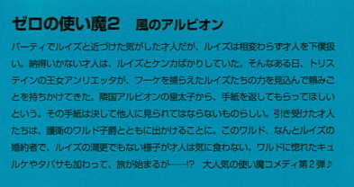
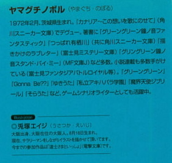

| [ヤマグチノボル] ゼロの使い魔02 | |
| ヤマグチノボル | |
| (2015) | |
|
ゼロの使い魔２〈風のアルビオン〉
ヤマグチノボル
|


底本データ
一頁17行 一行40文字 段組１段
文庫判15センチ
ISBN4-8401-1144-8
ゼロの使い魔２ 風のアルビオン
パーティでルイズと近づけた気がした才人だが、ルイズは相変わらず才人を下僕扱い。納得いかない才人は、ルイズとケンカばかりしていた。そんなある日、トリステインの王女アンリエッタが、フーケを捕らえたルイズたちの力を見込んで頼みごとを持ちかけてきた。隣国アルビオンの皇太子から、手紙を返してもらってほしいという。その手紙は決して他人に見られてはならないものらしい。引き受けた才人たちは、護衛のワルド子爵とともに出かけることに。このワルド、なんとルイズの婚約者で、ルイズの満更でもない様子が才人は気に食わない。ワルドに惚れたキュルケやタバサも加わって、旅が始まるが──!?大人気の使い魔コメディ第２弾♪
ヤマグチノボル（やまぐち・のぼる）
１９７２年２月、茨城県生まれ。『カナリア～この想いを歌にのせて』（角川スニーカー文庫）でデウュー。著書に『グリーングリーン鐘ノ音ファンタスティック』『つっぱれ有栖川』（共に角川スニーカー文庫）『描きかけのラブレター』（富士見ミステリー文庫）『グリーングリーン鐘ノ音スタンド・バイ・ミー』（ＭＦ文庫Ｊ）など多数。小説連載も多数手がけている（富士見ファンタジアバトルロイヤル等）。『グリーングリーン』『Gonna Be??』『ゆきうた』『私立アキハバラ学園』『魔界天使ジブリール』など、ゲームシナリオライターとしても活躍中。
◎兎塚エイジ（うさつか・えいじ）
大阪出身、大阪在住の大阪人。８月１６日生まれ。
現在、サラリーマンをしながらイラストを描かせて頂いています。
今までの参加作品は『導士さまといっしょ』（電撃文庫）です。
ゼロの使い魔２
〈風のアルビオン〉
※ＩＮＤＥＸ※
※第一章 秘密の小船.................................11
※第二章 王女の憂鬱.................................34
※第三章 幼馴染みの依頼...........................64
※第四章 港町ラ・ロシェール.....................88
※第五章 出港までの休日...........................119
※第六章 白い国.......................................152
※第七章 亡国の王子.................................179
※第八章 ニューカッスルの決戦前夜............194
※第九章 決戦..........................................222
登場人物
ゼロのルイズ
（ルイズ・フランソワーズ・ル・ブラン・ド・ラ・ヴァリエール）
十六歳／身長１５３サント／Ｂ７６、Ｗ５３、Ｈ７５
★好きな食べ物:クックベリーパイ
★趣味:編み物（超下手）
★特技:乗馬
★嫌いなもの:カエルとキュルケ
ワルド子爵
二十六歳。
女王陛下魔法衛士グリフォン隊隊長を務める。超エリートで美男子で、ルイズとは親が決めた婚約者同士。
サイト
（平賀才人）
十七歳／身長１７２センチ
★好きな食べ物:照り焼きバーガー（もう食えない）
★趣味:インターネット（もう見れない）
★特技:アクションゲーム（もうできない）
★嫌いなもの:体育の先生（もう会えない）
アンリエッタ王女
十七歳／身長１５８サント／Ｂ８４、Ｗ５９、Ｈ８５
国民から愛されるトリステインの美貌の王女だが、最近悩みがつきない様子。
青銅のギーシュ
（ギーシュ・ド・グラモン）
十七歳。
やたらとキザぶっているルイズの同級生。使い魔を溺愛している（種類は秘密）。
雷風のタバサ
（本名？？）
十五歳／身長１４２サント／Ｂ６８、Ｗ４９、Ｈ６７
★好きな食べ物:はしばみの草のサラダ
★趣味:読書（放っておくと一日中読んでいる）
★特技:サイコロ博打
★嫌いなもの:幽霊
微熱のキュルケ
（キュルケ・アウグスタ・フレデリカ・フォン・アンハルツ・ツェルプストー）
十八歳／身長１７１サント／Ｂ９４、Ｗ６３、Ｈ９５
★好きな食べ物:極楽鳥の蒸し焼き
★趣味:ジグソーパズル
★特技:ハープ
★嫌いなもの:雨とルイズ
第一章 秘密の小船
ルイズは自分のベッドの上で、夢を見ていた。トリステイン魔法学院から、馬で三日ほどの距離にある、生まれ故郷のラ・ヴァリエールの領地にある屋敷が舞台だった。
夢の中の幼いルイズは屋敷の中庭を逃げ回っていた。迷宮のような植え込みの陰に隠れ、追っ手をやり過ごす。二つの月の片一方、赤の月が満ちる夜......。
「ルイズ、ルイズ、どこに行ったの？ ルイズ！まだお説教は終わっていませんよ！」
そう言って騒ぐのは、母であった。夢の中でルイズは、デキのいい姉たちと魔法の成績を比べられ、物覚えが悪いと叱られていたのであった。
隠れた植え込みの下から、誰かの靴が見えた。
「ルイズお嬢様は難儀だねえ」
「まったくだ。上の二人のお嬢様はあんなに魔法がおできになるっていうのに......」
ルイズは悲しくて、悔しくて、歯噛みをした。召使たちは植え込みの中をがさごそと捜し始めた。見つかる、と思ったルイズはそこから逃げ出した。
そして......、彼女自身が『秘密の場所』と呼んでいる、中庭の池に向かう。
そこは......、ルイズが唯一安心できる場所だった。あまり人の寄りつかない、うらぶれた中庭......。池の周りには季節の花々が咲き乱れ、小鳥が集う石のアーチとベンチがあった。池の真ん中には小さな島があり、そこには白い石で造られた東屋が建っている。
島のほとりに小船が一艘浮いていた。舟遊びを楽しむための小船であった。しかし、今ではもう、この池で舟遊びを楽しむものはいない。姉たちはそれぞれ成長し、魔法の勉強で忙しかったし、軍務を退いた地方のお殿様である父は近隣の貴族との付き合いと、狩猟以外に興味はなかった。母は、娘たちの教育と、その嫁ぎ先以外、目に入らない様子であった。
そんなわけで、忘れさられた中庭の池と、そこに浮かぶ小船を気に留めるものは、この屋敷にルイズ以外ない。ルイズは叱られると、決まってこの中庭の池に浮かぶ小船の中に逃げ込むのであった。
夢の中の幼いルイズは小船の中に忍び込み、用意してあった毛布に潜り込む。そんな風にしていると......。
中庭の島にかかる霧の中から、一人のマントを羽織った立派な貴族が現れた。
年のころは十六歳ぐらいだろうか？ 夢の中のルイズは、六歳ぐらいの背格好だから、十ばかり年上に見えた。
「泣いているのかい？ ルイズ」
つばの広い、羽根つき帽子に隠れて、顔が見えない。でも、ルイズは彼が誰だかすぐにわかった。子爵だ。最近、近所の領地を相続した、年上の貴族。夢の中のルイズは、ほんのりと胸を熱くした。憧れの子爵。晩餐会をよく共にした。そして、父と彼との間で交わされた約束......。
「子爵さま、いらしてたの？」
幼いルイズは慌てて顔を隠した。みっともないところを憧れの人に見られてしまったので、恥ずかしかった。
「今日はきみのお父上に呼ばれたのさ。あのお話のことでね」
「まあー」
ルイズはさらに頬を染めて、俯いた。
「いけない人ですわ。子爵さまは......」
「ルイズ。ぼくの小さなルイズ。きみはぼくのことが嫌いかい？」
おどけた調予で、子爵が言った。夢の中のルイズは、首を振った。
「いえ、そんなことはありませんわ。でも......。わたし、まだ小さいし、よくわかりませんわ」
ルイズははにかんで言った。帽子の下の顔が、にっこりと笑った。そして、手をそっと差し伸べてくる。
「子爵さま......」
「ミ・レィディ。手を貸してあげよう。ほら、つかまって。もうじき晩餐会が始まるよ」
「でも......」
「また怒られたんだね？ 安心しなさい。ぼくからお父上にとりなしてあげよう」
島の岸辺から小船に向かって手が差し伸べられる。大きな手。憧れの手......。
ルイズは頷いて、立ち上がり、その手を握ろうとした。
そのとき、風が吹いて貴族の帽子が飛んだ。
「あ」
現れた顔を見て、ルイズは当惑の声をあげた。夢の中のことなので、いつの間にかルイズは六歳から十六歳の今の姿になっていた。
「な、なによあんた」
帽子の下から現れた顔は、憧れの子爵などではなく使い魔の才人であった。
「さあルイズ。おいで」
「おいでじゃないわよ。なんであんたがここにいるのよ」
「気にすんな。お前、俺に惚れてんだろ？」
瞳れの子爵の格好をした才人は、勝ち誇ったような調子で言つた。
なんだか自信たっぷりな夢の中の才人であった。
「ばかじゃないの！ ちょっと踊ってあげたぐらいでいい気にならないで！」
「強がっちやって。ばかだなあマイレィディ。俺のルイズ」
「誰があんたのルイズなのよ！」
才人は気にせずに、ルイズを抱きかかえようとした。
「やめてよ！ ばか！」
それでも気にせずに、才人は小船の中のルイズを抱きかかえた。
「なんであんたなのよ！ もう！」
ルイズはぽかぽかと才人を殴りつけたが、才人は気にせずに、にこにこと笑っているのであった。ルイズは顔を赤らめた。なんだか、才人に抱きかかえられていると妙な気分になって、それがさらに夢の中のルイズをいらだたせるのであった。
才人は自分の藁束の中でぱちりと目を開いた。窓の外には、二つの月が光り、室内を煌々と照らしている。ベッドの中から、う～んう～んとルイズのうなり声が聞こえてくる。どうやら悪い夢でも見ているらしい。
そのまま寝ててくれよと思いながら、才人はむくりと起き上がると、藁束から抜け出し匍匐前進を開始した。
ゆっくりと、少しずつ、慎重にルイズが寝息を立てているベッドに近づいた。壁に立てかけたデルフリンガーが、そんな才人の様子に気づき、声をかけた。
「眠れねえのか？ 相棒」
才人は振り向くと、口の先に指を立てた。
「黙ってろってか。なんでだ？」
才人は首を振った。そして再び、指を口元に立てて、相棒のインテリジェンスソードをにらみつけた。
「そんなつれねえ仕打ちは許せねえね。寂しい想いはまっぴらごめんだ。相棒がこんな夜更けにいきなり起き出したワケを言わねえってんなら、俺は怒鳴る。ああ、怒鳴る。悲しいからね」
デルフリンガーはそこまで言うと、ピリピリと震えた。本気で怒鳴るつもりらしい。困った剣である。
剣の声に反応したのか、ベッドの上のルイズがうーんとうなって寝返りを打った。
その目がぱちりと開いた。
才人は口から心臓が飛び出そうになった。
ルイズは上半身を起こすと、才人の方を向いて怒鳴り始めた。
「調子にのってないで早く掃除でもしなさい！埃がいっぱいじゃないの！これじゃあ掃除したっていわないのよ！愚図！愚図！クズ！ろくでなし！ごくつぶし！」
才人は、まるで『硬質』の呪文をかけられたように固まった。
しかし、ルイズはそれだけ怒鳴り散らすと、またベッドにばたりと横になり、寝息を立て始めた。寝ぼけていただけのようだ。どうやら夢の中でも才人をこき使っているらしい。ひどいヤツだと思いながらも、才人は安堵のため息を漏らした。
デルフリンガーが、呆れた声で感想を呟いた。
「寝言か。しかしまあ、ほんとのほんとにかわいくねえ寝言だね」
才人はデルフリンガーをにらみつけた。せっかくの計画を台無しにしようとしているインテリジェンスソードにゴキブリのような素早い動きで近づいて、小さな声で呟いた。
「......静かにしてろ。この錆び錆び野郎」
「ひでえ言い草だ。でも許す。おめえは相棒だかんね。そりゃ、相棒が黙ってろって言うんなら黙るけどよ、こんな夜中に起き出して、虫けらみてえに這いずり出した理由を教えてくれてもバチは当たるめえよ」
才人に似て、好奇心の強い剣であった。才人が匍匐前進でルイズのベッドに近づく理由がどうしても知りたいらしい。
才人はため息をつくとやれやれと両手を広げた。然る後に、ルイズのベッドを指差した。
「貴族の娘ッ子がどうしたね？」
才人は次に、自分を指差した。
「相棒がどうしたね？」
それから才人は、自分の頭の上で、腕を使ってハートマークをつくった。
「そりゃ、どういう意味だね？」
「愛してる」
「あの娘ッ子が？ 相棒を？」
「うん」
「なんで？」
才人は、立ち上がると、音を立てないように注意して社交ダンスを踊り始めた。
「はあ、この前の舞踏会か」
「踊ってるときのルイズの顔を、お前も見ただろ？」
「見た」
夢見るような口調で、才人は言った。
「赤かった......」
「赤かったなあ」
「もう、俺の手を握りたくて、握りたくて仕方がない顔だったな。ありゃ」
「そうか？」
「なあデルフ、お前はただの鉄の塊だから、女の心なんかわかんないだろうけど、人間界ではあんな顔を男に見せる女は、『あなたに恋してます』と言ってるようなものなんだよ」
才人は、剣をぽんぽんと叩きながら言った。
「確かに俺はただの剣だから、人間の男と女のことなんかわかんね。ま、相棒がそう言うんなら、そうなんだろうね」
「お前は、話のわかるヤツだな」才人は嬉しそうに頷いた。
「さては相棒、惚れてると確信しつつ、今からてごめにする気だね？」
「そうとも。惚れてると確信しつつ、てごめにしたいと思う。で、てごめってなに？」
「『無理やり』。俺は随分と長生きしているが、主人をてごめにする使い魔ってのは、初めて見るね。てーしたもんだ」
「いいぞ。もっと誉めろ」
「相棒は、てーしたもんだ」
才人は立ち上がって、胸を張った。調子に乗っていた。
「なあデルフ。この世界で一番かっこいいのは誰だ？」
「もちろん、相棒さね」
「魔法使いどもが威張りくさってるこの汚れた世界で、一番偉いのは誰だ？」
「もちろん、相棒さね」
才人はさらに胸をそらせた。沸々とワケのわからない自信がみなぎってくる。世界が、自分を祝福してくれてるように感じた。才人はまったくＩＱが足りてなかった。
「そんな偉くてかっこいい俺様にてごめにされるなんて、ルイズは幸せものだな」
「あの生意気な貴族の娘っ子は果報者だね。でも、どうして普通に口説かねえんだ？惚れられてるなら、何も寝ている隙でなくてもよさそうなもんだ」
もっともな意見である。しかし、才人は首を振った。
「あいつな、意地っ張り。素直じゃないの」
「そうみてえだな」
「普通に口説いたんじゃ、照れが災いして、『なに言ってるのかしら？この使い魔は！』なんつって、そっぽを向くに決まってるね」
「そのとおりだ。相棒は分限者だねえ」
「だろ？ だからてごめ。口ではああ生意気言っても、心の底じゃあ俺に征服されたがってる。なにせ惚れてるからね。ルイズはそういう女だよ」
「おお、俺の相棒は、天才じゃなかろうか」
「というわけで、俺は地球を代表して、ハルケギニアとかいう異世界の美少女をてごめにするであります。だからお前は静かにしてろ！いいな？」
デルフリンガーはぴくぴくと震えて、同意の意を示した。
「そういうことなら、俺は静かにしているよ」
才人は敬礼すると、忍び足でルイズのベッドに近づいた。
ルイズは寝息を立てている。なんともはや、あどけなく、清楚で美しいルイズの寝顔であった。まずは匂いを嗅いでみた。ほのかな、香水の香りが漂ってくる。
才人は、震えながらルイズの毛布をはいだ。
ネグリジェ姿のルイズが、月明かりに照らされた。華奢な体が、くっきりと柔らかいネグリジェの生地越しに確認できた。こうして見ると、胸だってわずかに膨らんでいる。ゼロというわけじゃない。そして、ルイズは寝るときに下着をつけないことを、才人は誰よりよく知っていた。なぜなら、朝、ルイズが身につける下着を用意するのは才人だったからだ。
才人は感動して、とにかく泣きそうになった。今から、この美少女が自分のものになるのだ。舞踏会の日から、一週間が過ぎていた。その間、才人は虎視眈々とチャンスをうかがっていたのである。
才人は、ルイズにぺこりとお辞儀をすると、手を合わせた。
「いただきます」
そして、飛び込みの要領でベッドに飛び込んだ。
「ああ、ルイズ、ルイズ、お前って肌がすべすべなんだよな！まったく！こんちくしょう！こここ、この野郎！」
何がちくしょうなんだかよくわからないが、才人は激しく興奮していた。思いっきりルイズに抱きつき、頬を擦り寄せた。
「ふが......」
それでもルイズは起きない。まったく、寝つきのいい娘であった。
「ああ、ルイズ、ルイズ、可愛いよルイズ！顔だけは！顔だけは可愛いよ！」
そして才人がもどかしげに、ルイズのネグリジェをたくし上げようとしたとき、ルイズの目がぱちくりと開いた。
才人は一瞬固まったが、すぐさまルイズをきつぅく抱きしめた。
「な、なによ！ あんた！ ちょっと！」
ルイズはすぐに、置かれた状況に気づいたらしい。抱きついた才人の手から逃れようと、じたばたと暴れ始めた。
「暴れるな、こら！」
「な、なに抱きついてんのよ！ ねえ！ はなしなさいよッ！」
「はなせ、だと？ おいおい惚れてんだろ？」
才人はルイズの目を、燃えた瞳で覗き込んだ。一瞬、そのワケのわからない迫力に押されて、ルイズはたじろいだ。
「はい？」
「俺にお前は惚れてる。違うか？」
ルイズの肩をがしっと押さえながら、自信たっぷりに才人は言った。
「な、なんでよ？」
「いいんだルイズ。俺はわかってる。意地っ張りなお前の気持ちを、俺は誰よりも理解しているよ。だからルイズ暴れるな。力を抜け」
才人の唇が近づいてくる。ルイズの顔から血の気がひいた。
惚れてる？ わたしが？ あんたに？
先ほど見た夢が頭の中でぐるぐる回る。夢の中の才人も、自信たっぷりにそんなことを言っていた。おまけに面と向かってそんなことを言われて、怒りが体の中に沸々と湧き上がってくる。夢と現実、両方の才人に激しい怒りを感じた。ああ、それは純粋な、エーテルのように純粋無垢な怒りであった。
ルイズの全身が震えだした。才人はその震えを、初めてだから怖がっているんだな、と勘違いした。彼はとにかくヌケていた。
「怖いのか？ 安心しろ。俺も初めてだ。じゃあ、ズボン、脱ぎます」
才人が一瞬、腰を浮かせた隙をルイズは見逃さなかった。
火竜が獲物をしとめるような動きで右足を跳ね上げ、一角竜の鋭い一撃のように、才人の股間を狙い打った。
「あが、ごげ......」
激痛で脳内に火花が飛んだ。才人は口から泡を吹いて床に転がった。ルイズはゆっくりと身を起こし、ベッドのそばに下げられた鞭をつかんだ。乗馬用の、見事な鞭である。
才人は芋虫のように這って逃げ出そうとしたが、鞭を持ったルイズに首根っこを踏みつけられ、あっけなく退路を断たれた。
「わたしになにしようとしたの？ ねえ？」
才人は痛みで体を丸めながら、喉の奥から声を絞り出す。
「愛の語らい。ほら、恋人同士が......」
ルイズは首根っこを踏んづけた足に力を込めた。
「一人でやってちょうだい」
「あれ？ ほ、惚れてるんじゃなかったのかな？勘違いかな？かな？」
「誰が？ 誰に？」
「えっと、ルイズお嬢様が、この俺に......」
「理由を述べて？ でも、わたしめちゃくちゃ怒ってるから簡潔にね？じゃないと自分でもうっかりなにするかわかんないから」
「ほら、この前の舞踏会のとき、この使い魔を見る目が、なんだかうっとりとしてらっしゃったように感じたものですから。から」
ルイズの頬が、さっと染まった。
「......そんで、あんたってば、わたしがあんたを好きになったと勘違いして、ベッドに忍び込んできたの？」
「ご明察で。お嬢様は、ああ、聡明であらせられます。もしやこの使い魔、とんでもない勘違いをば......」
「勘違いに決まってるじゃないの。とにかく、主人のベッドに忍び込む使い魔なんて聞いたことないわ」
「次からは気をつけます。はい」
ルイズはため息をついた。それから、心底才人に同情するような声で言った。
「次はないのよ」
「お嬢様、月が、月が綺麗です。二つも光ってます。ほら！ほら！」
才人は慌てて誤魔化すような調子でわめいた。
「よくもまあ、軽く見てくれたわね」
ルイズの声が、音叉のように細かく震えた。
煌々と光る二つの月をバックに、才人の絶叫が響き渡った。
さて、才人がルイズに散々にとっちめられている頃......。
遠く離れたトリステインの城下町の一角にあるチェルノボーグの監獄で、土くれのフーケはぼんやりとベッドに寝転んで壁を見つめていた。彼女は先日『破壊の杖』の一件で、才人たちに捕らえられた『土』系統の呪文を得意とするメイジである。彼女は散々貴族のお宝を荒らしまわった名うての怪盗だったので、魔法衛士隊に引き渡されるなり、すぐに城下で一番監視と防備が厳重なここ、チェルノボーグの監獄にぶちこまれたのである。
裁判は来週中にも行われるとのことだったが......。あれだけ国中の貴族のプライドを傷つけまくったのだから、軽い刑でおさまるとは思えない。たぶん、縛り首。よくって島流し。どっちにしろこのハルケギニアの大地に二度と立つことはないだろう。脱獄を考えたが、フーケはすぐに諦めた。
監獄の中には粗末なベッドと、木の机以外目につくものはない。ご丁寧に、食器まですべて木製であった。まあ、金属のスプーン一個あったところで、この監獄をどうこうできるわけではないが。
得意の『錬金』の魔法で壁や鉄格子を土に変え脱獄しようにも、杖を取り上げられてしまったので魔法が使えない。まったく、杖を持たないメイジは無力である。おまけに壁や鉄格子には魔法の障壁が張り巡らされている。たとえ『錬金』が使えようとも、ここから脱獄するのは不可能に思えた。
「まったく、かよわい女一人閉じ込めるのにこの物々しさはどうなのかしらね？」
苦々しげに呟く。
それからフーケは自分を捕まえた少年のことを思い出した。
「たいしたもんじゃないの！ あいつらは！」
ただの人間とは思えない、やたらとすばしっこい動きでフーケのゴーレムを翻弄し、あまつさえ『破壊の杖』を使いこなし、倒してのけた。
いったい、あの少年は何者なんだろう？
しかし、今となってはもう関係のないことだ。
とりあえず寝ようと思い......。
フーケは目をつむったが、すぐにぱちりと開いた。
フーケが投獄された監獄が並んだ階の上から、誰かが下りてくる足音がする。かつ、こつ、という音の中に、ガシャガシャと拍車の音が混じっている。何者だろう？階上に控える牢番なら、足音に拍車の音が混じるワケがない。フーケはベッドから身を起こした。
鉄格子の向こうに、長身の黒マントをまとった人物が現れた。白い仮面に覆われて顔が見えないが、マントの中から長い魔法の杖が突き出ている。どうやらメイジのようだ。
フーケは鼻を鳴らした。
「おや！ こんな夜更けにお客さんなんて、珍しいわね」
マントの人物は、鉄格子の向こうに立ったまま、フーケを値踏みするかのように黙りこくっている。
フーケはすぐに、おそらく自分を殺しにきた刺客だろうと当たりをつけた。散々国中の貴族をコケにした自分である。裁判なんてまだるっこしいことが面倒になって、自分を始末する気に違いない。盗んだ貴族の宝の中には、王室に無許可で手に入れた禁断の品や、他人に知られたくないものも交じっている。それが明るみに出たらまずい貴族の手の者かもしれない。口封じというわけだ。
「おあいにく。見てのとおり、ここには客人をもてなすような気の利いたものはございませんの。でもまあ、茶のみ話をしにきたって顔じゃありませんわね」
フーケは身構えた。囚われたとはいえ、むざむざとやられるつもりはなかった。魔法だけでなく、体術にもいささかの心得がある。しかし、鉄格子越しに魔法をかけられたら手の打ちようはない。なんとか油断させて、中に引きこもうとフーケは考えた。
黒マントの男が、口を開いた。年若く、力強い声だった。
「『土くれ』だな？」
「誰がつけたか知らないけど、確かにそう呼ばれているわ」
男は両手を広げて、敵意のないことを示した。
「話をしにきた」
「話？」
怪訝な声で、フーケは言った。
「弁護でもしてくれるっていうの？ 物好きね」
「なんなら弁護してやってもかまわんが。マチルダ・オブ・サウスゴータ」
フーケの顔が蒼白になった。それは、かつて捨てた、いや、捨てることを強いられた貴族の名であった。その名を知るものは、もうこの世にはないはずであった。
「あんた、何者？」
平静を装ったが無理だった。震える声で、フーケは尋ねた。男はその問いには答えずに、笑って言った。
「再びアルビオンに仕える気はないかね？ マチルダ」
「まさか！ 父を殺し、家名を奪った。王家に仕える気なんかさらさらないわ！」
フーケは、いつもの冷たい態度をかなぐり捨てて、怒鳴った。
「勘違いするな。何もアルビオンの王家に仕えろと言っているわけではない。アルビオンの王家は倒れる。近いうちにね」
「どういうこと？」
「革命さ。無能な王家はつぶれる。そして、我々有能な貴族が政を行うのだ」
「でも、あんたはトリステインの貴族じゃないの。アルビオンの革命とやらと、なんの関係があるっていうの？」
「我々はハルケギニアの将来を憂い、国境を越えて繋がった貴族の連盟さ。我々に国境はない。ハルケギニアは我々の手で一つになり、始祖ブリミルの光臨せし『聖地』を取り戻すのだ」
「バカ言っちゃいけないわ」
フーケは薄ら笑いを浮かべた。
「で、その国境を越えた貴族の連盟とやらが、このこそ泥になんの用？」
「我々は優秀なメイジが一人でも多く欲しい。協力してくれないかね？『土くれ』よ」
「夢の絵は、寝てから描くものよ」
フーケは手を振った。
ハルケギニアを一つにする？
トリステイン王国、帝政ゲルマニア、故郷のアルビオン王国、そしてガリア王国......、未だに小競り合いが絶えない国同士が、一つにまとまるなんて夢物語だ。
おまけに『聖地』を取り返すだって？ あの、強力なエルフどもから？
ハルケギニアから東に離れた地に住まうエルフたちによって、『聖地』が奪われてから幾百年。それから何度も、あまたの国が聖地を奪回しようと兵を送ったが、そのたびに無残な敗北を喫してきた。
長命と独特の尖った耳と文化を持つエルフたちは、そのすべてが強力な魔法使いであり、優秀な戦士なのだ。同じ数で戦えば、人間たちに勝利の機会がないことを、この幾百年でハルケギニアの王たちは学んできたはずである。
「わたしは貴族は嫌いだし、ハルケギニアの統一なんかにゃ興味がないわ。おまけに『聖地』を取り返すだって？エルフどもがあそこにいたいって言うんなら、好きにさせればいいじゃない」
黒マントの男は腰に下げた長柄の杖に手をかけた。
「『土くれ』よ。お前は選択することができる」
「言ってごらん」
「我々の同志となるか......」
あとをフーケが引き取った。
「ここで死ぬか、でしょ？」
「そのとおりだ。我々のことを知ったからには、生かしてはおけんからな」
「ほんとに、あんたら貴族ってやつは、困った連中だわ。他人の都合なんか考えないんだからね」
フーケは笑った。
「つまり選択じゃない。強制でしょ？」
男も笑った。
「そうだ」
「だったらはっきり、味方になれって言いなさいな。命令もできない男は嫌いだわ」
「我々と一緒に来い」
フーケは腕を組むと、尋ねた。
「あんたらの貴族の連盟とやらは、なんていうのかしら」
「味方になるのか？ ならないのか？ どっちなんだ」
「これから旗を振る組織の名前は、先に聞いておきたいのよ」
男はポケットから鍵を取り拙し、鉄格子についた錠前に差し込んで言った。
「レコン・キスタ」
第二章 王女の憂鬱
朝。
教室に現れたルイズを見て、クラスメイトたちは目を丸くした。なにやら、ボロ切れのようなものを、鎖につないで引きずって入ってきたからだ。ルイズ、随分と険しい表情であった。形のいい眉を、思いっきりひん曲げ、どすんと席についた。
「ねえ、ルイズ。あなた、何を引きずっているの？」
香水のモンモランシーが、口をぽかんとあけて、ルイズに尋ねた。
「使い魔よ」
「よく見ると、そうね」
モンモランシーは、頷いて言った。大きく腫れ上がった顔と、こびりついた血で原型を留めていないが、確かにそれはかつて才人だった物体であった。首と両手首に鎖が巻きつき、まるでゴミ袋のようにルイズに引きずられているのであった。
「なにしたの？ 彼」
「わたしのベッドに忍びこんだのよ」
「まあ！」
モンモランシーは驚いた顔をすると、見事な巻き毛を振り乱し、大げさにのけぞった。
「はしたない！ まあ、そんなベッドに忍びこむなんて！まあ！汚らわしい！不潔！不潔よ！」
そして、オウとか、ヨヨとか言いながら、ハンケチを取り出すと、それを噛み締めた。
颯爽と赤い髪をかきあげて教室に入ってきたキュルケが、ルイズをにらんだ。
「あなたが誘ったんでしょ？ ルイズ。エロのルイズ。娼婦のようにいやらしい流し目でも送ったんじゃないこと？」
「誰がエロのルイズよ！ それはあんたでしょーが！わたしは誘ってないわよ！」
「もう、こんな風になっちやって......、可哀想......、あたしが治してあげるわ」
そう言ってキュルケが、才人の頭を抱きしめた。巨大な胸で窒息しそうになるが、才人は降ってわいたオアシスに身をゆだねて鼻の下を伸ばした。
「アウアウアー」
「大丈夫？ どこが痛いの？ あたしが『治癒』で治してあげるわ」
「適当なこと言わないで。あんたに『水』系統の『治癒』が使えるわけないじゃないの。あんたの二つ名『お熱』でしょ。病気。熱病。少しは水で冷やしなさいよ」
ルイズが忌々しそうに言った。
「微熱よ。び・ねう。あなたって、記憶力までゼロなのね」
キュルケはルイズの胸をつついて言った。
「ゼロは胸と魔法だけにしときなさいよね」
ルイズの顔が赤く染まった。それでもルイズは唇をゆがめ頑張って冷笑を浮かべた。
「なんであんたみたいに胸だけ大きい女って、女性の価値を胸の大きさだけで決めようとするのかしら？それって、すっごく頭の悪い考えだと思うわ。ま、きっとカラッポなのよね。むむむ、胸に栄養取られて、頭がカカカ、カラッポなのよね」
冷静を装っていたが、声が震えている。かなり頭にきているようだ。
「声が震えてるわよ。ヴァリエール」
それからキュルケは、ボロボロの才人を優しく抱きしめ、頬に胸を押しつけた。
「ねえダーリン。あなたは、こんなに胸の大きいわたしをバカだと思う？」
「......す、素晴らしいと思います」
才人は、うっとりとした顔で、キュルケの胸に顔を埋めている。ルイズの眉が吊りあがった。ぐいっと、手に持った鎖を引っ張る。
「おごげげげげ」
首と手首と胴体を鎖に繋がれた才人は、床に転がった。
ルイズは、転がった才人の背中に足をのっけて、冷たく言い放った。
「誰があんたに人間の言葉を許可したの？『わん』でしょ。犬」
才人は弱々しい声で応えた。
「わ、わんです。はい」
「バカ犬。もう一度おさらいするわね。『はい』のときはどうすんだっけ？」
「わん」
「そうよね。『わん』が一回。「かしこまりましたご主人さま』は？」
「わんわん」
「そうよね。『わん』が二回。『トイレに行きたいです』は？」
「わんわんわん」
「そうよね。『わん』が三回。バカ犬はそれだけ言えれば上等だから、余計なこと言ったらお仕置きね」
「......わん」
「わんわん言ってるダーリンも可愛いわ！」
キュルケが才人の顎の下をなでた。
「ねえ、今晩はあたしのベッドにしのんでいらっしゃいな。ね？いっぱい、ワンちゃんに好きなところ舐めさせて、あ・げ・る」
才人はぴょんと膝で立つと、箒で作られた尻尾を振った。ルイズが昨晩、才人の尻にくっつけた代物である。よく見ると、頭にもボロ布で作った耳がついていた。
「わん！ わん！ わんわん！」
ルイズは無言でぐいっと鎖を引っ張る。
「ぐえ」
それから才人をがしがしと踏みつけた。
「ちゃんと『わん』って言ってるだうが！」
才人はさすがに頭にきて、がおーと立ち上がった。それからルイズに飛びかかろうとした。こうなったらこの場でてごめにしてやるぐらいの勢いであったが、妙にすばしこいルイズにあっけなく足を引っかけられ、床に転がった。
ルイズは例によって才人の頭を踏んづけた。目がつりあがり、鳶色の瞳が怒りで燃え上がっている。可愛い顔をまさにブレスを吐かんとする火竜のようにゆがめた。
「発情期のバカ犬は見境がないわね。ツェルプストーの女に尻尾は振るわ、ご主人様に襲いかかるわで、まあ大変、ままま、まあ大変」
ルイズは鞄の中から鞭を取り出すとそれで才人を叩き始めた。
「いだいっ！ やめっ！ やめてっ！ やーめーてッ！」
才人は体に鎖をつけたまま、床をのたうち回る。
「いたい？『わん』でしょ！ 『わん』でしょーがッ！犬は『わん」でしょう！」
ぴしっ、ぴしっと乾いた鞭の音が教室にこだまする。ルイズは髪を振り乱し、這いつくばって逃げようとする才人を追いかけ回し、鞭で叩いた。才人は鞭で叩かれるたびに、心底情けない犬声をあげた。伝説の使い魔とはとても思えない、たいした逃げっぷりであった。
クラスメイトたちはその情けないさまを見て、ほんとにこの平民はあの『青銅』のギーシュをやっつけ、『土くれ』のフーケを捕まえたんだろうか？と激しく疑問に思った。
「きゃん！ きゃん！」
クラスのメイジたちが唖然とした顔で才人を鞭で叩きまくるルイズを見つめている。夢中になっていたルイズははっとそんな様子に気づき、顔を赤らめた。誤魔化すように鞭をしまい、腕を組む。
「し、しつけはここまで！」
しつけにしてはひどい騒ぎだったが、クラスメイトたちはとばっちりを恐れ、顔を背けた。キュルケが呆れた声で言った。
「熱があるのはあなたじゃないの？ ヴァリエール」
ルイズはきつとキュルケをにらんだ。才人は蓄積したダメージで気絶してしまい、床の上にぐったりとのびていた。
教室の扉がガラッと開き、ミスタ・ギトーが現れた。
生徒たちは一斉に席についた。ミスタ・ギトーは、フーケの一件の際、当直をほっぽり出して寝ていたミセス・シュヴルーズを責め、オスマン氏に『君は怒りっぽくていかん』と言われた教師である。
長い黒髪に、漆黒のマントをまとったその姿は、なんだか不気味である。まだ若いのに、その不気味さと冷たい雰囲気からか、生徒たちに人気がない。
「では授業を始める。知ってのとおり、私の二つ名は『疾風』。疾風のギトーだ」
教室中が、しーんとした雰囲気に包まれた。その様子を満足げに見つめ、ギトーは言葉を続けた。
「最強の系統は知っているかね？ ミス・ツェルプストー」
「『虚無』じゃないんですか？」
「伝説の話をしているわけではない。現実的な答えを聞いてるんだ」
いちいち引っかかる言い方をするギトーに、キュルケはちょっとかちんときた。
「「火』に決まってますわ。ミスタ・ギトー」
キュルケは不敵な笑みを浮かべて言い放った。
「ほほう。どうしてそう思うね？」
「すべてを燃やしつくせるのは、炎と情熱。そうじゃございませんこと？」
「残念ながらそうではない」
ギトーは腰に差した杖を引き抜くと、言い放った。
「試しに、この私にきみの得意な『火』の魔法をぶつけてきたまえ」
キュルケはぎょっとした。いきなり、この先生はなにを言うのだろうと思った。
「どうしたね？ きみは確か、『火』系統が得意なのではなかったかな？」
挑発するような、ギトーの言葉だった。
「火傷じゃすみませんわよ？」
キュルケは、目を細めて言った。
「かまわん。本気できたまえ。その、有名なツェルプストー家の赤毛が飾りではないのならね」
キュルケの顔からいつもの小ばかにしたような笑みが消えた。
胸の谷間から杖を抜くと、炎のような赤毛が、ぶわっと熱したようにざわめき、逆立った。
杖を振った。目の前に差し出した右手の上に、小さな炎の玉が現れる。キュルケがなおも呪文を詠唱すると、その玉は次第に膨れ上がり、直径一メイルほどの大きさにもなった。
生徒たちが慌てて机の下に隠れる。
キュルケは手首を回転させたあと、右手を胸元にひきつけ、炎の玉を押し出した。
唸りをあげて自分めがけて飛んでくる炎の玉を避ける仕草も見せずに、ギトーは腰に差した杖を引き抜いた。そのまま剣を振るようにして薙ぎ払う。
烈風が舞い上がる。
一瞬にして炎の玉は掻き消え、その向こうにいたキュルケを吹っ飛ばした。
悠然として、ギトーは言い放った。
「諸君、『風』が最強たる所以を教えよう。簡単だ。『風』はすべてを薙ぎ払う。『火』も、『水』も、『土』も、『風』の前では立つことすらできない。残念ながら試したことはないが、『虚無』さえ吹き飛ばすだろう。それが「風』だ」
キュルケは立ち上がると、不満そうに両手を広げた。気にした風もなく、ギトーは続ける。
「目に見えぬ『風』は、見えずとも諸君らを守る盾となり、必要とあらば敵を吹き飛ばす矛となるだろう。そしてもう一つ、『風』が最強たる所以は......」
ギトーは杖を立てた。
「ユビキタス・デル・ウィンデ......」
低く、呪文を詠唱する。しかしそのとき......、教室の扉がガラッと開き、緊張した顔のミスタ・コルベールが現れた。
彼は珍妙ななりをしていた。頭に馬鹿でかい、ロールした金髪のカツラをのっけている。見ると、ローブの胸にはレースの飾りやら、刺繍やらが耀っている。何をそんなにめかしているのだろう？
「ミスタ？」
ギトーが眉をひそめた。
「あややや、ミスタ・ギトー！ 失礼しますぞ！」
「授業中です」
コルベールをにらんで、ギトーが短く言った。
「おっほん。今日の授業はすべて中止であります！」
コルベールは重々しい調子で告げた。教室中から歓声があがる。その歓声を抑えるように両手を振りながら、ミスタ・コルベールは言葉を続けた。
「えー、皆さんにお知らせですぞ」
もったいぶった調子で、コルベールはのけぞった、のけぞった拍子に、頭にのっけた馬鹿でかいカツラがとれて、床に落っこちた。ギトーのおかげで、重苦しかった教室の雰囲気が一気にほぐれた。
教室中がくすくす笑いに包まれる。
一番前に座ったタバサが、コルベールのつるつるに禿げ上がった頭を指差して、ぽつんと呟いた。
「滑りやすい」
教室が爆笑に包まれた。キュルケが笑いながらタバサの肩をぽんぽんと叩いて言った。
「あなた、たまに口を開くと、言うわね」
コルベールは顔を真っ赤にさせると、大きな声で怒鳴った。
「黙りなさい！ ええい！ 黙りなさいこわっぱどもが！大口を開けて下品に笑うとはまったく貴族にあるまじき行い！貴族はおかしいときは下を向いてこっそり笑うものですぞ！これでは王室に教育の成果が疑われる！」
とりあえずその剣幕に、教室中がおとなしくなった。
「えーおほん。皆さん、本日はトリステイン魔法学院にとって、よき日であります。始祖ブリミルの降臨祭に並ぶ、めでたい日であります」
コルベールは横を向くと、後ろ手に手を組んだ。
「恐れ多くも、先の陛下の忘れ形見、我がトリステインがハルケギニアに誇る可憐な一輪の花、アンリエッタ姫殿下が、本日ゲルマニアご訪問からのお帰りに、この魔法学院に行幸なされます」
教室がざわめいた。
「したがって、粗相があってはいけません。急なことですが、今から全力を挙げて、歓迎式典の準備を行います。そのために本日の授業は中止。生徒諸君は正装し、門に整列すること」
生徒たちは、緊張した面持ちになると一斉に頷いた。ミスタ・コルベールはうんうんと重々しげに頷くと、目を見張って怒鳴った。
「諸君が立派な貴族に成長したことを、姫殿下にお見せする絶好の機会ですぞ！御覚えがよろしくなるように、しっかりと杖を磨いておきなさい！よろしいですかな！」
魔法学院に続く街道を、金の冠を御者台の隣につけた四頭立ての馬車が、静々と歩んでいた。馬車のところどころには金と銀とプラチナでできたレリーフがかたどられている。
王室の紋章である。そのうちの一つ、聖獣ユニコーンと水晶の杖が組み合わさった紋章は、この馬車が王女の馬車であることを示していた。
なるほどよく見ると、馬車を引いているのはただの馬ではない。紋章と同じ、頭に一本の角を生やした、ユニコーンであった。無垢なる乙女しかその背に乗せないといわれるユニコーンは、王女の馬車を引くのにふさわしいとされているのであった。
馬車の窓には、綺麗なレースのカーテンが下ろされ、中の様子がうかがえないようになっていた。王女の馬車の後ろには、先帝亡き今、トリステインの政治を一手に握る、マザリーニ枢機卿の馬車が続いている。その馬車も王女の馬車に負けず劣らず立派であった。いや、王女の馬車より立派であった。その馬車の風格の差が、今現在のトリステインの権力を誰が握っているのか、雄弁にものがたっていた。
さて、二台の馬車の四方を固めるのは、王室直属の近衛隊、魔法衛士隊の面々である。名門貴族の子弟で構成された魔法衛士隊は、国中の貴族の憧れであった。男の貴族は誰もが魔法衛士隊の漆黒のマントをまといたがったし、女の貴族はその花嫁になることを望んでいる。トリステインの華やかさの象徴ともいえた。
街道は花々が咲き乱れ、街道に並んだ平民たちが、口々に歓呼の声を投げかける。
馬車が自分たちの前を通るたびに、
「トリステイン万歳！ アンリエッタ姫殿下万歳！」
と、歓声が沸きあがる。ときたま「マザリーニ枢機卿万歳！」との声もあがったが、姫殿下への万歳に比べたら、かなりの少数であった。平民の血が混じっているとの噂があるマザリーニ枢機卿は、なぜか民衆に人気がない。妬みというものかもしれなかった。
馬車の窓のカーテンがそっと開き、うら若い王女が顔を見せると、街道の観衆たちの歓声がいちだんと高くなる。王女は優雅に微笑を観衆に投げかけた。
アンリエッタ王女はカーテンを下ろし、深いため息をついた。そこには先ほど観衆たちに見せた、薔薇のような笑顔はない。あるのは、年に似合わない苦悩と、深い憂いの色であった。
王女は当年とって御年十七歳。すらりとした気品ある顔立ちに、薄いブルーの瞳、高い鼻が目を引く瑞々しい美女であった。細い指の中で、水晶のついた杖をいじっている。王族である彼女もまた、メイジなのであった。
街道の観衆たちの歓声も、咲き乱れる綺麗な花々も、彼女の心を明るくはしない。彼女は深い深い、恋と政治の悩みを抱えているのであった。
隣に座ったマザリーニ枢機卿が、口ひげをいじりながらそんな王女の顔を見つめた。坊主がかぶるような丸い帽子をかぶり、灰色のローブに身を包んだ痩せぎすの四十男である。髪もひげも、すでに真っ白、伸びた指は骨ばっている。年齢より十も老けて見えた。先帝亡き後、一手に外交と内政を引き受けた激務が、彼を老人にしてしまったのであった。
彼は先ほど自分の馬車からおり、王女の馬車に乗り込んでいた。
政治の話をするためである。しかし、王女はため息をつくばかりでまったく要領を得なかった。
「これで本日十三回目ですぞ。殿下」
困った声でマザリーニは言った。
「なにがですの？」
「ため息です。王族たるもの、無闇に臣下の前でため息などつくものではありませぬ」
「王族ですって！ まあ！」
アンリエッタは驚いた声で言った。
「このトリステインの王さまは、あなたでしょう？枢機卿。今、街で流行っている小唄はご存知かしら？」
「存じませんな」
マザリーニはつまらなそうに言った。それは嘘である。彼はトリステイン、いや、ハルケギニアのことなら、火山に住むドラゴンの鱗の数まで知っている。都合が悪いので、知らない振りをしているだけであった。
「それなら、聞かせてさしあげますわ。トリステインの王家には、美貌はあっても杖がない。杖を握るは枢機卿。灰色帽予の鳥の骨......」
マザリーニは目を細めた。『鳥の骨』などと王女の口から自分の悪口が飛び出たので、気分を害したのであった。
「街女が歌うような小唄など、口にしてはなりませぬ」
「いいじゃないの。小唄ぐらい。わたくしはあなたの言いつけどおりに、ゲルマニアの皇帝に嫁ぐのですから」
「しかたがありませぬ。目下、ゲルマニアとの同盟は、トリステインにとって急務なのです」
マザリーニは口をへの字に曲げて、言い放った。
「そのぐらい、わたくしだって知ってますわ」
「殿下もご存知でしょう？ かの『白の国』アルビオンの阿呆どもが行っている『革命』とやらを。きゃつらは、ハルケギニアに王権というものが存在するのがどうにも我慢がならないらしい」
アンリエッタは眉をひそめて言い放った。
「礼儀知らず！ 礼儀知らずのあの人たち！ かわいそうな王様を捕まえて、縛り首にしようというのですよ！わたくしは思います。この世のすべての人々が、あの愚かな行為を赦しても、わたくしと始祖ブリミルは赦しませんわ。ええ、赦しませんとも！」
「はい。しかしながらアルビオンの貴族どもは強力です。アルビオン王家は、明日にでも倒れてしまうでしょう。始祖ブリミルが授けし三本の王権のうち、一本がこれで潰えるわけですな。ま、内憂を払えもせぬ王家に、存在の価値があるとも思えませぬが」
「アルビオンの王家の人々は、ゲルマニアの成り上がりと違って、わたくしたちの親戚なのですよ？いくらあなたが枢機卿といえど、そのような言い草は許しません」
「これは失礼しました。私は本日寝る前に、始祖ブリミルの御前にて懺悔することにいたします。しかしながら、全部ほんとのことですぞ。殿下」
アンリエッタは悲しそうに首をかしげた。その様子は、うっとりするほどに美しかった。
「伝え聞いたところによると、あの馬鹿げた貴族どもは、ハルケギニアを統一するとかなんとか夢物語を吹いておるらしい。となると、自分たちの王を亡き者にしたあと、あやつらはこのトリステインに矛先を向けるでしょう。そうなってからでは遅いのです」
重々しい顔で、マザリーニは王女に告げた。アンリエッタはつまらなそうに窓の外を見つめている。
「先を読み、先に手を打つのが政治なのです、殿下。ゲルマニアと同盟を結び、近いうちに成立するであろう、アルビオンの新政府に対抗せねば、この小国トリステインは生き残れませぬ」
しかし、アンリエッタはため息をつくばかり。マザリーニは窓のカーテンをずらして、外を見た。そこには腹心の部下の姿があった。
羽帽子に長い口ひげが凛々しい、精悍な顔立ちの若い貴族であった。黒いマントの胸にはグリフォンをかたどつた刺繍が施されている。その理由は、彼の騎乗する幻獣を見れば、一目瞭然である。彼が跨っているのは、鷲の頭と翼と前足、そして獅子の胴体と後ろ足を持った、グリフォンそのものであった。
三つの魔法衛士隊の一つ、グリフォン隊隊長のワルド子爵であった。彼の率いるグリフォン隊は、魔法衛士隊の中でも、特に枢機卿の覚えがよい隊である。
選りすぐりの貴族で構成された魔法衛士隊は、それぞれが隊の名前を冠する幻獣に騎乗し、強力な魔法を操る畏怖と憧れの象徴であった。
「お呼びでございますか？ 睨下」
ワルドは目をきらっと光らせて、馬車の窓に騎乗したグリフォンを近づけた。窓が心持ち開かれ、マザリーニが顔を出した。
「ワルド君。殿下のご機嫌がうるわしゅうない。なにかお気晴らしになるものを見つけてきてくれないかね？」
「かしこまりました」
ワルドは頷くと、街道を鷹のような目で見回した。才気換発な彼は、すぐに目当てのものを街道の片隅に見つけると、グリフォンを走らせた。
腰に差した、レピアのような長い杖を引き抜くと、短くルーンを唱え、それを軽い仕草で振った。つむじ風が舞い上がり、ぴん、ぴん、と街道に咲いた花が摘まれ、ワルドの手元までやってくる。
ワルドはそれを持って馬車に近づくと、すっと窓から枢機卿に手渡そうとした。マザリーニは口ひげを捻りながら呟いた。
「隊長、おん手ずから殿下が受け取ってくださるそうだ」
「光栄でございます」
ワルドは一礼すると、馬車の反対側に回った。するすると窓が開き、アンリエッタが手を伸ばした。花を受け取ると、今度は左手が差し出された。
ワルドは感動した面持ちで、王女の手をとって、そこに口づけた。物憂い声で、王女がワルドに問うた。
「お名前は？」
「殿下をお守りする魔法衛士隊、グリフォン隊隊長、ワルド子爵でございます」
ワルドは恭しく頭を下げて言った。
「あなたは貴族の鑑のように、立派でございますわね」
「殿下のいやしきしもべに過ぎませぬ」
「最近はそのような物言いをする貴族も減りました。祖父が生きていた頃は......、ああ、あの偉大なるフィリップ三世の治下には、貴族は押しなべてそのような態度を示したものですわ！」
「悲しい時代になったものです。殿下」
「あなたの忠誠には、期待してよろしいのでしょうか？もし、わたくしが困ったときには......」
「そのような際には、戦の最中であろうが、空の上だろうが、なにをおいても駆けつける所存でございます」
アンリエッタは頷いた。ワルドは再び一礼すると、馬車から離れていった。
「あの貴族は、使えるのですか？」
アンリエッタはマザリーニに尋ねた。
「ワルド子爵。二つ名は『閃光』。かのものに匹敵する使い手は、『白の国』アルビオンにもそうそうおりますまい」
「ワルド......、聞いたことのある地名ですわ」
「確か、ラ・ヴァリエール公爵領の近くだったと存じます」
「ラ・ヴァリエール？」
アンリエッタは記憶の底をたぐった。それから、はたと頷く。確か、これから向かう魔法学院には......。
「枢機卿、土くれのフーケを捕まえた、貴族の名はご存知？」
「覚えておりませんな」
「そのものたちに、これから爵位を授けるのでは？」
アンリエッタは、怪訝な顔で問うた。マザリーニは、興味なさそうに言った。
「『シュヴァリエ』授与の条件が変わりましてな。従軍が必須になりました。盗賊を捕まえたぐらいで、授与するわけには参りませぬ。ゲルマニアとの同盟が成っても成らなくとも、いずれアルビオンとは戦になるでしょう。軍務に服する貴族たちの忠誠を、いらぬ嫉妬で失いたくはありませぬ」
「わたくしたちの知らないところで、いろんなことが決まっていくのね」
マザリーニは答えない。そう呟きながら、アンリエッタはたしか、盗賊を捕まえた貴族たちの中に、ラ・ヴァリエールの名前があったことを思い出した。
なんとかなるかもしれない。アンリエッタはそう思って、少し安心した。
マザリーニは、そんな王女をまじまじと見つめた。
「殿下。最近、宮廷と一部の貴族の間で、不穏な動きが確認されております」
アンリエッタはぴくりと体を震わせた。
「殿下のめでたきご婚礼を、ないがしろにして、トリステインとゲルマニアの同盟を阻止しようとする、アルビオンの貴族どもの暗躍があるとか......」
アンリエッタの額から、汗が一筋伝う。
「そのようなものたちに、つけこまれるような隙はありませんな？殿下」
しばしの沈黙が流れた。アンリエッタは苦しそうに口を開いた。
「......ありませんわ」
「そのお言葉、信じますぞ」
「わたくしは王女です。嘘はつきません」
それから、アンリエッタはため息をついた。
「......十四回目ですぞ。殿下」
「心配事があるものですから。いたしかたありませんわ」
「王族たるものは、お心の平穏より、国の平穏を考えるものですぞ」
アンリエッタはつまらなそうに言った。
「わたくしは、常にそうしております」
アンリエッタは、手に持った花をじっと見つめ、寂しそうに呟いた。
「......花は街道に咲くのが、幸せなのではなくって？枢機卿」
「人の手によって摘み取られるのも、また花の幸せと存じます」
魔法学院の正門をくぐって、王女の一行が現れると、整列した生徒たちは一斉に杖を掲げた。しゃん！と小気味よく杖の音が重なった。
正門をくぐった先に、本塔の玄関があった。そこに立ち、王女の一行を迎えるのは、学院長のオスマン氏であった。
馬車が止まると、召使たちが駆け寄り、馬車の扉まで緋毛氈のじゅうたんを敷き詰めた。
呼び出しの衛士が、緊張した声で、工女の登場を告げる。
「トリステイン王国王女、アンリエッタ姫殿下のおな────り────ッ！」
しかし、がちゃりと扉が開いて現れたのは枢機卿のマザリーニであった。
生徒たちは一斉に鼻を鳴らした。しかし、マザリーニは意に介した風もなく、馬車の横に立つと、続いて降りてくる王女の手を取った。
生徒の間から歓声があがる。
王女はにっこりと薔薇のような微笑を浮かべると、優雅に手を振った。
「あれがトリステインの王女？ ふん、あたしの方が美人じゃないの」
キュルケがつまらなそうに呟く。
「ねえ、ダーリンはどっちが綺麗だと思う？」
鎖につながれたまま、地面に転がっている才人にキュルケは尋ねた。
「わん」
「わんじゃわかんないわよ。ねえ、どっち？」
才人はルイズの方を見た。ルイズは、真面目な顔をして王女を見つめている。黙ってそうしていると、なんとも清楚で、美しく、華やかなルイズである。
いくら乱暴でも、才人に冷たくても、終いには犬扱いされても、ほんのときたま見せる優しさと、そんな清楚で美しい横顔が、才人をうっとりとさせてしまうのであった。
そのルイズの横顔が、はっとした顔になった。それから顔を赤らめる。才人はその表情の変化が気になった。いったい、どうしたんだろう？
首を伸ばして、ルイズの視線の先を確かめる。
その先には、見事な羽帽子をかぶった、凛々しい貴族の姿があった。鷲の頭と獅子の胴体を持った、見事な幻獣に跨っている。
ルイズはぼんやりとその貴族を見つめている。
才人は面白くなかった。あの貴族、確かにいい男かもしれないが、そんなにジロジロ見つめて頬を染めなくてもよさそうなもんだ。なんだよ浮気モノめ、と才人は思った。浮気もなにも、ルイズと才人はまったくそういう関係ではないのだが、そう思った。
いいもん、と才人は思った。俺にはキュルケがいるもん。胸の大きい赤毛の女の子。情熱的な美人、こうなったら完璧にキュルケに乗り換えてやる、と才人はなんだか激しく頭にきてそう思った。ののの、乗り換えてやる、と思った。
にっこりと笑ってキュルケのほうを見た。しかし、キュルケもルイズと同様、ぽーっと顔を赤らめて、ルイズと同じ羽帽子の貴族を見つめている。
才人はうなだれた。急に、体に巻きついた鎖が重くなったように感じ、そのまま地面にへたり込んだ。隣ではタバサが、王女とその一行が現れた騒ぎなどまったく気にも留めずに、座って本を広げている。
「お前は相変わらずだな」
才人はタバサにそう言った。タバサは顔をあげて、キュルケとルイズのほうを確かめ、才人の方を向いた。
それから才人を指差して「三日天下」と呟いた。
そしてその日の夜......。
才人は藁束の上に座り込んで、ルイズを見つめていた。なんだか、ルイズは激しく落ち着きがなかった、立ち上がったと思ったら、再びベッドに腰かけ、枕を抱いてぼんやりとしている。昼間、あの羽帽子の貴族を見てからこうである。あれからルイズは何もしゃべらずに、ふらふらと幽霊のように歩き出し、部屋にこもるなり、ベッドにこうやって腰掛けている。
「お前、ヘンだぞ」
才人は言った。それでもルイズは答えない。
立ち上がって、手を目の前で振ってみた。ルイズはそれでも動かない。
「ヘンだぞ！」
それから才人は、ルイズの髪を引っ張った。ルイズの髪は、細くて、軽く引いただけでもちぎれそうだが、どうしてどうして、なかなか丈夫だった。
くいくいと引いたが、それでもルイズはぼやーっとして、反応がない。
頬をつねってみた。反応はない。
「お着替えの時間です」
才人は恭しくルイズに一礼すると、ブラウスに手をかけた。一個ずつボタンを外していく。
ルイズはキャミソール姿になった。それでもルイズは魔法にかけられたように宙の一点を見つめ、動かない。つまらない。なんだこいつ。なにこれ。
才人はこほんと咳をした。
「ルイズお嬢様。この使い魔の生まれた世界には、『おっぱい体操』という文化があります」
もちろん適当である。才人はヤケになっていた。
「こう揉むとですな、なんと、ななんと、大きくなるのであります。一種の魔法だったりして」
『だったりして』じゃないのだが、才人はルイズの前から手を伸ばすと、抱きしめる格好になり、背中を揉み始めた。
「あれ？ ないですぞ。ないでございますよ？ってこっちは背中でございました！」
それからわざとらしく頭をかいた。
「いやぁ、ぺったんこだったもので......」
ルイズは動かない。才人のイヤミ混じりの一人ボケにもまるで無反応である。
「俺は！ 俺ってやつは！ どうしてこうなんだぁー！」
才人はそこまでやって、己の寒さに気づき、激しく頭を振り始めた。床にがしがしと頭を打ちつける。恥ずかしくてたまらなくなったとき、よくやる行為であった。
才人は悲しくなった。人間、罵られたり殴られたりするうちが華であることを才人は知った。なにがつらいって、無視が一番つらいのである。
そんな風に一人暴れていると、ドアがノックされた。
「誰だろ？」才人はルイズを促した。
ノックは規則正しく叩かれた。初めに長く二回、それから短く三回......。
ルイズの顔がはっとした顔になった。
急いでブラウスを身につけ、立ち上がる。そして、ドアを開いた。
そこに立っていたのは、真っ黒な頭巾をすっぽりとかぶった、少女だった。
辺りをうかがうように首を回すと、そそくさと部屋に入ってきて、後ろ手に扉を閉めた。
「......あなたは？」
ルイズは驚いたような声をあげた。
頭巾をかぶった少女は、し─っと言わんばかりに口元に指を立てた。それから、頭巾と同じ漆黒のマントの隙間から、魔法の杖を取り出すと軽く振った。同時に短くルーンを呟く。光の粉が、部屋に舞う。
「......ディティクトマジック？」
ルイズが尋ねた。頭巾の少女が頷く。
「どこに耳が、目が光っているかわかりませんからね」
部屋のどこにも、聞き耳を立てる魔法の耳や、どこかに通じる覗き穴がないことを確かめると、少女は頭巾を取った。
現れたのは、なんとアンリエッタ王女であった。才人はうっと息をのんだ。ルイズも稀に見るほどに可愛いが、王女はそれに加え、神々しいばかりの高貴さを放っている。
「姫殿下！」
ルイズが慌てて膝をつく。
才人はどうしていいのかわからずに、ぽけっと突っ立っていた。何がなにやらわからない。
アンリエッタは涼しげな、心地よい声で言った。
「お久しぶりね。ルイズ・フランソワーズ」
第三章 幼馴染みの依頼
ルイズの部屋に現れたアンリエッタ王女は、感極まった表情を浮かべて、膝をついたルイズを抱きしめた。
「ああ、ルイズ、ルイズ、懐かしいルイズ！」
「姫殿下、いけません。こんな下賤な場所へ、お越しになられるなんて......」
ルイズはかしこまった声で言った。
「ああ！ ルイズ！ ルイズ・フランソワーズ！そんな堅苦しい行儀はやめてちょうだい！あなたとわたくしはおともだち！おともだちじゃないの！」
「もったいないお言葉でございます。姫殿下」
ルイズは硬い緊張した声で言った。才人はぼけっと、二人の美少女が抱き合う様を見つめていた。
「やめて！ ここには枢機卿も、母上も、あの友達面をしてよってくる欲の皮の突っ張った宮廷貴族たちもいないのですよ！ああ、もう、わたくしには心を許せるおともだちはいないのかしら。昔馴染みの懐かしいルイズ・フランソワーズ、あなたにまで、そんなよそよそしい態度を取られたら、わたくし死んでしまうわ！」
「姫殿下......」
ルイズは顔を持ち上げた。
「幼い頃、いっしょになって宮廷の中庭で蝶を追いかけたじゃないの！泥だらけになって！」
はにかんだ顔で、ルイズが応えた。
「......ええ、お召し物を汚してしまって、侍従のラ・ポルトさまに叱られました」
「そうよ！ そうよルイズ！ ふわふわのクリーム菓子を取り合って、つかみあいになったこともあるわ！ああ、ケンカになると、いつもわたくしが負かされたわね。あなたに髪の毛をつかまれて、よく泣いたものよ」
「いえ、姫さまが勝利をお収めになったことも、一度ならずございました」
ルイズが懐かしそうに言った。
「思い出したわ！ わたくしたちがほら、アミアンの包囲戦と呼んでいるあの一戦よ！」
「姫さまの寝室で、ドレスを奪い合ったときですね」
「そうよ、『宮廷ごっこ』の最中、どっちがお姫さま役をやるかで揉めて取っ組み合いになったわね！わたくしの一発がうまい具合にルイズ・フランソワーズ、あなたのおなかに決まって」
「姫さまの御前でわたし、気絶いたしました」
それから二人はあははは、と顔を見合わせて笑った。才人は呆れて、そんな様子を見つめていた。おしとやかに見えた王女なのに、とんだお転婆娘である。
「その調子よ。ルイズ。ああいやだ、懐かしくて、わたくし、涙が出てしまうわ」
「どんな知り合いなの？」
才人が尋ねると、ルイズは懐かしむように目をつむって答えた。
「姫さまがご幼少のみぎり、恐れ多くもお遊び相手を務めさせていただいたのよ」
それからルイズはアンリエッタに向き直った。
「でも、感激です。姫さまが、そんな昔のことを覚えてくださってるなんて......。わたしのことなど、とっくにお忘れになったかと思いました」
王女は深いため息をつくと、ベッドに腰かけた。
「忘れるわけないじゃない。あの頃は、毎日が楽しかったわ。なんにも悩みなんかなくって」
深い、憂いを含んだ声であった。
「姫さま？」
ルイズは心配になってアンリエッタの顔を覗きこんだ。
「あなたが羨ましいわ。自由って素敵ね。ルイズ・フランソワーズ」
「なにをおっしゃいます。あなたはお姫様じゃない」
「王国に生まれた姫なんて、籠に飼われた鳥も同然。飼い主の機嫌一つで、あっちに行ったり、こっちに行ったり......」
アンリエッタは、窓の外の月を眺めて、寂しそうに言った。それからルイズの手を取って、にっこりと笑って言った。
「結婚するのよ。わたくし」
「......おめでとうございます」
その声の調子に、なんだか悲しいものを感じたルイズは、沈んだ声で言った。
そこでアンリエッタは、藁束の上に座った才人に気づいた。
「あら、ごめんなさい。もしかして、お邪魔だったかしら」
「お邪魔？ どうして？」
「だって、そこの彼、あなたの恋人なのでしょう？いやだわ。わたくしったら、つい懐かしさにかまけて、とんだ粗相をいたしてしまったみたいね」
「はい？ 恋人？ あの生き物が？」
「生き物って言うな」
才人は憮然とした声で言った。
「姫さま！ あれはただの使い魔です！ 恋人だなんて冗談じゃないわ！」
ルイズは思いきり首をぶんぶんと振って、アンリエッタの言葉を否定した。
「使い魔？」
アンリエッタはきょとんとした面持ちで、才人を見つめた。
「人にしか見えませんが......」
「人です。姫さま」
才人はわざとらしくアンリエッタに一礼した。
そして、恋人じゃないと強くルイズに言われたことで、さらにふかーく傷ついた。いや、そりゃもうそうなんだけど、傷ついてしまった。
昼間、若い貴族をじっと見つめていたルイズの横顔が蘇る。
どうせ俺なんて......、使い魔だし。地球人だし。貴族じゃないし。
っていうか家に帰りたいし。照り焼きバーガー食べたいし。ああ、出会い系の返事が来てるかもしれないし。なんかいろいろせつない想いが連鎖的に渦巻いた。
どんよりして壁に手をついた。才人は調子に乗るのも早ければ、落ち込むのも早かった。忙しい性格であった。
「そうよね。はあ、ルイズ・フランソワーズ、あなたって昔からどこか変わっていたけれど、相変わらずね」
「好きであれを使い魔にしたわけじゃありません」
ルイズは憮然とした。アンリエッタは再びため息をついた。
「姫さま、どうなさったんですか？」
「いえ、なんでもないわ。ごめんなさいね......、いやだわ、自分が恥ずかしいわ。あなたに話せるようなことじゃないのに......、わたくしってば......」
「おっしゃってください。あんなに明るかった姫さまが、そんな風にため息をつくってことは、なにかとんでもないお悩みがおありなのでしょう？」
「......いえ、話せません。悩みがあると言ったことは忘れてちょうだい。ルイズ」
「いけません！ 昔はなんでも話し合ったじゃございませんか！わたしをおともだちと呼んでくださったのは姫さまです。そのおともだちに、悩みを話せないのですか？」
ルイズがそう言うと、アンリエッタは嬉しそうに微笑んだ。
「わたくしをおともだちと呼んでくれるのね、ルイズ・フランソワーズ。とても嬉しいわ」
アンリエッタは決心したように頷くと、語り始めた。
「今から話すことは、誰にも話してはいけません」
それから才人のほうをちらっと見た。
「席、外そうか？」
アンリエッタは首を振った。
「いや、メイジにとって使い魔は一心同体。席を外す理由がありません」
そして、物悲しい調子で、アンリエッタは語り出した。
「わたくしは、ゲルマニアの皇帝に嫁ぐことになったのですが......」
「ゲルマニアですって！」
ゲルマニアが嫌いなルイズは、驚いた声をあげた。
「あんな野蛮な成り上がりどもの国に！」
「そうよ。でも、しかたがないの。同盟を結ぶためなのですから」
アンリエッタは、ハルケギニアの政治情勢を、ルイズに説明した。
アルビオンの貴族たちが反乱を起こし、今にも王室が倒れそうなこと。反乱軍が勝利を収めたら、次にトリステインに侵攻してくるであろうこと。
それに対抗するために、トリステインはゲルマニアと同盟を結ぶことになったこと。同盟のために、アンリエッタ王女がゲルマニア皇室に嫁ぐことになったこと......。
「そうだったんですか......」
ルイズは沈んだ声で言った。アンリエッタが、その結婚を望んでいないのは、口調から明らかであった。
「いいのよ。ルイズ、好きな相手と結婚するなんて、物心ついたときから諦めていますわ」
「姫さま......」
「礼儀知らずのアルビオンの貴族たちは、トリステインとゲルマニアの同盟を望んでいません。二本の矢も、束ねずに一本ずつなら楽に折れますからね」
アンリエッタは、呟いた。
「.........したがって、わたくしの婚姻をさまたげるための材料を、血眼になって探しています」
「もし、そのようなものが見つかったら......」
同盟だのアルビオンだの言われても、才人はなんだかよくわからなかったが、とにかく大変なことになっているらしい。才人は他八事のように、うん、大変だあ、と思いながら、頷いた。
「で、もしかして、姫さまの婚姻をさまたげるような材料が？」
ルイズが顔を蒼白にして尋ねると、アンリエッタは悲しそうに頷いた。
「おお、始祖ブリミルよ......、この不幸な姫をお救いください......」
アンリエッタは、顔を両手で覆うと、床に崩れ落ちた。なんだかその芝居がかった仕草に、才人はちょつと呆れた。いちいち大げさったらありゃしない。
「言って！ 姫さま！ いったい、姫さまのご婚姻をさまたげる材料ってなんなのですか？」
ルイズもつられたのか、興奮した様子でまくしたてる。両手で顔を覆ったまま、アンリエッタは苦しそうに呟いた。
「......わたくしが以前したためた一通の手紙なのです」
「手紙？」
「そうです。それがアルビオンの貴族たちの手に渡ったら......、彼らはすぐにゲルマニアの皇室にそれを届けるでしょう」
「どんな内容の手紙なんですか？」
「......それは言えません。でも、それを読んだら、ゲルマニアの皇室は......、このわたくしを赦さないでしょう。ああ、婚姻はつぶれ、トリステインとの同盟は反故。となると、トリステインは一国にてあの強力なアルビオンに立ち向かわねばならないでしょうね」
ルイズは息せきって、アンリエッタの手を握った。
「いったい、その手紙はどこにあるのですか？トリステインに危機をもたらす、その手紙とやらは！」
アンリエッタは、首を振った。
「それが、手元にはないのです。実は、アルビオンにあるのです」
「アルビオンですって！ では！ すでに敵の手中に？」
「いえ......、その手紙を持っているのは、アルビオンの反乱勢ではありません。反乱勢と骨肉の争いを繰り広げている、王家のウェールズ皇太子が......」
「プリンス・オブ・ウェールズ？ あの、凛々しき王子さまが？」
アンリエッタはのけぞると、ベッドに体を横たえた。
「ああ！ 破滅です！ ウェールズ皇太子は、遅かれ早かれ、反乱勢に囚われてしまうわ！そうしたら、あの手紙も明るみに出てしまう！そうなったら破滅です！破滅なのです！同盟ならずして、トリステインは一国でアルビオンと対峙せねばならなくなります！」
ルイズは息をのんだ。
「では、姫さま、わたしに頼みたいことというのは......」
「無理よ！ 無理よルイズ！ わたくしったら、なんてことでしょう！混乱しているんだわ！考えてみれは、貴族と王党派が争いを繰り広げているアルビオンに赴くなんて危険なこと、頼めるわけがありませんわ！」
「何をおっしゃいます！ たとえ地獄の釜の中だろうが、竜のアギトの中だろうが、姫さまの御為とあらば、何処なりと向かいますわ！姫さまとトリステインの危機を、このラ・ヴァリエール公爵家の三女、ルイズ・フランソワーズ、見過ごすわけにはまいりません！」
ルイズは膝をついて恭しく頭を下げた。
「『土くれ』のフーケを捕まえた、このわたくしめに、その一件、是非ともお任せくださいますよう」
壁に手をついて落ち込んでいた才人は振り返ると、ルイズに言った。
「や、俺では？」
ルイズは才人の方を見て、真顔で言った。
「あんたはわたしの使い魔よね」
「わん」
「使い魔の手柄は、主人の手柄よ」
自信たっぷりに、ルイズは言いきった。
「使い魔のミスは？」
「それはあんたのミスじゃないの」
なんか激しく騙されてる気がしたが、反論するだけ無駄ないつものルイズの剣幕だったので、才人はしぶしぶ頷いた。
「このわたくしの力になってくれるというの？ルイズ・フランソワーズ！懐かしいおともだち！」
「もちろんですわ！ 姫さま！」
ルイズがアンリエッタの手を握って、熱した口調でそう言うと、アンリエッタはぼろぼろと泣き始めた。
「姫さま！ このルイズ、いつまでも姫さまのおともだちであり、まったき理解者でございます！永久に誓った忠誠を、忘れることなどありましょうか！」
「ああ、忠誠。これが誠の友情と忠誠です！ 感激しました。わたくし、あなたの友情と忠誠を一生忘れません！ルイズ・フランソワーズ！」
才人はぽかんと口を開けて、半分呆れた気持ちで二人を見つめていた。自分の言葉に酔っているような、二人のやりとりであった。はぁ、これが貴族とお姫様というものか、面倒だなあと妙に納得しながら才人は見つめていた。
「ルイズ。友情を確認しあってるところ、誠に恐縮なのですが」
「あによ」
「戦争やってるアルビオンとやらに行くのはいいけど、どうせいろいろやるのは俺なんだろ？」
「あんたに剣買ってあげたでしょ。そんぐらいしなさいよね」
「はい。頑張ります......」
才人はせつない気持ちで頭を下げた。そういえば、自分の左手の甲に表れたのが伝説の使い魔『ガンダールヴ』のルーンであることは、まだ話してなかった。でも、この分じゃ言っても無駄なんだろうなあ、と才人は思った。
伝説だろうがなんだろうが、とりあえず犬扱いなんだろうな。
「アルビオンに赴きウェールズ皇太子を捜して、手紙を取り戻してくればよいのですね？姫さま」
「ええ、そのとおりです。『土くれ』のフーケを捕まえたあなたたちなら、きっとこの困難な任務をやり遂げてくれると思います」
「一命にかけても。急ぎの任務なのですか？」
「アルビオンの貴族たちは、王党派を国の隅っこまで追い詰めていると聞き及びます。敗北も時間の問題でしょう」
ルイズは真顔になると、アンリエッタに頷いた。
「早速明日の朝にでも、ここを出発いたします」
アンリエッタはそれから、才人の方を見つめた。才人はどきっとした。ルイズもアホみたいに愛らしく、清楚であったが、アンリエッタも王女なだけあって、息が止まりそうになるほど美しい。眉の上で切りそろえられた粟色の髪が、優しく泳いでいる。ブルーの瞳は、まるで南の海のように鮮やかに光っている。
白く、透明感漂う肌、高く形のいい彫刻のような鼻......。
才人はうっとりとしてアンリエッタを見つめた。そんな様子を、ルイズが冷たい視線で見つめている。なんだかご機嫌ななめのようだ。
なんでそんな目で俺を見るルイズ。そうか、うっとりとお姫さまを見つめていたからか。もしかしてやきもちか。でも、お前はあの、羽帽子の貴族を頬を染めて見ていたじゃないか。しかもそれからずっと上の空だったじゃないか。
やきもちを焼くなんておかしいだろルイズ。才人は首を振った。
恋人でもなんでもなく、俺は使い魔なのだろう？
お前にとって、犬に過ぎないんだろう？
犬に過ぎないのに、なぜそんな視線で俺を見るルイズ。ああ、犬だからか。犬の分際でお姫さまをじっと見てしまったからか。申しわけありません。生まれてすいません。わん。
才人はわずか二秒の間にそこまで頭を回転させた。
ルイズはふんっと才人から目を逸らした。才人も逸らした。
アンリエッタはそんな水面下の才人とルイズのやり取りに気づかず、明るい声で言った。
「頼もしい使い魔さん」
「はい？ 俺？」
アンリエッタに頼もしいと言われて、落ち込んでいた才人は嬉しくなった。
「いやぁ、それほどでも。犬扱いだし」
「わたくしの大事なおともだちを、これからもよろしくお願いしますね」
そして、すっと左手を差し出した。握手？ と思ったけど、手の甲を上に向けている。これはいったいなんのジェスチャーだろう？
ルイズが驚いた声で言った。
「いけません！ 姫さま！ そんな、使い魔にお手を許すなんて！」
「いいのですよ。この方はわたくしのために働いてくださるのです、忠誠には、報いるところがなければなりません」
「はあ......」
「お手を許すって、お手？ 犬がするヤツ？ そこまで犬扱い？」
才人はどんよりとして、うなだれた。
「違うわよ。もう、これだから犬は......、犬平民はなんも知らないんだから。お手を許すってことは、キスしていいってことよ。砕けた言い方をするならね」
「そんな、豪気な......」
才人はあんぐりと口をあけた。そんなにあっけなくキスを許すなんて、さすが、異世界の姫はデキが違うと思った。
アンリエッタはにっこりと才人に笑ってみせた。民衆に見せる営業スマイルであったが、才人は『好かれてる』と思った。こんなお姫様に好かれるなんて、俺も捨てたもんじゃねえ、と思った。
才人はルイズに、わざとらしくにこっと笑いかけた。ルイズはふんっと呟いて顔をそむけた。
あ、なんだ、やっぱりやきもち焼いてる。ざまあみろ。さつき、羽帽子のかっこいい貴族に見とれつつ、顔を赤らめた罰だ、と才人は思った。
才人はアンリエッタの手を取ると、そのままぐっと自分に引き寄せた。
「え？」
アンリエッタの口が、驚きでぽかんと開く。才人は間髪いれずに、アンリエッタの唇に、自分のそれを押しつけた。
「むぐ......」
柔らかく、小さな唇だった。アンリエッタは、目をまん丸に見開いた。
その円が白目に変わる。アンリエッタの体から力が抜け、才人の手をすり抜け、そのままベッドに崩れ落ちた。
「気絶？ ど、どうして？」
「姫殿下になにしてんのよッ！ いいいいい、犬────ッ！」
「わん？」
才人が振り向くと、ルイズの靴の裏が飛んできた。
顔面にルイズのとび蹴りを食らい、才人は床に転がる。
「なにすんだよっ！」
そう言った才人の顔を、ルイズは怒りに任せて踏みつけた。
「お手を許すってのは、手の甲にすんのよッ！手の甲にキスすんのッ！思いっきり唇にキスしてどーすんのよッ！」
ルイズは火がついたように怒りくるった。
「そんなこと言われてもね。お前らのルールなんか知らないもん」
顔を踏まれたまま、才人は手を広げて淡々と言った。踏まれるのに慣れきった才人がそこにいた。
「こここ、この、この犬ってば......」
ルイズの声が、激しく震え出した。
アンリエッタが、頭を振りながら、ベッドから起き上がった。ルイズが慌てて膝をつく。才人の頭をつかんで、床に押しつけた。
「も、申し訳ありません！ 使い魔の不始末は、わたしの不始末です！っていうかあんたもほら！謝りなさいよ！」
あのプライドの高いルイズが、人に謝っている。おまけに、わなわなと震えている。言うことをきかないと、後で激しくお仕置きを食らいそうだ。
才人も、仕方なく頭をかきながら、アンリエッタに謝った。
「すいません。でも、キスしていいって言うから」
「唇にするやつがどこにいんのよッ！」
「ここ」
ルイズは才人をグーで殴った。
「忘れてた。誰があんたに人間の言葉を許可したの？わんだろコラ。犬。ねえ、わんって言え。ほら、犬この。バカ犬」
そして、才人の頭を踏んづけ、ぐりぐりと床に押しつけた。
「い、いいのです。忠誠には報いるところがなければなりませんから」
努めて平静を装いながら、アンリエッタが頷いた。
そのとき、ドアがばたーんと開いて、誰かが飛び込んできた。
「きさまーッ！ 姫殿下にーッ！ なにをしてるかーッ！」
飛び込んできたのはなんと、以前才人と決闘したギーシュ・ド・グラモンであった。
相変わらず薔薇の造花を手に持っている。
「なんだお前」
才人は床に転がって、ルイズに顔を踏まれたまま言った。
「ギーシュ！ あんた！ 立ち聞きしてたの？今の話を！」
しかし、ギーシュは二人の問いには答えず、夢中になってまくし立てる。
「薔薇のように見目麗しい姫さまのあとをつけてきてみればこんな所へ......、それでドアの鍵穴からまるで盗賊のように様子をうかがえば......、平民のバカがキス......」
ギーシュは薔薇の造花を振り回して叫んだ。
「決闘だ！ バカチンがぁあああああ！」
才人は跳ね起きると、ギーシュの顔に拳を叩き込んだ。
「あがッ！」
「決闘だぁ？ ボケが！ テメエが俺の腕折ったの忘れてねえぞ！こちとらぁ！」
才人は倒れたギーシュをさんざんに蹴りまわし馬乗りになって首を絞めあげた。
「ひ、卑怯だぞ！ こら！ いだだだ！」
「で、どうします？ こいつ、お姫さまの話を立ち聞きしやがりましたけど。とりあえず縛り首にしますか？」
相手が男だと、扱いがひどい才人であった。
「そうね......、今の話を聞かれたのは、まずいわね......」
ギーシュは才人の隙をついて、立ち上がった。
「姫殿下！ その困難な任務、是非ともこのギーシュ・ド・グラモンに仰せつけますよう」
「え？ あなたが？」
「お前は寝てろ」
才人はギーシュの足を引っかけた。派手にギーシュはぶっ倒れる。
「ぼくも仲間に入れてくれ！」
倒れたまま、ギーシュはわめいた。
「どうしてだよ？」
ギーシュは、ぽっと顔を赤らめた。
「姫殿下のお役に立ちたいのです......」
才人はそんなギーシュの様子で、感づいた。
「お前、もしかして惚れやがったな？ お姫さまに！」
「失礼なことを言うんじゃない。ぼくは、ただただ、姫殿下のお役に立ちたいだけだ」
でも、そう言いながらギーシュは激しく顔を赤らめている。アンリエッタを見つめる熱っぽい目つきといい、惚れてるのは確かであった。
「お前、彼女がいただろうが。なんだっけ？ あの、モンモンだか......」
「モンモランシーだ」
「どうしたんだよ？」
しかし、ギーシュは無言だった。才人はなるほど、と思った。
「お前、フラれたな？ さては、完璧にフラれやがったな？」
「う、うるさい！ きみの所為だぞ！」
食堂での香水の一件だった。あれで二股がばれ、ギーシュはモンモランシーにワインを頭からかけられたのであった。
「グラモン？ あの、グラモン元帥の？」
アンリエッタが、きょとんとした顔でギーシュを見つめた。
「息子でございます。姫殿下」
ギーシュは立ち上がると恭しく一礼した。
「あなたも、わたくしの力になってくれるというの？」
「任務の一員にくわえてくださるなら、これはもう、望外の幸せにございます」
熱っぽいギーシュの口調に、アンリエッタは微笑んだ。
「ありがとう。お父さまも立派で勇敢な貴族ですが、あなたもその血を受け継いでいるようね。ではお願いしますわ。この不幸な姫をお助けください、ギーシュさん」
「姫殿下がぼくの名前を呼んでくださった！ 姫殿下が！トリステインの可憐な花、薔薇の微笑みの君がこのぼくに微笑んでくださった！」
ギーシュは感動のあまり、後ろにのけぞって失神した。
「大丈夫かこいつ？」
才人がギーシュをつつく。ルイズはそんな騒ぎには目もくれず、真剣な声で言った。
「では、明日の朝、アルビオンに向かって出発するといたします」
「ウェールズ皇太子は、アルビオンのニューカッスル付近に陣を構えていると聞き及びます」
「了解しました。以前、姉たちとアルビオンを旅したことがございますゆえ、地理には明るいかと存じます」
「旅は危険に満ちています。アルビオンの貴族たちは、あなたがたの目的を知ったら、ありとあらゆる手を使って妨害しようとするでしょう」
アンリエッタは机に座ると、ルイズの羽ペンと羊皮紙を使って、さらさらと手紙をしたためた。
アンリエッタは、じっと自分が書いた手紙を見つめていたが、そのうちに悲しげに首を振った。
「姫さま？ どうなさいました？」
怪訝に思ったルイズが声をかける。
「な、なんでもありません」
アンリエッタは顔を赤らめると、決心したように頷き、末尾に一行付け加えた。それから小さい声で呟く。
「始祖ブリミルよ......。この自分勝手な姫をお許しください。でも、国を憂いても、わたくしはやはり、この一文を書かざるをえないのです......。自分の気持ちに、嘘をつくことはできないのです......」
密書だというのに、まるで恋文でもしたためたようなアンリエッタの表情だった。ルイズはそれ以上、何も言うことができず、じっとそんなアンリエッタを見つめるばかり。
アンリエッタは書いた手紙を巻いた。杖を振る。すると、どこから現れたものか、巻いた手紙に封蝋がなされ、花押が押された。その手紙をルイズに手渡す。
「ウェールズ皇太子にお会いしたら、この手紙を渡してください。すぐに件の手紙を返してくれるでしょう」
それからアンリエッタは、右手の薬指から指輪を引き抜くと、ルイズに手渡した。
「母君から頂いた『水のルビー』です。せめてものお守りです。お金が心配なら、売り払って旅の資金にあててください」
ルイズは深々と頭を下げた。
「この任務にはトリステインの未来がかかっています。母君の指輪が、アルビオンに吹く猛き風から、あなたがたを守りますように」
第四章 港町ラ・ロシェール
朝もやの中、才人とルイズとギーシュは、馬に鞍をつけていた。才人はデルフリンガーを背負っていた。かなりの長剣なので、腰に下げるわけにはいかないのだった。
ルイズはいつもの制服姿だったが、乗馬用のブーツを履いていた。どうやら、長く馬に乗るつもりらしい。アルビオンはここからどのぐらいの距離なのだろう？怖くて聞けなかった。まだ馬に乗るのに慣れてはない。あう、腰をおかしくするかもしれない。
そんな風に出発の用意をしていると、ギーシュが、困ったように言った。
「お願いがあるんだが......」
「あんだよ」
才人は、馬の鞍に荷物をくくりつけながら、ぎろっとギーシュをにらみつける。才人は、あれだけ自分を痛めつけたギーシュを、許しているわけではなかった。
「ぼくの使い魔を連れていきたいんだ」
「使い魔なんかいたのか？」
「いるさ。当たり前だろ？」
才人とルイズは顔を見合わせた。それから、ギーシュの方を向いた。
「連れてきゃいいじゃねえか。っていうかどこにいるんだよ」
「ここ」
ギーシュは地面を指差した。
「いないじゃないの」
ルイズが、乗馬鞭を片手に、すました顔で言った。
ギーシュはにやっと笑うと、足で地面を叩いた。すると、モコモコと地面が盛り上がり、茶色の大きな生き物が、顔を出した。
ギーシュはすさっ！ と膝をつくと、その生き物を抱きしめた。
「ヴェルダンデ！ ああ！ ぼくの可愛いヴェルダンデ！」
才人は心底呆れた声で言った。
「なにそれ？」
「なにそれ、などと言ってもらっては困る。大いに困る。ぼくの可愛い使い魔のヴェルダンデだ」
「あんたの使い魔ってジャイアントモールだったの？」
果たしてそれは、巨大モグラであった。大きさは小さいクマほどもある。
「そうだ。ああ、ヴェルダンデ、きみはいつ見ても可愛いね。困ってしまうね。どばどばミミズはいっぱい食べてきたかい？」
モグモグモグ、と嬉しそうに巨大モグラが鼻をひくつかせる。
「そうか！ そりゃよかった！」
ギーシュは巨大モグラに頬を擦り寄せている。
「お前って、実は言うほどモテないだろ？」
才人は呆れた声で言った。
「ねえ、ギーシュ。ダメよ。その生き物、地面の中を進んでいくんでしょう？」
「そうだ。ヴェルダンデはなにせ、モグラだからな」
「そんなの連れていけないわよ。わたしたち、馬で行くのよ」
ルイズは困ったように言った。
「結構、地面を掘って進むの速いんだぜ？ なあ、ヴェルダンデ」
巨大モグラは、うんうんと頷く。
「わたしたち、これからアルビオンに行くのよ。地面を掘って進む生き物を連れていくなんて、ダメよ」
ルイズがそう言うと、ギーシュは地面に膝をついた。
「お別れなんて、つらい、つらすぎるよ......、ヴェルダンデ......」
そのとき、巨大モグラが鼻をひくつかせた。くんかくんか、とルイズに擦り寄る。
「な、なによこのモグラ」
「主人に似て、女好きなんかな」才人が言った。
「ちょ、ちょっと！」
巨大モグラはいきなりルイズを押し倒すと、鼻で体をまさぐり始めた。
「や！ ちょっとどこ触ってるのよ！」
ルイズは体をモグラの鼻でつつきまわされ、地面をのたうち回る。スカートが乱れ、派手にパンツをさらけだし、ルイズは暴れた。
才人はなんだかその光景を、眩しいものを見るように見守った。
「いやぁ、巨大モグラと戯れる美少女ってのは、ある意味官能的だな」
「そのとおりだな」
才人とギーシュは、腕を組んで頷きあった。
「バカなこと言ってないで助けなさいよ！ きゃあ！」
巨大モグラは、ルイズの右手の薬指に光るルビーを見つけると、そこに鼻を擦り寄せた。
「この！ 無礼なモグラね！ 姫さまに頂いた指輪に鼻をくっつけないで！」
ギーシュが頷きながら呟いた。
「なるほど、指輪か。ヴェルダンデは宝石が大好きだからね」
「イヤなモグラだな」
「イヤとか言わないでくれたまえ。ヴェルダンデは貴重な鉱石や宝石を僕のために見つけてきてくれるんだ。『土』系統のメイジのぼくにとって、この上もない、素敵な協力者さ」
そんな風にルイズが暴れていると......。
一陣の風が舞い上がり、ルイズに抱きつくモグラを吹き飛ばした。
「誰だッ！」
ギーシュが激昂してわめいた。
朝もやの中から、一人の長身の貴族が現れた。羽帽子をかぶっている。才人は息をのんだ。
こ、こいつは確か......。
「貴様、ぼくのヴェルダンデになにをするんだ！」
ギーシュはすっと薔薇の造花を掲げた。一瞬早く、羽帽子の貴族が杖を引き抜き、薔薇の造花を吹き飛ばす。模造の花びらが宙を舞った。
「僕は敵じゃない。姫殿下より、きみたちに同行することを命じられてね。きみたちだけではやはり心もとないらしい。しかし、お忍びの任務であるゆえ、一部隊つけるわけにもいかぬ。そこで僕が指名されたってワケだ」
長身の貴族は、帽子を取ると一礼した。
「女王陛下の魔法衛士隊、グリフォン隊隊長、ワルド子爵だ」
文句を言おうと口を開きかけたギーシュは相手が悪いと知ってうなだれた。魔法衛士隊は、全貴族の憧れである。ギーシュも例外でない。
ワルドはそんなギーシュの様子を見て、首を振った。
「すまない。婚約者が、モグラに襲われているのを見て見ぬ振りはできなくてね」
え？
才人の体が固まった。
婚約者だって？
才人の口があんぐりと開いた。
こいつが？ この羽帽子の凛々しい貴族が？ルイズの婚約者？
そうだったのか！
「ワルドさま......」
立ち上がったルイズが、震える声で言った。
「久しぶりだな！ ルイズ！ 僕のルイズ！」
僕のルイズ！ なにそれ！ 才人はさらに口をあんぐりとあけた。
ワルドは人なつっこい笑みを浮かべると、ルイズに駆け寄り、抱え上げた。
「お久しぶりでございます」
ルイズは頬を染めて、ワルドに抱きかかえられている。
「相変わらず軽いなきみは！ まるで羽のようだね！」
「......お恥ずかしいですわ」
「彼らを、紹介してくれたまえ」
ワルドはルイズを地面に下ろすと、再び帽子を目深にかぶって言った。
「あ、あの......、ギーシュ・ド・グラモンと、使い魔のサイトです」
ルイズは交互に指差して言った。ギーシュは深々と頭を下げた。才人はつまらなそうに頭を下げた。
「きみがルイズの使い魔かい？ 人とは思わなかったな」
ワルドは気さくな感じで才人に近寄った。
「ぼくの婚約者がお世話になっているよ」
「そりゃどうも」
才人は上から下までその貴族を見つめた。かっこいい。ああ、こいつかっこいい。ギーシュは確かに美少年だが、キザだし、落ち着きがないし、オマケに趣味が悪い、モグラに頬擦りするぐらいだし。実のところ、大してモテるとは思えない。なんというか、マニア受けするタイプである。
でも、こいつはかっこいい。なんていうの。フェロモン。それが出てる。目つきは鋭く、鷹のように光り、形のいい口ひげが男らしさを強調している。
そしてなんとも逞しい体つきだ。魔法使いはみんなギーシュみたいにヒョロヒョロだと思っていたら、違った。たぶんケンカをしたって、二秒で才人は捻られるだろう。
才人はため息をついた。才人のそんな様子を見て、ワルドはにっこりと笑うと、ぽんぽんと肩を叩いた。
「どうした？ もしかして、アルビオンに行くのが怖いのかい？なあに！何も怖いことなんかあるもんか。君はあの『土くれ』のフーケを捕まえたんだろう？その勇気があれば、なんだってできるさ！」
そう言って、あっはっは、と豪傑笑いをした。才人は悔しくなった。おまけに、こいつ、いいヤツじゃねえか。
なんか勝てそうなところが一個もない。そっかぁ、ルイズはこいつと結婚するのか、と思ったら、とても寂しくなった。
ルイズは、ワルドが現れた途端に落ち着きをなくし、なんだかそわそわしている。才人は顔を背けた。
ワルドが口笛を吹くと、朝もやの中からグリフォンが現れた。鷲の頭と上半身に、獅子の下半身がついた幻獣である。立派な羽も生えている。
ワルドはひらりとグリフォンに跨ると、ルイズに手招きした。
「おいで、ルイズ」
ルイズはちょっと躊躇うようにして、俯いた。その仕草が、なんだかやたらと恋する少女に見えて、才人を激しくやきもきさせた。
なにあいつ。おいでってなに。おいでってどういうこと。キザ！キザ！カァーッ！キザがいます！キザが！
才人は一応男の子だったので、悔しくても耐えた。黙って自分の馬に跨った。
ルイズはしばらくモジモジしていたが、ワルドに抱きかかえられ、グリフォンに跨った。
ワルドは手綱を握り、杖を掲げて叫んだ。
「では諸君！ 出撃だ！」
グリフォンが駆け出す。ギーシュも感動した面持ちで、後に続く。才人もがっくりと肩を落として、後に続いた。
才人はぼけっと空を見上げて、いったいアルビオンとやらはここからどのぐらい離れてるんだろうな、と思った。
アンリエッタは出発する一行を学院長室の窓から見つめていた。
目を閉じて、手を組んで祈る。
「彼女たちに、加護をお与えください。始祖ブリミルよ......」
隣では、オスマン氏が鼻毛を抜いている。
アンリエッタは、振り向くと、オスマン氏に向き直った。
「見送らないのですか？ オールド・オスマン」
「ほほ、姫、見てのとおり、この老いぼれは鼻毛を抜いておりますのでな」
アンリエッタは首を振った。
そのとき、扉がどんどんと叩かれた。「入りなさい」とオスマン氏が呟くと、慌てた様子のミスタ・コルベールが飛び込んできた。
「いいいい、一大事ですぞ！ オールド・オスマン！」
「きみはいつでも一大事ではないか。どうもきみはあわてんぼでいかん」
「慌てますよ！ わたしだってたまには慌てます！城からの知らせです！なんと！チェルノボーグの牢獄から、フーケが脱獄したそうです！」
「ふむ......」
オスマン氏は、口ひげを捻りながらうなった。
「門番の話では、さる貴族を名乗る怪しい人物に『風』の魔法で気絶させられたそうです！魔法衛士隊が、王女のお供で出払っている隙に、何者かが脱獄の手引きをしたのですぞ！つまり、城下に裏切り者がいるということです！これが大事でなくてなんなのですか！」
アンリエッタの顔が蒼白になった。
オスマン氏は手を振ると、コルベールに退室を促した。
「わかったわかった。その件については、あとで聞こうではないか」
コルベールがいなくなると、アンリエッタは、机に手をついて、ため息をついた。
「城下に裏切り者が！ 間違いありません。アルビオン貴族の暗躍ですわ！」
「そうかもしれませんな。あいだっ！」
オスマン氏は、鼻毛を抜きながら言った。その様子を、アンリエッタは呆れ顔で見つめた。
「トリステインの未来がかかっているのですよ。なぜ、そのような余裕の態度を......」
「すでに杖は振られたのですぞ、我々にできることは、待つことだけ。違いますかな？」
「そうですが......」
「なあに、彼ならば、道中どんな困難があろうとも、やってくれますでな」
「彼とは？ あのギーシュが？ それとも、ワルド子爵が？」
オスマン氏は首を振った。
「ならば、あのルイズの使い魔の少年が？ まさか！彼はただの平民ではありませんか！」
「姫は始祖ブリミルの伝説をご存知かな？」
「通り一遍のことなら知っていますが......」
オスマン氏はにっこりと笑った。
「では『ガンダールヴ』のくだりはご存知か？」
「始祖ブリミルが用いた、最強の使い魔のこと？まさか彼が？」
オスマン氏はしゃべりすぎたことに気づいた。『ガンダールヴ』のことは自分の胸一つに収めている。アンリエッタが信用できないわけではないが、まだ王室のものに話すのはまずい、そう思っていた。
「えーおほん、とにかく彼は『ガンダールヴ』並みに使えると、そういうことですな。ただ、彼は異世界から来た少年なのです」
「異世界？」
「そうですじゃ。ハルケギニアではない、どこか。『ここ』ではない、どこか。そこからやってきた彼ならばやってくれると、この老いぼれは信じておりますでな。余裕の態度もその所為なのですじゃ」
「そのような世界があるのですか......」
アンリエッタは、遠くを見るような目になった。その少年の唇の感触が、自分のそれに残っている。アンリエッタは、唇を指でなぞって目をつむると微笑んだ。
「ならば祈りましょう。異世界から吹く風に」
港町ラ・ロシェールは、トリステインから離れること早馬で二日、アルビオンへの玄関口である。港町でありながら、狭い峡谷の間の山道に設けられた、小さな街である。人口はおよそ三百ほどだが、アルビオンと行き来する人々で、常に十倍以上の人間が街を闊歩している。
狭い山道を挟むようにしてそそり立つ崖の一枚岩をうがって、旅籠やら商店が並んでいた。立派な建物の形をしているが、並ぶ建物の一軒一軒が、同じ岩から削り出されたものであることが近づくとわかる。『土』系統のスクウェアメイジたちの巧みの技であった。
峡谷に挟まれた街なので、昼間でも薄暗い。狭い裏通りの奥深く、さらに狭い路地裏の一角に、はね扉のついた居酒屋があった。
酒樽の形をした看板には『金の酒樽亭』と書かれている。金どころか、一見するとただの廃屋にしか見えないほどに小汚い。壊れた木製の椅子が、扉の隣に積み上げられている。
中で酒を飲んでいるのは、傭兵や、一見してならず者と思われる風体のものたちだった。
彼らは酔いが回ってくると、些細なことですぐに口論をおっぱじめる。理由はくだらないことばかり。俺の杯を受けなかった、とか、目つきが気に入らないとか、そんなことで肩をいからせ、相手につっかかっていく。
ケンカ騒ぎが起こるたびに、傭兵たちは武器をぬくので、死人や怪我人が続出する。見かねた主人は、店に張り紙をした。
『人を殴るときはせめて椅子をお使いください』
店の客たちは、主人の悲鳴のようなこの張り紙に感じ入り、ケンカのときには椅子を使うようになった。それでも怪我人は出たが、死人が出なくなっただけマシというものである。それから、ケンカの度に壊れた椅子が扉の隣に積み上げられるようになった。
さて、本日の『金の酒樽亭』は満員御礼であった。内戦状態のアルビオンから帰ってきた傭兵たちで店は溢れていた。
「アルビオンの王さまはもう終わりだね！」
「いやはや！ 『共和制』ってヤツの始まりなのか！」
「では、『共和制』に乾杯！」
そう言って乾杯しあって、がははと笑っているのは、アルビオンの王党派についていた傭兵たちである。彼らは、雇い主の敗北がほぼ決定的になった会戦のおり、逃げ帰ってきたのであった。別段、恥じる行為ではない。敗軍に最後まで付き合う傭兵などほとんどいない。職業意識より、命のほうが惜しい、それだけの話なのである。
そして、ひとしきり乾杯が済んだとき、はね扉ががたんと開き、長身の女が一人、酒場に現れた。女は目深にフードをかぶっているので、顔の下半分しか見えなかったが、それだけでもかなりの美人に見えた。こんな汚い酒場に、こんな綺麗な女が一人でやってくるなんて珍しい。店中の注目が、彼女に注がれる。
しかし、女はそんな視線を意に介した風もなく、ワインと肉料理を注文すると、隅っこの席に腰掛けた。酒と料理が運ばれてくると、女は給仕に金貨を渡した。
「こ、こんなに？ よろしいんで？」
「泊まり賃も入ってるのよ。部屋は空いてる？」
上品な声だった。貴族のようなイントネーションだったが、街の垢がついた物言いであった。主人は頷いて、去っていった。幾人かの男たちが、目配せをしながら立ち上がり、女の席に近づいた。
「お嬢さん。一人でこんな店に入っちゃいけねえよ」
「そそ。あぶねえ連中が多いからな。でも、安心しな。俺たちが守ってやるからよ」
そして、下卑た笑いを浮かべながら、男が女のフードを持ち上げた。ひょお、と口笛がもれる。女が、かなりの美人だったからだ。切れ長の目に、細く、高い鼻筋。
女は『土くれ』のフーケであった。
「こりゃ、上玉だ。見ろよ、肌が象牙みてえじゃねえか」
男がフーケの顎を持ち上げる。その手がぴしゃりと撥ねられた。フーケは、薄い笑いをうかべた。一人の男が立ち上がり、フーケの頬にナイフを当てた。
「ここじゃ刃物の代わりに、椅子を使うんじゃなかったかしら？」
「脅すだけさ。椅子じゃ脅しにならねえだろ？ま、かっこつけんな。男を漁りにきたんだろ？俺たちが相手してやるから」
ナイフに物怖じした様子も見せず、フーケは体を捻り杖を引き抜いた。
一瞬、呪文を唱える。
男の持ったナイフが、ただの土くれに変わり、ぽとぽととテーブルの上に落っこちる。
「き、貴族！」
男たちは後じさった。マントを羽織っていないので、メイジと気づかなかったのである。
「わたしはメイジだけど、貴族じゃないよ」
フーケは嘯くように言った。
「あんたたち、傭兵なんでしょ？」
男たちは呆気にとられて、顔を見合わせた。貴族でないなら、とりあえず命を落とす心配はなさそうだ。今みたいなことを貴族にしたら、それはもう、殺されたって文句は言えないのである。
「そ、そうだが。あんたは？」
年かさの男が口を開いた。
「誰だっていいじゃない。とにかく、あんたたちを雇いにきたのよ」
「俺たちを雇う？」
男たちは、当惑した顔でフーケを見つめた。
「なんて顔してるの。傭兵を雇うのが、おかしいの？」
「そ、そうじゃねえけど。金はあるんだろうな？」
フーケは金貨のつまった袋をテーブルの上に置いた。中を確かめて、男の一人が呟いた。
「おほ、エキュー金貨じゃねえか」
ばたんとはね扉を開いて、白い仮面にマントの男が現れた。フーケを脱獄させた貴族であった。
「おや、早かったね」
フーケが男を見て呟く。傭兵たちは、男の妙ななりを見て、息をのんだ。
「連中が出発した」仮面の男は言った。
「こっちもあんたに言われたとおり、人を雇ったよ」
白仮面の男は、フーケに雇われた傭兵たちを見回した。
「ところで貴様ら、アルビオンの王党派に雇われてたのか？」
傭兵たちは薄ら笑いを浮かべて答えた。
「先月まではね」
「でも、負けるようなやつぁ、主人じゃねえや」
傭兵たちは笑った。白仮面の男も笑った。
「金は言い値を払う。でも、俺は甘っちょろい王さまじゃない。逃げたら殺す」
魔法学院を出発して以来、ワルドはグリフォンを疾駆させっぱなしであった。才人たちは途中の駅で二回、馬を交換したが、ワルドのグリフォンは疲れを見せずに走り続ける。乗り手のようにタフな、幻獣であった。
「ちょっと、ペースが速くない？」
抱かれるような格好で、ワルドの前に跨ったルイズが言った。雑談を交わすうちに、ルイズのしゃべり方は昔の丁寧な言い方から、今の口調に変わっていた。ワルドがそうしてくれ、と頼んだ所為もある。
「ギーシュもサイトも、へばってるわ」
ワルドは後ろを向いた。礁かに、二人は半ば倒れるような格好で馬にしがみついている。今度は馬より先に、二人が参ってしまうようだった。
「ラ・ロシェールの港町まで、止まらずに行きたいんだが......」
「無理よ。普通は馬で二日かかる距離なのよ」
「へばったら、置いていけばいい」
「そういうわけにはいかないわ」
「どうして？」
ルイズは、困ったように言った。
「だって、仲間じゃない。それに......、使い魔を置いていくなんて、メイジのすることじゃないわ」
「やけにあの二人の肩を持つね。どちらかがきみの恋人かい？」
ワルドは笑いながら言った。
「こ、恋人なんかじゃないわ」
ルイズは顔を赤らめた。
「そうか。ならよかった。婚約者に恋人がいるなんて聞いたら、ショックで死んでしまうからね」
そう言いながらも、ワルドの顔は笑っている。
「お、親が決めたことじゃない」
「おや？ ルイズ！ 僕の小さなルイズ！ きみは僕のことが嫌いになったのかい？」
昔と同じ、おどけた口調でワルドが言った。
「もう、小さくないもの。失礼ね」
ルイズは頬を膨らませた。
「僕にとっては未だ小さな女の子だよ」
ルイズは先日見た夢を思い出した。生まれ故郷の、ラ・ヴァリエールの屋敷の中庭。
忘れ去られた池に浮かぶ、小さな小船......。
幼い、頃、そこで拗ねていると、いつもワルドが迎えにきてくれた。
親同士が決めた結婚......。
幼い日の約束。婚約者。こんやくしゃ。
あの頃は、その意味がよくわからなかった。ただ、憧れの人とずっといっしょにいられることだと教えてもらって、なんとなく嬉しかった。
今ならその意味がよくわかる。結婚するのだ。
「嫌いなわけないじゃない」
ルイズは、ちょっと照れたように言った。
「よかった。じゃあ、好きなんだね？」
ワルドは、手綱を握った手で、ルイズの肩を抱いた。
「僕はずっときみのことを忘れずにいたんだよ。覚えているかい？僕の父がランスの戦で戦死して......」
ルイズは頷いた。
ワルドは、思い出すようにして、ゆっくりと語り始めた。
「母もとうに死んでいたから、爵位と領地を相続してすぐ、僕は街に出た。立派な貴族になりたくてね。陛下は戦死した父のことをよく覚えていてくれた。だからすぐに魔法衛士隊に入隊できた。最初は見習いでね、苦労したよ」
「ほとんど、ワルドの領地には帰ってこなかったものね」
ルイズは思い出すように、目をつむった。
「軍務が忙しくてね、未だに屋敷と領地は執事のジャン爺に任せっぱなしさ。僕は一生懸命、奉公したよ。おかげで出世した。なにせ、家を出るときに決めたからね」
「なにを？」
「立派な貴族になって、きみを迎えにいくってね」
ワルドは笑いながら言った。
「冗談でしょ。ワルド、あなた、モテるでしょう？なにも、わたしみたいなちっぽけな婚約者なんか相手にしなくても......」
ワルドのことは、夢を見るまで忘れていた。ルイズにとってワルドは現実の婚約者というより、遠い想い出の中の憧れの人だった。
婚約だって、とうに反故になったと思っていた。戯れに、二人の父が交わしたあてのない約束......。そのぐらいにしか思っていなかった。
十年前に別れて以来、ワルドにはほとんど会うこともなかったし、その記憶は遠く離れていた。だから、先日ワルドを見かけたとき、ルイズは激しく動揺したのだ。
想い出が不意に現実になってやってきて、どうすればいいのかわからなかったのだ。
「旅はいい機会だ」ワルドは落ち着いた声で言った。
「いっしょに旅を続ければ、またあの懐かしい気持ちになるさ」
ルイズは思った。自分はワルドのことを好きなのだろうか？
そりゃ、嫌いじゃない。確かに憧れていた。それは間違いない。でも、それは想い出の中の出来事だった。
いきなり婚約者だ、結婚だ、なんて言われても、どうすればいいのかわからない。
なんていうか、離れていた分だけ、ほんとに好きなのかどうかまだよくわからない。
ルイズは後ろを振り向いた。
才人がぐったりとして馬に跨っている。かなりへばっているようだ。ルイズは舌打ちをした。情けないんだから！と思ったら、なんだかやきもきして、胸が震えた。
「もう半日以上、走りっぱなしだ。どうなってるんだ。魔法衛士隊の連中は化け物か」
ぐったりと馬に体を預けた才人に、隣をゆくギーシュが声をかけた。才人と同じように、馬の首にぐったりと上半身を預けている。
「知るか」
才人は疲れた声で言った。ワルドがルイズの体に触れるたびに、気が気ではなかった。あ、触った。肩抱いた。なにあいつ。やるなとは言わない。婚約者だし。でも少なくとも、俺の見えないところでやって欲しい。
そんな風に考えるたびに、さらにぐったりと疲れる。気が滅入る。
ギーシュは、そんな才人の様子を見て、ニヤニヤと笑った。
「ぷ、ぷぷ。もしかして、きみ......、やきもち焼いてるのかい？」
「あ？ どーゆー意味だ！」
才人はがばっと馬から身を起こした。
「あれ、当たった？ もしかして図星？」ギーシュはさらにニヤニヤと笑う。
「黙ってろ。モグラ野郎」
「ぷ、ぷぷぷ。ご主人様に、適わぬ恋を抱いたのかい？いやはや！悪いことは言わないよ。身分の違う恋は不幸の元だぜ？しっかし、君も哀れだな！」
「うるせえ。あんなやつ、好きでも何でもねえや。ま、確かに顔はちょっと可愛いけど、性格最悪」
ギーシュは前を向くと、驚いた声で言った。
「あ、キスしてる」
才人はぎょっとして、前を見た。目をこらす。しかし、二人はキスなんかしていない。
ギーシュの方を見ると、口を押さえて笑いをこらえている。
「ぬお」
才人はうなり声をあげてギーシュに飛びかかった。二人は馬から転げ落ち、取っ組み合いを開始した。
「こら、置いてくぞ！」そんな二人に、ワルドが怒鳴る。
ギーシュが慌てて馬に跨る。才人は、ルイズがこっちを見ていることに気づいた。
目が合ったので、才人は顔をそむけた。
馬を何度も替え、飛ばしてきたので、才人たちはその日の夜中にラ・ロシェールの入り口についた。才人は怪訝そうに辺りを見回した。港町だというのに、ここはどう見ても山道である。どこにも海なんかありそうにない。一山越えれば、海が見えるのかもしれない。
月夜に浮かぶ、険しい岩山の中を縫うようにして進むと、峡谷に挟まれるようにして街が見えた。街道沿いに、岩をうがって造られた建物が並んでいる。
「なんで港町なのに山なんだよ」
才人がそう言うと、ギーシュが呆れたように言った。
「きみは、アルビオンを知らないのか？」
すでに才人もギーシュも、体力の限界であったが、これで一息つけるという安心感からか饒舌になっていた。
「知るか」
「まさか！」
ギーシュは笑ったが、才人は笑わない。
「ここの常識を、俺の常識と思ってもらっちゃ困る」
そのときだ。
不意に、才人たちの跨った馬めがけて、崖の上から松明が何本も投げ込まれた。
松明は赤々と燃え、才人たちが馬を進める峡谷を照らす。
「な、なんだ！」ギーシュが怒鳴った。
いきなり飛んできた松明の炎に、戦の訓練を受けていない馬が驚き、前足を高々とあげたので、才人とギーシュは馬から放り出された。
そこを狙って、何本もの矢が夜風を裂いて飛んでくる。
「奇襲だ！」ギーシュが喚いた。
スカッと軽い音を立てて、矢は地面に突き刺さる。
才人は慌てた。背中にしょったデルフリンガーを握ろうとしたら、ひゅんひゅんと二の矢が飛んでくる。
無数の矢が、才人とギーシュめがけて殺到した。
「わっ！」
もはやこれまでと、思わず口をつむった。そのとき......。
一陣の風が舞い起こり、才人たちの前の空気がゆがみ、小型の竜巻が現れた。
竜巻は飛んできた矢を巻き込むと、あさっての方に弾き飛ばした。
グリフォンに跨ったワルドが、杖を掲げている。
「大丈夫か！」ワルドの声が才人に飛んだ。
「だ、大丈夫です......」
うう、ルイズの婚約者に助けられた！ 情けない気持ちがむくむくと溢れ、才人の劣等感を刺激した。背中のデルフリンガーを引き抜いた。左手のルーンが光る。くたくたに疲れていたが、体が軽くなったことで、疲労感が軽減された。
「相棒、寂しかったぜ......。鞘に入れっぱなしはひでえや」
才人は崖の方を見つめたが、今度は矢は飛んでこない。
「夜盗か山賊の類か？」
ワルドが呟いた。ルイズが、はっとした声で言った。
「もしかしたら、アルビオンの貴族の仕業かも......」
「貴族なら、弓は使わんだろう」
そのとき......、ばっさばっさと、羽音が聞こえた。才人たちは、顔を見合わせた。
どこかで聞いたことのある羽音である。
崖の上から男たちの悲鳴が聞こえてくる。どうやら、いきなり自分たちの頭上に現れたものに、恐れ、おののいている声だった。
男たちは夜空に向けて矢を放ち始めた。しかし、その矢は風の魔法で逸らされた。
次に小型の竜巻が舞い起こり、崖の上の男たちを吹き飛ばす。
「おや、『風』の呪文じゃないか」ワルドが呟いた。
ガランガランと、弓を射っていた男たちが崖の上から転がり落ちてきた。
男たちは、硬い地面に体をしたたかに打ちつけ、うめきをあげた。
月をバックに、見慣れた幻獣が姿を見せた。ルイズが驚いた声をあげた。
「シルフィード！」
確かにそれはタバサの風竜であった。地面に降りてくると、赤い髪の少女が風竜からぴょんと飛び降りて、髪をかきあげた。
「お待たせ」
ルイズがグリフォンから飛び降りて、キュルケに怒鳴った。
「お待たせじゃないわよッ！ 何しにきたのよ！」
「助けにきてあげたんじゃないの。朝がた、窓から見てたらあんたたちが馬に乗って出かけようとしてるもんだから、急いでタバサを叩き起こして後をつけたのよ」
キュルケは風竜の上のタバサを指差した。寝込みを叩き起こされたらしく、パジャマ姿であった。それでもタバサは気にした風もなく、本のページをめくっている。
「ツェルプストー。あのねえ、これはお忍びなのよ？」
「お忍び？ だったら、そう言いなさいよ。言ってくれなきゃわからないじゃない。とにかく、感謝しなさいよね。あなたたちを襲った連中を、捕まえたんだから」
キュルケは倒れた男たちを指差した。怪我をして動けない男たちは口々に罵声をルイズたちに浴びせかけている。ギーシュが近づいて、尋問を始めた。
ルイズは腕を組むと、キュルケをにらみつける。
「勘違いしないで。あなたを助けにきたわけじゃないの。ねえ？」
キュルケはしなをつくると、グリフォンに跨ったワルドににじり寄った。
「おひげが素敵よ。あなた、情熱はご存知？」
ワルドは、ちらっとキュルケを見つめて、左手で押しやった。
「あらん？」
「助けは嬉しいが、これ以上近づかないでくれたまえ」
「なんで？ どうして？ あたしが好きって言ってるのに！」
とりつく島のない、ワルドの態度であった。今まで、こんな冷たい態度を男に取られたことはなかった。どんな男だって、自分に言い寄られたら、どこかに動揺の色を見せたものである。しかしワルドにはそれがない。キュルケは口をあんぐりと開けて、ワルドを見つめた。
「婚約者が誤解するといけないのでね」
そう言って、ルイズを見つめる。ルイズの頬が染まった。
「なあに？ あんたの婚約者だったの？」
キュルケはつまらなそうに言った。ワルドは頷いた。ルイズは、困ったようにもじもじし始めた。キュルケはワルドを見つめた。
遠目ではわからなかったが、目が冷たい。まるで氷のようだ。キュルケは鼻を鳴らした。なにこいつ、つまんない、と思った。
それから才人を見た。なんだか、元気がない。しょぼくれた様子で、剣とブツブツ会話を交わしている。
あら？ もしかして、あたしがワルドに色目を使ったから元気がないのかしら？と思ったら、急に才人が可愛く見えた。キュルケは才人に抱きついた。
「ほんとはね。ダーリンが心配だったからよ！」
才人は驚いた顔をしたが、すぐにキュルケから顔を背けた。
「嘘つけ」
唇を尖らせて、才人は言った。あ、やきもち？と思ったら、キュルケの心の中に、ぽっと情熱の火がともった。
「可愛い。可愛いわ！ あなた、やきもち焼いてるのね？」
「別に......」
「ごめんなさいね！ あたしが冷たくしたもんだから、怒ってるんでしょう？」
キュルケはそう言ってきゃあきゃあ騒ぎながら、才人の顔に、自分のメロンのような胸を押しつける。
「許してちょうだい！ ちょっとよそ見はしたけれど、あたしはなんたってあなたが一番好きなのよ！」
ルイズは唇を噛んだあと、怒鳴ろうとした。ツェルプストーの女に、使い魔が取られるのは我慢できない。
そっとワルドが、そんなルイズの肩に手を置いた。ワルドはルイズを見て、にっこりと微笑みかける。
「ワルド......」
そこに男たちを尋問していたギーシュが戻ってきた。
「子爵、あいつらはただの物取りだ、と言ってます」
「ふむ......、なら捨て置こう」
ひらりとグリフォンに跨ると、ワルドは颯爽とルイズを抱きかかえた。
「今日はラ・ロシェールに一泊して、朝一番の便でアルビオンに渡ろう」
ワルドは一行にそう告げた。
キュルケは才人の馬の後ろに跨って、楽しそうにきゃあきゃあ騒いでいる。ギーシュも馬に跨った。風竜の上のタバサは、相変わらず本を読んでいた。
道の向こうに、両脇を峡谷で挟まれた、ラ・ロシェールの街の灯りが怪しく輝いていた。
第五章 出港までの休日
ラ・ロシェールで一番上等な宿、『女神の杵』亭に泊まることにした一行は、一階の酒場で、くつろいでいた。いや、一日中馬に乗っていたのでクタクタになっていた。
『女神の杵』亭は、貴族を相手にするだけあって、豪華なつくりである。テーブルは、床と同じ一枚岩からの削り出しで、ピカピカに磨き上げられていた。顔が映るぐらいである。
そこに、『桟橋』へ乗船の交渉に行っていたワルドとルイズが帰ってきた。
ワルドは席につくと、困ったように言った。
「アルビオンに渡る船は明後日にならないと、出ないそうだ」
「急ぎの任務なのに......」
ルイズは口を尖らせている。才人たちはほっとした。これで明日は休んでいられる。
「あたしはアルビオンに行ったことないからわかんないけど、どうして明日は船が出ないの？」
キュルケの方を向いて、ワルドが答えた。
「明日の夜は月が重なるだろう？ 『スヴェル』の月夜だ。その翌日の朝、アルビオンが最も、ラ・ロシェールに近づく」
才人は疲れた頭で、潮の満ち引きでも関係してるんだろうか、と思った。潮の干満は月の動きで決まるからなあ。
「さて、じゃあ今日はもう寝よう。部屋を取った」
ワルドは鍵束を机の上に置いた。
「キュルケとタバサは相部屋だ。そして、ギーシュとサイトが相部屋」
ギーシュと才人はにらみ合った。
「僕とルイズは同室だ」
才人はぎょっとして、ワルドの方を向いた。
「婚約者だからな。当然だろう？」
ルイズがはっとして、ワルドの方を見る。
「そんな、ダメよ！ まだ、わたしたち結婚してるわけじゃないじゃない！」
才人は頷いた。それはいかん！ と心の中で怒鳴る。しかしワルドは首を振って、ルイズを見つめた。
「大事な話があるんだ。二人きりで話したい」
貴族相手の宿、『女神の杵』亭で一番上等な部屋だけあって、ワルドとルイズの部屋は、かなり立派なつくりであった。誰の趣味なのか、ベッドは天蓋付きの大きなものだったし、高そうなレースの飾りがついていた。
テーブルに座ると、ワルドはワインの栓を抜いて、杯についだ。それを飲み干す。
「きみも腰掛けて、一杯やらないか？ ルイズ」
ルイズは言われたままに、テーブルについた。ワルドがルイズの杯に、ワインを満たしていく。自分の杯にもついで、ワルドはそれを掲げた。
「二人に」
ルイズはちょっと俯いて、杯をあわせた。かちん、と陶器のグラスが触れ合った。
「姫殿下から預かった手紙は、きちんと持っているかい？」
ルイズはポケットの上から、アンリエッタから預かった封筒を押さえた。いったい、どんな内容なんだろう？
そして、ウェールズから返して欲しいという手紙の内容はなんなのだろう？なんとなく、それは予想がつく気がした。アンリエッタとは、幼い頃、共に過ごした仲である。彼女がどういうときに......、あんな表情──最後の一文を書き添えるときに見せた表情をするのか、ルイズにはよくわかっていた。
考え事をしている自分を、興味深そうにワルドが覗きこんでいる。ルイズは頷いた。
「......ええ」
「心配なのかい？ 無事にアルビオンのウェールズ皇太子から、姫殿下の手紙を取り戻せるのかどうか」
「そうね。心配だわ......」
ルイズは可愛らしい眉を、への字に曲げて言った。
「大丈夫だよ。きっとうまくいく。なにせ、僕がついているんだから」
「そうね、あなたがいれば、きっと大丈夫よね。あなたは昔から、とても頼もしかったもの。で、大事な話って？」
ワルドは遠くを見る目になって言った。
「覚えているかい？ あの日の約束......。ほら、きみのお屋敷の中庭で......」
「あの、池に浮かんだ小船？」
ワルドは頷いた。
「きみは、いつもご両親に怒られたあと、あそこでいじけていたな。まるで捨てられた子猫みたいに、うずくまって......」
「ほんとに、もう、ヘンなことばっかり覚えているのね」
「そりゃ覚えているさ」
ワルドは楽しそうに言った。
「きみはいっつもお姉さんと魔法の才能を比べられて、デキが悪いなんて言われてた」
ルイズは恥ずかしそうに俯いた。
「でも僕は、それはずっと間違いだと思ってた。確かに、きみは不器用で、失敗ばかりしていたけれど......」
「意地悪ね」
ルイズは頬を膨らませた。
「違うんだルイズ。きみは失敗ばかりしていたけれど、誰にもないオーラを放っていた。魅力といってもいい。それは、きみが、他人にはない特別な力を持っているからさ。僕だって並のメイジじゃない。だからそれがわかる」
「まさか」
「まさかじゃない。例えば、そう、きみの使い魔......」
ルイズの頬が、赤く染まった。
「サイトのこと？」
「そうだ。彼が武器をつかんだときに、左手に浮かび上がったルーン......。あれは、ただのルーンじゃない。伝説の使い魔の印さ」
「伝説の使い魔の印？」
「そうさ。あれは『ガンダールヴ』の印だ。始祖ブリミルが用いたという、伝説の使い魔さ」
ワルドの目が光った。
「ガンダールヴ？」ルイズは怪訝そうに尋ねた。
「誰もが持てる使い魔じゃない。きみはそれだけの力を持ったメイジなんだよ」
「信じられないわ」
ルイズは首を振った。ワルドは、冗談を言っているのだと思った。確かにあの才人は武器を握るとやたらとすばしっこくなって、バカみたいに強くなるけれど、伝説の使い魔だなんて信じられない。もし、そうなのだとしても、なにかの間違いだろうと思った。自分はゼロのルイズだ。落ちこぼれ。どう考えたって、ワルドが言うような力が自分にあるなんて思えない。
「きみは偉大なメイジになるだろう。そう、始祖ブリミルのように、歴史に名を残すような、素晴らしいメイジになるに達いない。僕はそう予感している」
ワルドは熱っぽい口調で、ルイズを見つめた。
「この任務が終わったら、僕と結婚しようルイズ」
「え......」
いきなりのプロポーズに、ルイズははっとした顔になった。
「僕は魔法衛士隊の隊長で終わるつもりはない。いずれは、国を......、このハルケギニアを動かすような貴族になりたいと思っている」
「で、でも......」
「でも、なんだい？」
「わ、わたし......まだ......」
「もう、子供じゃない。きみは十六だ。自分のことは自分で決められる年齢だし、父上だって許してくださってる。確かに......」
ワルドはそこで言葉を切った。それから、再び顔を上げると、ルイズに顔を近づけた。
「確かに、ずっとほったらかしだったことは謝るよ。婚約者だなんて、言えた義理じゃないこともわかってる。でもルイズ、僕にはきみが必要なんだ」
「ワルド......」
ルイズは考えた。なぜか、才人のことが頭に浮かぶ。ワルドと結婚しても、自分は才人を使い魔としてそばに置いておくのだろうか？
なぜか、それはできないような気がした。これがカラスや、フクロウだったら、こんなに悩まなくてもすんだに違いない。
もし、あの、異世界から来たバカをほっぽりだしたら、どうなるだろう？
キュルケか......、それとも才人がルイズには知られてないと思っている、施しを与えている厨房のメイドとか......、誰かが世話を焼くかもしれない。
そんなのやだ、とルイズは思った。少女のワガママさと独占欲で、ルイズはそう思った。才人は......、バカで間抜けでムカつくけれど、他の誰のものでもない。ルイズの使い魔なのだ。
ルイズは顔をあげた。
「でも、でも......」
「でも？」
「あの、その、わたしまだ、あなたに釣り含うような立派なメイジじゃないし......、もっともっと修行して......」
ルイズは俯いた。俯いて、続けた。
「あのねワルド。小さい頃、わたし思ったの。いつか、皆に認めてもらいたいって。立派な魔法使いになって、父上と母上に誉めてもらうんだって」
ルイズは顔を上げて、ワルドを見つめた。
「まだ、わたし、それができてない」
「きみの心の中には、誰かが住み始めたみたいだね」
「そんなことないの！ そんなことないのよ！」
ルイズは慌てて否定した。
「いいさ、僕にはわかる。わかった。取り消そう。今、返事をくれとは言わないよ。でも、この旅が終わったら、きみの気持ちは、僕にかたむくはずさ」
ルイズは頷いた。
「それじゃあ、もう寝ようか。疲れただろう」
それからワルドはルイズに近づいて、唇を合わせようとした。
ルイズの体が一瞬、こわばる。それから、すっとワルドを押し戻した。
「ルイズ？」
「ごめん、でも、なんか、その......」
ルイズはもじもじとして、ワルドを見つめた。ワルドは苦笑いを浮かべて、首を振った。
「急がないよ。僕は」
ルイズは、再び、俯いた。
どうしてワルドはこんなに優しくて、凛々しいのに......。ずっと憧れていたのに......。
結婚してくれと言われて、嬉しくないわけじゃない。でも、何かが心にひっかかる。
ひっかかったそれが、ルイズの心を前に歩かせないのだった。
窓の外枠に器用につかまりながら、才人はルイズとワルドの部屋の様子を、必死になってうかがっていた。左手で抜き身のデルフリンガーを握っている。そうすると、体は羽でも生えたように軽くなり、屋上からロープを垂らして軽業師のように目当てのこの窓に取りつくことができた。カーテンの隙間から、テーブルを挟んで腰掛ける二人の姿が見える。
いったい、何を話しているんだろう。ワルドがルイズに顔を寄せるたびに、才人は歯噛みをした。キスしようとしたときは、息が止まりそうになった。それは未然で防がれたので、息は止まらずにすんだ。
あ、また近づいた。このやろ。あ、そんな、と小さな声で呟いていると、デルフリンガーがぼそっと呟いた。
「情けねえ」
「黙れ」
「こんな風に、芋虫みてえに窓にへばりついて、惚れた女とその恋人が歓談する様を見て歯噛みをするのが俺の相棒たあ、せつなくて情けなくて涙が出るね」
「惚れてねえよ。あんな女、全然好きじゃねえよ。乱暴で、俺を犬扱いで、性格なんか知恵の輸並みにひん曲がってるし」
才人は歯を噛み締めながら、うなった。
「じゃあなんで、覗くんだね？」
「でも、気になんだよね。そんだけだっつの」
そこまで言ったときに、上から何かが降ってきた。
ばさっと、肩に重いものがのしかかる。何かに包まれ、目の前が真っ暗になる。
「な、なんだ！」
「こんなところでなにしてるの？ 壁を散歩するのがお好きなの？もう、捜したのよ。あたし」
降ってきたのはキュルケだった。目の前が真っ暗なのは、スカートの中に顔を突っ込んでいるからだった。
「降りろ、こら！」
才人はスカートの中から顔を離して、キュルケに言った。
「なんで？ いいじゃない。ところで何を見てるの？」
キュルケは窓の中を覗き込んだ。それから才人の方を向いた。
「ダメよ。新婚さんを覗くなんて。放っておいてあげなさい」
キュルケは才人の肩に手を回した。
「あたし、思ったんだけど、こんな風に壁に張りついて逢引するのも、割と乙なものね。ほら、向こう側に見える建物の明かりがとても綺麗よ。二人を祝福しているみたいじゃない？」
「っていうか、降りろよ！」
じたばたと暴れていると、窓がバタンと開けられた。才人は落ちそうになったので、カブトムシのように窓枠に張りついた。
見ると、腰に手を当てたルイズが、可愛い顔を悪鬼のようにゆがめて、才人とキュルケをにらんでいる。
「あんたらなにしてんの？ 窓で」
才人は左手で剣を握り、右手で窓枠につかまっている。そしてキュルケはそんな才人に前から肩車をする格好で、抱きついている。怪しいなんてもんじゃない。ありえない光景だった。
「見ればわかるじゃない。逢引よ」
才人はなにか言おうとしたが、キュルケの手で口をふさがれた。むごこごご、と戸惑っていると、ルイズの肩が震え始めた。
「よよよ、他所でサカりなさいよね。ののの、野良犬同士」
「だって、ダーリンがここで逢引したいって言うんだもの」
勝ち誇った声でキュルケがそう言うと、ルイズの足が飛んだ。キュルケがひらりと身をかわして窓枠の上にのっかったので、足は窓枠に張りついたままの才人の顔に激突して、そのまま才人を突き落とした。
才人は幸運にも剣を握っていたので、落ちる途中の壁に突き刺して、難を逃れた。上に向かって怒鳴りつける。
「殺す気か！」
「あんたみたいな、恩知らずは死んだ方がいいのよ！」
ワルドが、部屋の中からそんな様子を興味深そうに見つめていた。
翌日、才人がギーシュとの相部屋で目を覚ますと、扉がノックされた。ギーシュは隣のベッドでグースカ寝ていたので、しかたなく目を覚ました才人は起き上がった。
今日は船は出ないはずだろ、ゆっくり寝させてくれればいいのに、と思いながらドアを開ける。羽帽子をかぶったワルドが、才人を見下ろしていた。ワルドは、才人より頭一・五個分、背が高かった。
「おはよう。使い魔くん」
ルイズの婚約者に、そんな風に言われて、才人はむっとした。
「おはようございます、でも、出発は明日の朝でしょ？こんな朝早くどうしたんですか。昨日一日馬に乗ってたから、寝てたいんですけど」
才人がそう言うと、ワルドはにっこりと笑った。
「きみは伝説の使い魔『ガンダールヴ』なんだろう？」
「え？」
才人はきょとんとして、ワルドを見た。
ワルドは、なぜか誤魔化すように、首をかしげて言った。
「......その、あれだ。フーケの一件で、僕はきみに興味を抱いたのだ。さきほどグリフォンの上で、ルイズに聞いたが、きみは異世界からやってきたそうじゃないか。おまけに伝説の使い魔『ガンダールヴ』だそうだね」
「はぁ」
誰が『ガンダールヴ』のことを話したんだろう？オスマン氏しか、そのことは知らないはずであった。
「僕は歴史と、兵に興味があってね。フーケを尋問したときに、きみに興味を抱き、王立図書館できみのことを調べたのさ。その結果、『ガンダールヴ』にたどり着いた」
なるほど、勉強熱心ですねと思った。
「あの『土くれ』を捕まえた腕がどのぐらいのものだか、知りたいんだ。ちょっと手合わせ願いたい」
「手合わせって？」
「つまり、これさ」
ワルドは腰に差した魔法の杖を引き抜いた。
「殴りっこ？」
才人はにやっと笑って言った。
「そのとおり」
ワルドも笑い返した。
才人は寝ているギーシュを見つめた。このワルドがどれほどのものか知らないが、自分はあのギーシュのゴーレムを切り倒し、フーケを捕まえたのである。このワルドは魔法衛士隊の隊長だけあって、腕っこきのようだが、そうそう後れをとるとは思えない。
「ガンダールヴ』の腕の冴えをルイズの婚約者に見せつけてやる、と才人は思った。
「どこでやるんすか？」
「この宿は昔、アルビオンからの侵攻に備えるための砦だったんだよ。中庭に練兵場があるんだ」
才人とワルドはかつて貴族たちが集まり、陛下の閲兵を受けたという練兵場で二十歩ほど離れて向かい合った。錬兵場は、今ではただの物置き場となっている。樽や空き箱が積まれ、かつての栄華を懐かしむかのように、石でできた旗立て台が、苔むして佇んでいる。
「昔......、といってもきみにはわからんだろうが、かのフィリップ三世の治下には、ここでよく貴族が決闘したものさ」
「はぁ」
才人は、背負ったデルフリンガーの柄を握った。左手のルーンが光り出す。
「古き良き時代、王がまだ力を持ち、貴族たちがそれに従った時代......、貴族が貴族らしかった時代......、名誉と、誇りをかけて僕たち貴族は魔法を唱えあった。でも、実際はくだらないことで杖を抜きあったものさ。そう、例えば女を取り合ったりね」
才人は真顔になった。剣を引き抜くと、ワルドは左手で制した。
「どうした？」
「立ち会いには、それなりの作法というものがある。介添え人がいなくてはね」
「介添え人？」
「安心したまえ。もう、呼んである」
ワルドがそう言うと、物陰からルイズが現れた。ルイズは二人を見ると、はっとした顔になった。
「ワルド、来いって言うから、来てみれば、何をする気なの？」
「彼の実力を、ちょっと試したくなってね」
「もう、そんなバカなことやめて。今は、そんなことしているときじゃないでしょう？」
「そうだね。でも、貴族というヤツはやっかいでね。強いか弱いか、それが気になるともう、どうにもならなくなるのさ」
ルイズは才人を見た。
「やめなさい。これは、命令よ？」
才人は答えない。ただ、ワルドを見つめた。
「なんなのよ！ もう！」
「では、介添え人も来たことだし、始めるか」
ワルドは腰から、杖を引き抜いた。フェンシングの構えのように、それを前方に突き出す。
「俺は不器用だから、手加減できませんよ？」
才人がそう言うと、ワルドは薄く笑った。
「かまわぬ。全力で来い」
才人はデルフリンガーを引き抜き、一足飛びに飛んで、切りかかった。
ワルドは杖で、才人の剣を受け止めた。ガキーンと、火花が散る。細身の杖なのに、がっちりと長剣を受け止める。
そのまま後ろに下がったかと思うと、シュシュと風切音と共に、驚くほどの速さで突いてきた。
才人はワルドの突きを、切り上げた剣で払った。魔法衛士隊の黒いマントを翻らせて、ワルドは優雅に飛び退り、構えを整えた。
「なんでぇ、あいつ、魔法を使わないのか？」
デルフリンガーがとぼけた声で言った。
「お前が錆び錆びだから、舐められてんだよ」
才人はうなった。ワルドのやつ、ルーンを光らせた才人と同じぐらい、素早い。一回切り結んだだけで、ギーシュとは格が違うことを才人は悟った。
「魔法衛士隊のメイジは、ただ魔法を唱えるわけじゃないんだ」
ワルドは羽帽子に手をかけて言った。
「詠唱さえ、戦いに特化されている。杖を構える仕草、突き出す動作......、杖を剣のように扱いつつ詠唱を完成させる。軍人の基本中の基本さ」
才人は低く身構えると、風車のように長剣を振り回した。
ワルドは才人の攻撃を、なんなくかわした。見切り、杖で受け流し、それでいて息一つ乱さない。
「きみは確かに素早い。ただの平民とは思えない。さすがは伝説の使い魔だ」
才人の突きをかわし、後頭部に杖の一撃を叩き込む。ずしん！と頭の中に火花が飛ぶ。鼻の奥がかあっと熱くなる。才人はどさっ！と地面に崩れ落ちた。
「しかし、隙だらけだ。速いだけで、動きは素人だ。それでは本物のメイジには勝てない」
才人はバネが弾けるように立ち上がり、切り上げ、薙ぎ払った。
しかしステップ、ジャンプ、ワルドは風のように攻撃をかわす。
「つまり、きみではルイズを守れない」
初めてワルドは攻撃に転じた。レイピアのように構えた杖でもって、突きを繰り出してくる。常人には見えないほどのスピードだ。才人はやっとの思いで、その突きを受け流した。
「デル・イル・ソル・ラ・ウィンデ......」
閃光のような突きを何度も繰り出しながらワルドは呟いている。
ワルドの突きが、一定のリズムと動きを持っていることに才人は気づいた。
「相棒！ いけねえ！ 魔法がくるぜ！」
デルフリンガーが叫んだ。
ワルドの呟きが呪文の詠唱だと悟ったとき......。
ボンッ！ 空気が撥ねた。
見えない巨大な空気のハンマーが、横殴りに才人を吹き飛ばした。十メイル以上も吹き飛ばされ、才人は積み上げた樽に激突した。ガラガラと樽が崩れ落ちる。
樽にぶつかった拍子に、剣を落としてしまった。拾い上げようとしたら、ワルドががしっと剣を踏みつけて、才人に杖を突きつける。踏まれたデルフリンガーが足をどけやがれ！と喚いたが、ワルドは気にせずに口を開いた。
「勝負あり、だ」
立ち上がろうと思ったが、痛みで痺れて動けない。額から、血が流れている。
ルイズがおそるおそるといった顔で近づいてくる。
「わかったろうルイズ。彼ではきみを守れない」
ワルドが、しんみりした声で言った。
「......だって、だってあなたはあの魔法衛士隊の隊長じゃない！陛下を守る護衛隊。強くて当たり前じゃないの！」
「そうだよ。でも、アルビオンに行っても敵を選ぶつもりかい？強力な敵に囲まれたとき、きみはこう言うつもりかい？わたしたちは弱いです。だから、杖を収めてくださいって」
ルイズは黙ってしまった。それから、才人をじっと見つめる。額から血が流れている。慌ててポケットからハンカチを取り出そうとしたら、ワルドに促された。
「行こう、ルイズ」
ワルドはルイズの腕をつかんだ。
「でも......」
「とりあえず、一人にしといてやろう」
ルイズは、ちょっと躊躇うように唇を噛んだが、ワルドに引っ張られて去っていった。
残された才人は、地面に膝をついたまま、じっと動かない。デルフリンガーが、呟いた。
「いやぁ、負けちまったな」
才人は無言だった。ルイズの前で負けたことが、才人を激しく落ち込ませていた。
「しっかし、あの貴族は強いな。気にすんな相棒。あいつは相当の使い手だよ。スクウェアクラスかもしらんね。負けても恥じゃねえ」
それでも才人はしゃべらない。
「惚れてる女の前で負けたのは、そりゃあ、悔しいだろうけれど、あんまり落ち込むなよ。俺まで悲しくなるじゃねえか。ところで相棒、さっき握られてるときにふと思い出したことがあんだけどよ......。うーん、よく思い出せねえ、なんだっけかな......。なにせ、随分大昔のことだからな......」
才人はデルフリンガーを鞘におさめた。あ、この、待て、とデルフリンガーは呟いたが、無視した。才人は立ち上がると、膝の埃を払い、とぼとぼと歩き出した。
そしてその夜......。才人は一人、部屋のベランダで月を眺めていた。ギーシュたちは、一階の酒場で酒を飲んで騒ぎまくっている。明日はいよいよアルビオンに渡る日だということで、大いに盛り上がっているらしい。キュルケが誘いにきたが、才人は断った。どうにも、飲む気分じゃなかった。
二つの月が重なる晩の翌日、船は出港するという。なんでも、アルビオンが一番ラ・ロシェールに近づくからだというが......。
才人は夜空を見上げた。瞬く星の海の中、赤い月が白い月の後ろに隠れ、一つだけになった月が青白く輝いている。その月は、才人に故郷を思い出させた。地球の夜。
落ち込んでいた才人は、家に帰りたい、と呟いた。ルイズの前で、ワルドにあっけなく負けたことが手伝い、才人は激しいホームシックにかかった。
知らずうちに、才人は泣いていた。ぽたぽたと、涙が頬を伝い、顎から床に落ちる。そんな風に月を眺めてさめざめと泣いていると、後ろから声がかけられた。
「サイト」
振り向くと、ルイズが立って、腕を組んで才人をにらんでいる。
「......負けたぐらいで泣かないでよ。みっともない」
才人は目をごしごしとこすった。泣いているところをルイズに見られるのはイヤだった。
「ちがわ」
「なにが違うのよ」
「帰りたくて、泣いてたんだ。地球に。日本に」
ルイズは俯いた。
「......悪いとは、思ってるわよ」
「どうだか。犬扱いのくせに」
「しかたがないじゃないの。わたしは貴族なんだから。外聞が悪いじゃない」
「はあ、どうやったら帰れるんだろ、もう、こんなとこにはいたくねえよ」
才人は心底嫌そうな声で呟いた。
「......なによ。わたしだって、迷惑よ」
「そう思うんなら、ちゃんと探せよ。俺が帰れる方法を」
「......この任務が終わったら、きちんと探してあげるわよ」
「どうだか」
ルイズは腰に手を当てると、可愛らしく首をかしげた。
「わたしは貴族よ。嘘はつかないわ」
「もし、俺が帰れなかったら、どうすんだよ」
ちょっと頬を染めて考え込んだあと、決心したようにルイズは言った。
「......そのときは、ちゃんと面倒見てあげるわよ」
「結婚しても？」
「結婚は関係ないじゃない」
ルイズは、ぐっと才人をにらんだ。
「いいよな。お前みたいな、どうしようもない性格してても貰ってくれるってやつがいるんだから。奇特な人だなあの子爵は。きみ、幸せものですね」
才人はイヤミな声で言った。ルイズはむっとして、腕を組んで言い放った。
「なによ。だったらあんただって、あのキュルケに好かれてるじゃない。あんたのドコにあのバカ女が惹かれたのかしんないけど。ま、どうでもいいわ。バカ同士、お似合いよね」
二人は顔をそむけあった。ルイズは、目をつむると、気を取り直すように言った。
「とにかく、ハルケギニアにいる間は、あんたはわたしの使い魔なんだから、わたしが結婚しようがなにしようが、わたしを守ってもらうわよ。あと掃除洗濯。その他雑用」
才人は振り向いた。
長い桃色がかったブロンドの髪の下、鳶色の瞳をルイズは怒りに輝かせている。白い頬が、ほんのり怒りで赤く染まっている。への字に曲げた口元も愛らしい。
ほんとにもう、容姿だけは、ぐっときてしまう。どんなにムカつくことを言われても、やっぱり綺麗だ。
でも、そうなのかな、と思った。綺麗だから、こんなにドキドキすんだろうか。それだけじゃない気がした、いくら綺麗で可愛くても、こんなムカつくことを言われたら、ドキドキするわけがない。
自分の手を握って、顔を赤らめていたルイズ。自分を看病してくれたルイズ。ゼロのくせにフーケのゴーレムに立ち向かっていったルイズ。そして、ゼロと呼ばれて悔しいと言って泣いていたルイズ。
ときたまルイズが見せる、勇気と優しさとそんな女の子の部分......。
才人はなんだかなあ、と思った。
重なって一つになった月を見るまで、ホームシックにかからなかった理由に気づいた。
でも、それを認めるのは癪であった。
「いやだね」
「なんでよ」
才人は吐き出すように言った。
「あの、ワルドに守ってもらえばいいだろ？」
「呆れた。負けたことをまだ気にしてるの？」
才人は黙ってしまった。
「あんたはわたしの使い魔でしょう？ 負けたって、胸張りなさいよ。そんな情けない顔してたんじゃ、ラ・ヴァリエールの名前に傷がつくわ」
ただ負けたわけじゃない。ルイズの前で、ルイズの婚約者に負けたのである。胸なんか張れるわけがない。才人は唇を尖らせると、拗ねたようにベランダの手すりを指でつついた。
ルイズは呆れた声で言った。
「わかったわ。いいわよ。好きにすればいいわ。ワルドに守ってもらうから」
「そうしろよ」
つまらなそうに才人は言った。そのセリフにルイズは頭にきてしまった。
「あの人、頼りがいがあるから、きっと安心ね。別に使い魔のあんたに言うことじゃないけど、言うわ。今、決心したわ。わたし、ワルドと結婚するわ」
ルイズは横目で才人を見た。でも、才人は黙ったまま、そっぽを向いている。なによ、とルイズは思った。
「ワルドと結婚するわ」
もう一度、ルイズは繰り返した。しかし、才人は何も言わない。じっと拗ねたように俯いたままだ。
やめうとか言うかと思ったのに、文句も、何も言わない。
ベッドに忍び込んできたくせに、なによ、と思った。プライドを傷つけられて、ルイズはほんとに頭にきてしまった。
「あんたなんか一生そこで月でも眺めてればいいのよ！」
叫んで、ルイズは歩き出そうとした。
そのとき......。
「うわ！」
才人が叫んだ。ルイズは振り向いた。
眺めろと言ったものの、月が巨大な何かに隠れて見えない。
月明かりをバックに、巨大な影の輪郭が動いた。目をこらしてよく見ると、その巨大な影は、岩でできたゴーレムだった。こんな巨大なゴーレムを操れるのは......。
巨大ゴーレムの肩に、誰かが座っている。その人物は長い髪を、風にたなびかせていた。
「フーケ！」
二人は同時に怒鳴った。肩に座った人物が、嬉しそうな声で言った。
「感激だわ。覚えててくれたのね」
「お前、牢屋に入っていたんじゃあ......」
才人はデルフリンガーを握りながら言った。
「親切な人がいてね。わたしみたいな美人はもっと世の中のために役に立たなくてはいけないと言って、出してくれたのよ」
フーケは嘯いた。暗くてよく見えなかったが、フーケの隣に黒マントを着た貴族が立っている。あいつがフーケを脱獄させたんだろうか？その貴族はしゃべるのはフーケに任せ、だんまりを決め込んでいる。白い仮面をかぶっているので、顔がわからないが、男のようだった。
「......おせっかいなヤツがいるもんだな、で、何しにきやがった」
才人は左手で剣の柄を握った。
「素敵なバカンスをありがとうって、お礼を言いにきたんじゃないの！」
フーケの目が吊りあがり、狂的な笑みが浮かんだ。フーケの巨大ゴーレムの拳がうなり、ベランダの手すりを粉々に破壊した。硬い岩でできた手すりである。岩でできたゴーレムの破壊力は、以前より強くなっているようだった。
「ここらは岩しかないからね。土がないからって、安心しちゃダメよ！」
「誰も安心してねえよ！」
才人はルイズの手をつかむと、駆け出した。部屋を抜け、一階へと階段を駆け下りた。
下りた先の一階も、修羅場だった。いきなり玄関から現れた傭兵の一隊が、一階の酒場で飲んでいたワルドたちを襲ったらしい。
ギーシュ、キュルケ、タバサにワルドが魔法で応戦しているが、多勢に無勢、どうやらラ・ロシェール中の傭兵が束になってかかってきているらしく、手に負えないようだ。
キュルケたちは床と一体化したテーブルの脚を折り、それを立てて盾にして、傭兵たちに応戦していた。歴戦の傭兵たちは、メイジとの戦いに慣れていて、緒戦でキュルケたちの魔法の射程を見極めると、まず、魔法の射程外から矢を射かけてきた。暗闇を背にした傭兵たちに、地の利があり、屋内の一行は分が悪い。
魔法を唱えようと立ち上がろうものなら、矢が雨のように飛んでくる。
才人はテーブルを盾にしたキュルケたちの下に、姿勢を低くして駆け寄って、上にフーケがいることを伝えた。しかし、巨大ゴーレムの足が、吹きさらしの向こうに見えていた。伝える必要はなかったようだ。
他の貴族の客たちは、カウンターの下で震えている。でっぷりと太った店の主人が必死になって傭兵たちに「わしの店がなにをした！」と訴えかけていたが、矢を腕にくらって床をのたうち回った。
「参ったね」
ワルドの言葉に、キュルケが頷く。
「やっぱり、この前の連中は、ただの物盗りじゃなかったわね」
「あのフーケがいるってことは、アルビオン貴族が後ろにいるということだな」
キュルケが、杖をいじりながら呟いた。
「......やつらはちびちびとこっちに魔法を使わせて、精神力が切れたところを見計らい、一斉に突撃してくるわよ。そしたらどうすんの？」
「ぼくのゴーレムでふせいでやる」
ギーシュがちょっと青ざめながら言った。キュルケは淡々と戦力を分析して、言った。
「ギーシュ、あんたの『ワルキューレ』じゃあ、一個小隊ぐらいが関の山ね。相手は手錬れの傭兵たちよ？」
「やってみなくちゃわからない」
「あのねギーシュ。あたしは戦のことなら、あなたよりちょっとばっか専門家なの」
「ぼくはグラモン元帥の息子だぞ。卑しき傭兵ごときに後れをとってなるものか」
「ったく、トリステインの貴族は口だけは勇ましいんだから。だから戦に弱いのよ」
ギーシュは立ち上がって、呪文を唱えようとした。ワルドがシャツの裾を引っ張って、それを制した。
「いいか諸君」
ワルドは低い声で言った。才人たちは、黙ってワルドの声に頷いた。
「このような任務は、半数が目的地にたどり着ければ、成功とされる」
こんなときでも優雅に本をひろげていたタバサが本を閉じて、ワルドの方を向いた。自分と、キュルケと、ギーシュを杖で指して「囮」と呟いた。
それからタバサは、ワルドとルイズと才人を指して「桟橋へ」と呟いた。
「時間は？」ワルドがタバサに尋ねた。
「今すぐ」と、タバサは呟いた。
「聞いてのとおりだ。裏口に回るぞ」
「え？ え？ ええ！」
ルイズと才人は驚いた声をあげた。
「今からここで彼女たちが敵をひきつける。せいぜい派手に暴れて、目だってもらう。その隙に、僕らは裏口から出て桟橋に向かう。以上だ」
「で、でも......」
才人はキュルケたちを見た。キュルケが魅力的な赤髪をかきあげ、つまらなそうに、唇を尖らせて言った。
「ま、しかたないかなって。あたしたち、あなたたちが何しにアルビオンに行くのかすら知らないもんね」
ギーシュは薔薇の造花を確かめ始めた。
「うむむ、ここで死ぬのかな。どうなのかな。死んだら、姫殿下とモンモランシーには会えなくなってしまうな......」
タバサは才人に向かって頷いた。
「行って」
「でも......」
キュルケは才人を促した。
「いいから早く行きなさいな。帰ってきたら......、キスでもしてもらおうかしら」
それから、ルイズに向き直る。
「ねえ、ヴァリエール。勘違いしないでね？ あんたのために囮になるんじゃないんだからね」
「わ、わかってるわよ」
ルイズはそれでも、キュルケたちにぺこりと頭を下げた。
才人たちは低い姿勢で、歩き出した。矢がひゅんひゅんと飛んできたが、タバサが杖を振り、風の防御壁を張ってくれた。
酒場から厨房に出て、才人たちが通用口にたどり着くと、酒場の方から派手な爆発音が聞こえてきた。
「......始まったみたいね」
ルイズが言った。
ワルドはぴたりとドアに身を寄せ、向こうの様子を探った。
「誰もいないようだ」
ドアを開け、三人は夜のラ・ロシェールの街へと躍り出た。
「桟橋はこっちだ」
ワルドが先頭をゆく。ルイズが続く。才人はしんがりを受け持った。
月が照らす中、三人の影法師が、遠く、低く延びた。
第六章 白の国
裏口の方へ才人たちが向かったことを確かめると、キュルケはギーシュに命令した。
「じゃあおっぱじめますわよ。ねえギーシュ、厨房に油の入った鍋があるでしょ」
「揚げ物の鍋のことかい？」
「そうよ。それをあなたのゴーレムで取ってきてちょうだい」
「お安い御用だ」
ギーシュは、テーブルの陰で薔薇の造花を振った。これが彼の魔法の杖なのだった。花びらが舞い、青銅の戦乙女が現れる。ゴーレムはぴょこぴょこと厨房に走った。ゴーレムめがけて矢が飛んだ。
柔らかい青銅に、何本も鋼鉄の鏃がめり込み、ゴーレムがよろめいた。ギーシュははっとした顔になったが、ゴーレムはなんとかカウンターの裏の厨房にたどり着き、油の鍋をつかんだ。
「それを、入り口に向かって投げて？」
キュルケは、手鏡を覗き込んで、化粧を直しながら呟いた。
「こんなときに化粧するのか。きみは」
ギーシュが呆れた声で言った。それでもゴーレムを操り、言われたとおりに鍋を入り口に向かって、投げた。
キュルケは杖をつかんで立ち上がる。
「だって歌劇の始まりよ？ 主演女優がすっぴんじゃ......」
油を撒き散らしながら空中を飛ぶ鍋に向かって、杖を振る。
「しまらないじゃないの！」
キュルケの魔法で鍋の中の油が引火して、『女神の杵』亭の入り口の辺りに炎を振りまいた。どよめきが起こった。今しがた、突撃を敢行しようとした傭兵の一隊が、突然現れた燃え盛る炎にたじろいだ。
キュルケは色気たっぷりの仕草で呪文を詠唱し、再び杖を振る。すると炎はますます燃え盛り、入り口でたたらを踏んだ傭兵たちに燃え移る。炎に巻かれて、傭兵たちはのたうち回った。
立ち上がったキュルケは、優雅に髪をかきあげて、杖を掲げた。そんなキュルケめがけて矢が何本も飛んだが、タバサの風の魔法が、その矢をそらす。
「名もなき傭兵の皆様がた。あなたがたがどうして、あたしたちを襲うのか、まったくこちとら存じませんけども」
降りしきる矢嵐の中、キュルケは微笑を浮かべて一礼した。
「この『微熱』のキュルケ、謹んでお相手つかまつりますわ」
巨大ゴーレムの肩の上、フーケは舌打ちをした。今しがた、突撃を命じた一隊が、炎に巻かれて大騒ぎになっている。隣に立った仮面に黒マントの貴族に、フーケは呟いた。
「ったく、やっぱり金で動く連中は使えないわね。あれだけの炎で大騒ぎじゃないの」
「あれでよい」
「あれじゃあ、あいつらをやっつけることなんかできないじゃないの！」
「倒さずとも、かまわぬ。分散すれば、それでよい」
「あんたはそうでも、わたしはそういかないね。あいつらのおかげで、恥をかいたからね」
しかし、マントの男は答えない。耳を澄ますようにして立ち上がると、フーケに告げた。「よし、俺はラ・ヴァリエールの娘を追う」
「わたしはどうすんのよ」
フーケは呆れた声で言った。
「好きにしろ。残った連中は煮ようが焼こうが、お前の勝手だ。合流は例の酒場で」
男はひらりとゴーレムの肩から飛び降りると、暗闇に消えた。まさに、闇夜に吹く夜風のように、柔らかく、それでいてひやっとするような動きであった。
「ったく、勝手な男だよ。なに考えてんだか、ちっとも教えてくれないんだからね」
フーケは苦々しげに呟いた。
下で男たちの悲鳴があがる。赤々と燃え盛る炎が、『女神の杵』亭の中から吹いてくる烈風で、さらに激しさを増し、暗がりに潜んだ弓兵たちをあぶり始めたのだ。
フーケは下に向かって怒鳴った。
「ええいもう！ 頼りにならない連中ね！ どいてなさい！」
ゴーレムがずしん！ と地響きを立てて、入り口に近づく。拳を振り上げて、入り口にそれをたたきつけた。
酒場の中から、キュルケとタバサは炎を操り、外の傭兵たちを散々に苦しめた。矢を射かけてきた連中も、タバサの風が炎を運び始めると、弓を放り出して逃げていった。
「おっほっほ！ おほ！ おっほっほ！」
キュルケは勝ち誇って、笑い声をあげた。
「見た？ わかった？ あたしの炎の威力を！火傷したくなかったらおうちに帰りなさいよね！あっはっは！」
「よし、ぼくの出番だ」
いいところがまったくなかったギーシュが、炎の隙間から浮き足立った敵めがけて『ワルキューレ』を突っ込ませようと立ち上がったとき......。
轟音と共に、建物の入り口がなくなった。
「え？」
もうもうと立ちこめる土ぼこりの中に、巨大ゴーレムの姿が浮かび上がった。巨大ゴーレムはなんなくギーシュのゴーレムを、足で弾き飛ばす。
「あちゃあ。忘れてたわ。あの業突く張りのお姉さんがいたんだっけ」
キュルケが舌を出して呟いた。
「調子にのるんじゃないよッ！ 小娘どもがッ！まとめてつぶしてやるよッ！」
ゴーレムの肩に立ったフーケが、目をつりあげて怒鳴っている。
「どうする？」
キュルケはタバサの方を見た。
タバサは、両手を広げると、首を振った。
ギーシュは、巨大なゴーレムを見て、激しくパニックに陥り、喚き出した。
「諸君！ 突撃だ！ 突撃！ トリステイン貴族の意地を今こそ見せるときである！父上！見ててください！ギーシュは今から男になります！」
ゴーレムに向かって駆け出したギーシュの足を、タバサが杖で引っかけた。ギーシュは派手にすっ転ぶ。
「なにをするんだね！ ぼくを男にさせてくれ！姫殿下の名誉のために、薔薇と散らせてくれ！」
「いいから逃げるわよ」
「逃げない！ ぼくは逃げません！」
「......あなたって、戦場で真っ先に死ぬタイプなのね」
タバサは近づくゴーレムを見て、なにか閃いたらしい。ギーシュの袖を引っ張った。
「なんだね？」
「薔薇」
ギーシュが持った薔薇の造花を指差す。それを振る仕草を、タバサはしてみせた。
「花びら。たくさん」
「花びらがどーしたね！」
ギーシュは怒鳴ったが、すぐにキュルケに耳を引っ張られた。
「いいからタバサの言うとおりにして！」
その剣幕に、ギーシュは造花の薔薇を振った。大量の花びらが宙を舞う。タバサが魔法を唱えた。舞った花びらがタバサの唱えた風の魔法に乗り、ゴーレムに絡みつく。
「花びらをゴーレムにまぶしてどーするんだね！ああ綺麗だね！」
ギーシユが怒鳴った。
タバサはぽつりとギーシュに命じた。
「錬金」
ゴーレムの肩に乗ったフーケは、自分のゴーレムに花びらがまとわりついたのを見て、鼻を鳴らした。
「なによ。贈り物？ 花びらで着飾らせてくれたって、手加減なんかしないからね！」
ゴーレムは拳を振り上げた。一撃で、キュルケたちが盾代わりにしているテーブルごとぶっ潰すつもりであった。
そのとき、まとわりついた花びらが、ぬらっと何かの液体に変化した。油の匂いが立ちこめる。『土』系統のエキスパートであるフーケは、すぐに花びらが油に液化した理由に気づいた。『錬金』の呪文である。
あいつらは、ゴーレムに張りついた花びらを『錬金』で油に変えたのだった。
やばい、と思ったときは手遅れだった。キュルケの唱えた『炎球』が、フーケのゴーレムめがけて飛んできた。
一瞬で巨大ゴーレムはぶわっと炎に包まれた。燃え盛る炎に耐えきれず、ゴーレムが膝をつく。しばらくためらうようにゴーレムは暴れていたが、そのうちに地面に崩れ落ちた。
自分の雇い主が敗北したのを見届けると、蜘蛛の子を散らすように傭兵たちは逃げ散っていく。キュルケたちは手を取り合って喜んだ。
「やったわ！ 勝ったわ！ あたしたち！」
「ぼ、ぼくの『錬金』で勝ちました！ 父上！姫殿下！ギーシュは勝ちましたよ！」
「タバサの作戦で勝ったんじゃないの！」
キュルケがその頭を小突く。
ごうごうと燃え尽きようとするゴーレムをバックに、物凄い形相のフーケが立ちあがった。
「よ、よくもあんたら、二度までもこのフーケに土をつけたわね......」
見るも無残な格好である。長く、美しかった髪はちりぢりに焼け焦げ、ローブは炎でボロボロになっていた。顔は煤で真っ黒になり、美人が台無しであった。
「あら、素敵な化粧じゃない。おばさん。あなたには、そのぐらい派手な化粧が似合ってよ？なにせ年だしね」
キュルケは、止めとばかりにフーケめがけて杖を振った。しかし、さっきまでの戦いで、魔法を唱える精神力は消耗しきっていたらしい。ぽっと小さな炎が飛び出て、すぐに消えた。
「あら、打ち止め？」キュルケは頭をかいた。
それはタバサもギーシュも同じらしい。フーケもそのようだった。魔法を唱えずに、真っ直ぐにこちらに向かって歩いてくる。
「年ですって？ 小娘が！ わたしはまだ二十三よッ！」
フーケは拳を握り締め、キュルケに殴りかかった。キュルケも思いっきり殴り返す。
二人はあられもない格好で殴り合いを始めた。
タバサは、座り込むと、もう興味ないといった風に本を読み始めた。
ギーシュは、美人同士の殴り合いを、ほんのりと顔を赤らめて見守った。服が乱れて、なんともいい感じであった。
遠巻きにその様子を見ていた傭兵たちは、さっそくどっちが勝つかで賭けを始めた。
キュルケがフーケと殴り合いをしている頃、桟橋へと才人たちは走った。月明かりで道は明るい。とある建物の間の階段にワルドは駆け込むと、そこを上りはじめた。
「『桟橋』なのに、山にのぼるんすか？」
才人は言った。ワルドは答えない。
長い、長い階段を上ると、丘の上に出た。現れた光景を見て、才人は息をのんだ。
巨大な樹が、四方八方に枝を伸ばしている。
大きさは山ほどもある、巨大な樹だった。高さはどのぐらいあるのだろうか？夜空に隠れて、てっぺんが見えないが、相当な高さである。東京タワーを見上げる気分で、才人はその巨大な樹を見つめた。
そして......、目を凝らすと樹の枝にはそれぞれ、大きな何かがぶら下がっている。巨大な木の実？と思ったが、それが果たして船なのであった。飛行船のような形状で、枝にぶら下がっていた。
「これが『桟僑』？ そしてあれが『船』？」
才人が驚いた声で言うと、ルイズが怪訝な顔で聞き返した。
「そうよ。あんたの世界じゃ違うの？」
「桟橋も船も、海にある」
「海に浮かぶ船もあれば、空に浮かぶ船もあるわ」
ルイズはこともなげに言った。
ワルドは、樹の根元へと駆け寄る。樹の根元は、巨大なビルの吹き抜けのホールのように、空洞になっていた。枯れた大樹の幹をうがって造ったものらしい。
夜なので、人影はなかった。各枝に通じる階段には、鉄でできたプレートが貼ってあった。そこにはなにやら文字が躍っている。駅のホームを知らせるプレートみたいだ、と才人は思った。
ワルドは、目当ての階段を見つけると、駆け上り始めた。
木でできた階段は、一段ごとにしなる。手すりがついているものの、ボロくて心もとない。階段の隙間、闇夜の眼下に、ラ・ロシェールの街の明かりが見えた。
途中の踊り場で、後ろから追いすがる足音に気づいた。才人が振り向くと、黒い影が、さっと翻り、才人の頭上を跳び越し、ルイズの背後に立った。
先ほど、フーケのゴーレムの肩にのっていた、白い仮面の男だった。
才人は剣を引き抜くと同時に、ルイズに怒鳴った。
「ルイズ！」
ルイズが振り向く。一瞬で男はルイズを抱え上げた。
「きゃあ！」
ルイズは悲鳴をあげた。才人は剣を振りかぶったが、このまま振り下ろしたらルイズごと叩き切ってしまう。男は軽業師のように、ルイズを抱えたままジャンプした。
そのまま地面へと、落下するような動きだった。
才人は、動くことができずに、そのまま立ちすくんだ。その横でワルドが引き抜いた杖を振る。仮面の男は、以前才人が吹き飛ばされたのと同じ風の槌にしたたかに打ち据えられ、ルイズから手を離した。男はそのまま階段の手すりをつかんだが、ルイズは地面に真っ直ぐに落下していく。
間髪いれずにワルドは階段の上から飛び降りると、カイツブリのようにルイズめがけて急降下した。落下中のルイズを抱きとめ、空中に浮かぶ。
白仮面の男は、再び階段の上に体をひねって飛び乗り、才人と対峙した。
背格好はワルドと同じぐらいだ。腰から杖を引き抜く。黒塗りの杖だ。
才人はルイズの無事を確かめると、剣を構えた。ワルドとの一戦を思い出す。無離に切りかかるのは危険だ。しかし、相手がどんな魔法を使ってくるのか見当もつかない。
男は杖を振った。男の頭上の空気が、冷え始めた。ひんやりとした空気が、才人の肌を刺す。なにをするつもりだろう？
男はなおも呪文を唱えた。才人は剣を振りかぶったが、デルフリンガーが叫んだ。
「相棒！ 構えろ！」
才人が身構えた瞬間、空気が震えた。ばちん！と弾け、男の周辺から、稲妻が伸びて、才人の体を直撃する。
「『ライトニング・クラウド』！」
呪文の正体に気づいたデルフリンガーが叫ぶ。したたかに体に通電して、才人は階段に崩れ落ちる。
「ぐぁあああああああ！」
才人はうめいた。左腕が焼けつくように痛い。見ると、電撃の痕が服を焦がしている。左腕が、焼きゴテを当てたみたいに大火傷していた。
痛みと驚きで、才人は失神した。
ルイズを抱きかかえたワルドが『フライ』の呪文を唱えつつ、階段の上に降り立った。
「サイト！」
倒れた才人を見て、ルイズが叫ぶ。ワルドは舌打ちすると、仮面の男に向かって、杖を振った。風の樋、『エア・ハンマー』の呪文だ。空気が目に見えぬ硬い塊となって、仮面の男を吹き飛ばす。男は階段から足を踏み外し、今度は地画に向かって落下していく。
ワルドの腕から離れ、ルイズは倒れた才人に駆け寄った。電撃の痕が、剣を握った左手から腕へと、服を焼け焦がして続いている。
ルイズは慌てて才人の胸に耳を当てる。鼓動がする。ルイズはほっとした。強力な電撃を受けたらしいが、死んではいないようだ。う、うーん、とうめき声がする。
才人の目が開いた。そして、苦しそうに立ち上がる。
「な、なんだあいつ......。しかし、いてぇ......。くっ！」
デルフリンガーが、心配そうに言った。
「今の呪文は『ライトニング・クラウド』。『風』系統の強力な呪文だ。あいつ、相当の使い手のようだな」
「くっ！ つぅ......」
才人は苦痛で顔をゆがめた。
ワルドが才人の様子を確かめる。
「しかし、腕ですんでよかった。本来なら、命を奪うほどの呪文だぞ。ふむ......。この剣が、電撃を和らげたようだな。よくわからんが、金属ではないのか？」
「知らん、忘れた」
デルフリンガーが答える。
「インテリジェンスソードか。珍しい代物だな」
才人は唇をぎりっと噛んだ。怪我した腕......、痛いことは痛いが、ルイズを助けられなかったことがもっと痛かった。おまけに、いいところは全部ワルドに持っていかれた。これ以上、無様な姿は見せたくない。才人はやせ我慢をして無理やり立ち上がると、デルフリンガーを鞘におさめた。
「行こう、も、もう大丈夫だ」
階段を駆け上った先は、一本の枝が伸びていた。その枝に沿って、一艘の船......が停泊していた。帆船のような形状だが、空中で浮かぶためだろうか、舷側に羽が突き出ている。上からロープが何本も伸び、上に伸びた枝に吊るされていた。才人たちが乗った枝からタラップが甲板に伸びていた。
ワルドたちが船上に現れると、甲板で寝込んでいた船員が起き上がった。
「な、なんでぇ？ おめえら！」
「船長はいるか？」
「寝てるぜ。用があるなら、明日の朝、改めて来るんだな」
男はラム酒の壜をラッパ飲みにしながら、酔ってにごった目で答えた。
ワルドは答えずに、すらりと杖を引き抜いた。
「貴族に二度同じことを言わせる気か？ 僕は船長を呼べと言ったんだ」
「き、貴族！」
船員は立ち上がると、船長室にすっ飛んでいった。
しばらくして、寝ぼけ眼の初老の男を連れて戻ってくる。帽子をかぶっている。彼が船長らしかった。
「なんの御用ですかな？」
船長は胡散臭げにワルドを見つめた。
「女王陛下の魔法衛士隊隊長、ワルド子爵だ」
船長の目が丸くなる。相手が身分の高い貴族と知って、急に言葉遣いが丁寧になる。
「これはこれは。して、当船へどういったご用向きで......」
「アルビオンへ、今すぐ出港してもらいたい」
「無茶を！」
「勅命だ。王室に逆らうつもりか？」
「あなたがたが何しにアルビオンに行くのかこっちは知ったこっちゃありませんが、朝にならないと出港できませんよ！」
「どうしてだ？」
「アルビオンが最もここ、ラ・ロシェールに近づくのは朝です！その前に出港したんでは、風石が足りませんや！」
「風石って？」
才人が尋ねた。船長は『風石』も知らんのか？といった顔つきになって答えた。
「『風』の魔法力を蓄えた石のことさ。それで船は宙に浮かぶんだ」
それから船長は、ワルドに向き直った。
「子爵様、当船が積んだ『風石』は、アルビオンへの最短距離分しかありません。それ以上積んだら足が出ちまいますゆえ。したがって、今は出港できません、途中で地面に落っこちてしまいまさあ」
「『風石』が足りぬ分は、僕が補う。僕は『風』のスクウェアだ」
船長と船員は、顔を見合わせた。それから船長がワルドの方を向いで頷く。
「ならば結構で。料金ははずんでもらいますよ」
「積荷はなんだ？」
「硫黄で。アルビオンでは、今や黄金並みの値段がつきますんで。新しい秩序を建設なさっている貴族のかたがたは、高値をつけてくださいます。秩序の建設には火薬と火の秘薬は必需品ですのでね」
「その運賃と同額を出そう」
船長はこずるそうな笑いを浮かべて頷いた。商談が成立したので、船長は矢継ぎ早に命令をくだした。
「出港だ！ もやいを放て！ 帆を打て！」
ぶつぶつと文句を言いながらも、よく訓練された船員たちは船長の命令に従い、船を枝に吊るしたもやい綱を解き放ち、横静索によじ登り、帆を張った。
戒が解かれた船は、一瞬、空中に沈んだが、発動した『風石』の力で宙に浮かぶ。
帆と羽が風を受け、ぶわっと張り詰め、船が動き出す。
「アルビオンにはいつ着く？」ワルドが尋ねると、
「明日の昼過ぎには、スカボローの港に到着しまさあ」
と、船長が答えた。
才人は舷側に乗り出し、地面を見た。『桟橋』......、大樹の枝の隙間に見える、ラ・ロシェールの明かりが、ぐんぐん遠くなっていく。結構なスピードのようだ。
ルイズが才人に近寄り、肩に手を置いた。
「ねえサイト、傷は大丈夫？」
ルイズが心配そうに覗き込む。
「触るな」
才人はその手を撥ね除けた。ルイズの顔色が変わる。
「なによ！ 心配してあげてるのに！」
ルイズは、才人が自分の方を見もしないので、頭にきた。心配してやってるのに、なによその態度、と思った。
才人は才人で、さきほどルイズが仮面の男に連れ去られそうになったとき、動けなかったことが歯がゆく、また情けなくてルイズの顔を見ることができなかった。
先日、ワルドに言われたセリフが蘇る。
『つまり、きみではルイズを守れない』
やっぱりそうなのか、と才人は落ち込んでいた。
そんな二人の元へ、ワルドが寄ってきた。
「船長の話では、ニューカッスル付近に陣を配置した王軍は、攻囲されて苦戦中のようだ」
ルイズがはっとした顔になった。
「ウェールズ皇太子は？」
ワルドは首を振った。
「わからん。生きてはいるようだが......」
「どうせ、港町はすべて反乱軍に押さえられているんでしょう？」
「そうだね」
「どうやって、王党派と連絡を取ればいいのかしら」
「陣中突破しかあるまいな。スカボローから、ニューカッスルまでは馬で一日だ」
「反乱軍の間をすり抜けて？」
「そうだ。それしかないだろう。まあ、反乱軍も公然とトリステインの貴族に手出しはできんだろう。スキを見て、包囲線を突破し、ニューカッスルの陣へと向かう。ただ、夜の闇には気をつけないといけないがな」
ルイズは緊張した顔で頷いた。それから尋ねる。
「そういえば、ワルド、あなたのグリフォンはどうしたの？」
ワルドは微笑んだ。舷側から身を乗り出すと、口笛を吹いた。下からグリフォンの羽音が聞こえてきた。そのまま甲板に着陸して、船員たちを驚かせた。
「船じゃなくって、あのグリフォンで行けばいいじゃねえか」才人が言った。
「竜じゃあるまいし、そんなに長い距離は、飛べないわ」ルイズが答えた。
才人は舷側に座り込んだ。深く目を閉じる。とにかく、どうやらまた危険なことになりそうだった。寝ておこうと思って、ルイズとワルドの相談を子守唄に、才人は眠りについた。
船員たちの声と眩しい光で、才人は目を覚ました。青空が広がっている。舷側から下を覗き込むと、白い雲が広がっている。船は雲の上を進んでいた。
「アルビオンが見えたぞ！」
鐘楼の上に立った見張りの船員が、大声をあげる。
才人は寝ぼけ眼をこすり、舷側から眼下を覗き見る。しかし、広がるのは白い雲ばかり。どこにも陸地など見えない。
隣でやはり寝ていたらしい、ルイズが起き上がる。
「どこにも陸地なんてないじゃないかよ」
才人がそう呟くと、ルイズが「あっちよ」と言って、空中を指差した。
「はあ？」
ルイズが指差す方を振り仰いで、才人は息をのんだ。巨大な......、まさに巨大としかいいようのない光景が広がっていた。
雲の切れ間から、黒々と大陸が覗いていた。大陸ははるか視界の続く限り延びている。地表には山がそびえ、川が流れていた。
「驚いた？」
ルイズが才人に言った。
「ああ、こんなの、見たことねえや」
才人は口をぽかんとあけて、間抜けのように立ち尽くした。
「浮遊大陸アルビオン。ああやって、空中を浮遊して、主に大洋の上をさ迷っているわ。でも、月に何度か、ハルケギニアの上にやってくる。大きさはトリステインの国土ほどもあるわ。通称『白の国』」
「どうして『白の国』なんだ？」
ルイズは大陸を指差した。大河から溢れた水が、空に落ち込んでいる。その際、白い霧となって、大陸の下半分を包んでいた。霧は雲となり、大雨を広範囲に亘ってハルケギニアの大陸に降らすのだとルイズは説明した。
そのとき、鐘楼に上った見張りの船員が、大声をあげた。
「右舷上方の雲中より、船が接近してきます！」
才人は言われた方を向いた。なるほど、船が一隻近づいてくる。才人たちが乗り込んだ船より、一回りも大きい。舷側に開いた穴からは、大砲が突き出ている。
「へえ、大砲なんかあるんか」
才人はとぼけた声で感想を漏らした。
ルイズが眉をひそめた。
「いやだわ。反乱勢......、貴族派の軍艦かしら」
後甲板で、ワルドと並んで操船の指揮を取っていた船長は、見張りが指差した方角を見上げた。
黒くタールが塗られた船体は、まさに戦う船を思わせた。こちらにぴたりと二十数個も並んだ砲門を向けている。
「アルビオンの貴族派か？ お前たちのために荷を運んでいる船だと、教えてやれ」
見張り員は、船長の指示通りに手旗を振った。しかし、黒い船からはなんの返信もない。
副長が駆け寄ってきて、青ざめた顔で船長に告げる。
「あの船は旗を掲げておりません！」船長の顔も、みるみるうちに青ざめる。
「してみると、く、空賊か？」
「間違いありません！ 内乱の混乱に乗じて、活動が活発になっていると聞き及びますから......」
「逃げろ！ 取り舵いっぱい！」
船長は船を空賊から遠ざけようとした。しかし、時すでに遅し。黒船は併走し始めていた。脅しの一発を、才人たちの乗り込んだ船の針路めがけて放った。
ぼごん！ と鈍い音がして、砲弾が雲の彼方へ消えていく。
黒船のマストに、四色の旗流信号がするすると登る。
「停船命令です、船長」
船長は苦渋の決断を強いられた。この船だって武装がないわけではない。しかし、移動式の大砲が、三門ばかり甲板に置いてあるに過ぎない。二十数門も片舷側にずらりと大砲を並べたあの船の火力からすれば、役に立たない飾りのようなものだ。
助けを求めるように、隣に立ったワルドを見つめる。
「魔法は、この船を浮かべるために打ち止めだよ。あの船に従うんだな」
ワルドは、落ち着き払った声で言った。船長は口の中で「これで破産だ」と呟くと、命令した。
「裏帆を打て。停船だ」
いきなり現れて大砲をぶっ放した黒船と、行き足を弱め、停船した自船の様子に怯えて、ルイズは思わず才人に寄り添った。
不安そうに、才人の後ろから、黒船を見つめる。
「空賊だ！ 抵抗するな！」
黒船から、メガホンを持った男が大声で怒鳴った。
「空賊ですって？」
ルイズが驚いた声で言った。
黒船の舷側に弓やフリント・ロック銃を持った男たちが並び、こちらに狙いを定めた。鉤のついたロープが放たれ、才人たちの乗った船の舷縁に引っかかる。手に斧や曲刀などの得物を持った屈強な男たちが、船の間に張られたロープを伝ってやってくる。その数およそ数十人。
才人は剣を握った、が、昨晩の戦いで怪我した腕がキリキリと痛み、力が人らない。
「サイト......」
ルイズが呟く。才人はその声で、なんとか剣を握り締めた。左手のルーンが光る。しかし、いつの間にか背後に現れたワルドに、肩を叩かれた。
「やめておけ。敵は武器を持った水兵だけじゃない。あれだけの門数の大砲が、こちらに狙いをつけているんだぞ！戦場で生き残りたかったら、相手と己の力量をよく天秤にかけ、わきまえることだな。おまけに、向こうにはメイジがいるかもしれない」
前甲板に繋ぎ止められていたワルドのグリフォンが、乗り移ろうとする空賊たちに驚き、ギャンギャンと喚き始めた。その瞬間、グリフォンの頭が青白い雲で覆われた。グリフォンは甲板に倒れ、寝息を立て始めた。
「眠りの雲......、確実にメイジがいるようだな」
どすんと、音を立て、甲板に空賊たちが降り立った、派手な格好の、一人の空賊がいた。
元は白かったらしいが、汗とグリース油で汚れて真っ黒になったシャツの胸をはだけ、そこから赤銅色に日焼けした逞しい胸が覗いている。ぼさぼさの長い黒髪は、赤い布で乱暴に纏められ、無精ひげが顔中に生えている。丁寧に左目に眼帯が巻いてあった。その男が空賊の頭らしい。
「船長はどこでえ」
荒っぽい仕草と言葉遣いで、辺りを見回す。
「わたしだが」
震えながら、それでも精一杯の威厳を保とうと努力しながら、船長が手を上げる。頭は大股で船長に近づき、顔をぴたぴたと抜いた曲刀で叩いた。
「船の名前と、積荷は？」
「トリステインのマリー・ガラント号。積荷は硫黄だ」
空賊たちの間から、ため息が漏れた。頭の男はにやっと笑うと、船長の帽子を取り上げ、自分がかぶった。
「船ごと全部買った。料金はてめえらの命だ」
船長が屈辱で震える。それから頭は、甲板に佇むルイズとワルドに気づいた。
「おや、貴族の客まで乗せてるのか」
ルイズに近づき、顎を手で持ち上げた。
「こりゃあ別嬢だ。お前、おれの船で皿洗いをやらねえか？」
男たちは下卑た笑い声をあげた。ルイズはその手をぴしゃりとはねつけた。燃えるような怒りを込めて、男をにらみつける。
「下がりなさい。下郎」
「驚いた！ 下郎ときたもんだ！」
男は大声で笑った。才人が剣を抜こうとしたが、ワルドがそっと止める。そして、耳元で囁いた。
「なあ、使い魔君。きみはどうにも冷静になれないようだな」
「で、でも......、ルイズが......」
「ここで暴れてどうにかなるか？ ルイズも、きみも、ここにいる全員が魔法と大砲と矢弾で蜂の巣だ」
才人ははっとした。
「きみはルイズの安全を願わないのか？」
才人の心を、深い後悔が包んだ。心底、なさけねえと、思った。俺はこいつには敵わない。やっぱり、ルイズは......。こいつと結婚したほうが、絶対に幸せなんだな、と思った。
空賊の頭が、ルイズとワルドたちを指差して言った。
「てめえら。こいつらも運びな。身代金がたんまり貰えるだろうぜ」
第七章 亡国の王子
空賊に捕らえられた才人たちは、船倉に閉じ込められた。マリー・ガラント号の乗組員たちは、自分たちのものだった船の曳航を手伝わされているらしい。
才人は剣を取り上げられ、ワルドとルイズは杖を取り上げられた。したがって、鍵をかけられただけでもう、手足が出なくなってしまった。武器のない才人、杖のないメイジは、ただの人である。ルイズはあまり関係なかったが。
周りには、酒樽やら穀物のつまった袋やら、火薬樽が雑然と置かれている。くそ重たい砲弾が、部屋の隅にうずたかく積まれている。
ワルドは興味深そうに、そんな積荷を見て回っている。
才人は船倉の隅に腰掛けたときに、つっ！ と顔をしかめた。怪我した腕が痛い。
そんな才人の様子を見て、ルイズが不安げな顔になった。
「......なによ。やっぱり、怪我が痛むんじゃないの」
「なんでもねえよ」
才人はぶっきらぼうに言った。
「なんでもないってことないでしょ。見せてごらんなさいよ」
ルイズは才人の腕をつかむと、服をたくし上げた。
「きゃ！」
そこはひどいことになっていた。仮面の男の電撃の呪文......、『ライトニング・クラウド』によってつけられた、左腕の手首から肩まで続く巨大なミミズ腫れが、更に悪化していた。
ひどい水ぶくれになって、肩をぴくぴくと痙攣させている。
「ひどい火傷じゃないの！ どうしてほっとくのよ！」
ルイズが叫んだ。立ち上がり、ドアを叩いた。
「誰か！ 誰か来て！」
看守の男が、むくりと立ち上がった。
「なんだ？」
「水を！ あと、メイジはいないの？『水』系統のメイジはいないの！怪我人がいるのよ！治してちょうだい！」
「いねえよ。そんなもん」
「嘘！ いるんでしょう！」
ワルドが呆気に取られて、取り乱したルイズを見つめている。才人は、そんなルイズの肩をつかんだ。
「おとなしくしてろ。俺たちは捕まったんだぜ」
「いやよ！ だって、あんた、怪我してるじゃないの！」
「いいって言ってんだろ！」
才人は怒鳴った。才人のその剣幕に、ルイズの顔がふにゃっと崩れる。ルイズの瞳が、涙を深くたたえた。しかし、ルイズはうっと唾を飲み込んで、涙がこぼれるのに耐えた。
「な、泣くなよ」
「泣いてなんかないもん。使い魔の前で泣く主人なんかいないもん」
才人は顔を背けた。
「わかったよ」
「......あんたの前でなんか、絶対泣かないもん」
ルイズは、壁際まで歩くと、そこにしゃがみこみ、顔を抑さえてうずくまった。体が震えている。才人は、ワルドの方へ向かうと、肩を叩いた。
「慰めてやってください」
「どうして？」
「あなたは、ルイズの婚約者でしょう？」
ワルドは頷くと、ルイズの元へ向かって、肩を抱いて慰め始めた。才人はその場でこてっと崩れ、顔をルイズとワルドから逸らした。腕がヒリヒリと痛む。治療をせがむルイズを、才人は止めた。不甲斐ない自分への罰のつもりだった。
「罰にしちゃ、痛すぎるな。あう」
そう呟いたとき、扉が開いた。太った男が、スープの入った皿を持ってやってきた。
「飯だ」
扉の近くにいた才人が、受け取ろうとしたとき、男はその皿をひょいと持ち上げた。
「質問に答えてからだ」
目を真っ赤にしたルイズが立ち上がった。
「言ってごらんなさい」
「お前たち、アルビオンに何の用なんだ？」
「旅行よ」
ルイズは、腰に手を当てて、毅然とした声で言った。
「トリステイン貴族が、いまどきのアルビオンに旅行？いったい、なにを見物するつもりだい？」
「そんなこと、あなたに言う必要はないわ」
「怖くて泣いていたくせに、随分と強がるじゃねえか」
ルイズは顔を背けた。空賊は笑うと、皿と水の入ったコップを寄越した。才人はそれをルイズの元へ持っていった。
「ほら」
「あんな連中の寄越したスープなんか飲めないわ」
ルイズはそっぽを向いた。
「食べないと、体がもたないぞ」
ワルドがそう言うと、ルイズはしぶしぶといった顔で、スープの皿を手に取った。
三人は一つの皿から、同じスープを飲んだ。飲んでしまうと、することがなくなった。
ワルドは壁に背をついて、なにやら物思いに耽っている様子。
ルイズはシャツの袖をちぎると、それを水に浸し、才人の傷を冷やした。
「いいよ」
「よくないわよ」
ルイズは泣きはらした目で、才人をぐっとにらんだ。
「あんたは、わたしの使い魔なんだから、言うこと聞きなさいよね」
才人は顔を逸らした。それから、腕の手当てをしているルイズを、そっと押し戻した。
「なによ」
「お前、大事な任務の途中だろうが」
「そうだけど、怪我してんじゃない！もう！」
才人はキョロキョロと辺りを見回し、火薬の樽を見つけた。
「こんなとこで油売ってていいのかよ。脱出すんぞ」
「え？」
ルイズは怪訝そうに、才人のすることを見ていた。才人は火薬の樽を開けると、皿を使ってざらっと火薬を掬った。
ワルドがぽつりと呟いた。
「どこに脱出するつもりだね？ ここは空の上だよ」
才人は、どすんと座り込んだ。
「でも、黙って座ってるだけじゃあ......」
そのときに、再びドアがばちんと開いた。今度は、痩せぎすの空賊だった。空賊は、じろりと三人を見回すと、楽しそうに言った。
「おめえらは、もしかしてアルビオンの貴族派かい？」
ルイズたちは答えない。
「おいおい、だんまりじゃわからねえよ。でも、そうだったら失礼したな。俺たちは、貴族派の皆さんのおかげで、商売させてもらってるんだ。王党派に味方しようとする酔狂な連中がいてな。そいつらを捕まえる密命を帯びてるのさ」
「じゃあ、この船はやっぱり、反乱軍の軍艦なのね？」
「いやいや、俺たちは雇われてるわけじゃあねえ。あくまで対等な関係で協力しあってるのさ。まあ、おめえらには関係ねえことだがな。で、どうなんだ？貴族派なのか？そうだったら、きちんと港まで送ってやるよ」
才人はほっとした。ここでルイズが自分たちは貴族派だと言えば、丸くおさまる。おまけに、港に運んでもらえるだろう。
しかし、ルイズは首を縦に振らずに、真っ向からその空賊を見据えた。
「誰が薄汚いアルビオンの反乱軍なものですか。バカ言っちゃいけないわ。わたしは王党派への使いよ。まだ、あんたたちが勝ったわけじゃないんだから、アルビオンは王国だし、正統なる政府は、アルビオンの王室ね。わたしはトリステインを代表してそこに向かう貴族なのだから、つまりは大使ね。だから、大使としての扱いをあんたたちに要求するわ」
才人は口をあんぐりと開けて、呟いた。
「お前、バカか？」
「誰がバカなのよ。バカはあんたでしょー！ 怪我をそんなになるまでほっといて！」
ルイズは才人の方をきっと向いて、怒鳴った。
「あのなあ！ 真っ正直なのはいいけど、時と場合を選べよ！」
「うるさいわね！ あんたは黙ってわたしの言うことに従ってればいいのよ！とにかく腕を出しなさい！ほら！」
才人は呆れて、腕を組んでそっぽを向いた。ルイズがぐいぐいと才人の腕を引っ張る。
そんな様子を見て、空賊は笑った。
「正直なのは、確かに美徳だが、お前たち、ただじゃ済まないぞ」
「あんたたちに嘘ついて頭を下げるぐらいなら、死んだほうがマシよ」
ルイズは言いきった。
「俺も？」
才人は呆れた声で言った。
「あんたはわたしの使い魔でしょ、こうなったら、覚悟しなさいよね」
「頭に報告してくる。その間にゆっくり考えるんだな」
空賊は去っていく。
才人は呆れて、もうルイズと口をきく気にもなれなかった。
「腕、見せなさいよ」
「あのなあ、俺たち破滅だぞ。わかってんのか？腕どころじゃねえっつの」
ルイズは毅然として言った。
「最後の最後まで、わたしは諦めないわ。地面に叩きつけられる瞬間まで、ロープが伸びると信じるわ」
真っ直ぐにそう言うルイズが眩しかった。眩しかったけど、ワルドと結婚するんだよなと思ったら、せつなくなった。
「......それなら、嘘ぐらいつけよ」
「それとこれとは別。嘘なんかつけるもんですか。あんな連中に！」
才人は呆れて、ため息をついた。ワルドが寄ってきて、そんなルイズの肩を叩いた。
「いいぞルイズ。さすがは僕の花嫁だ」
才人は憮然とした。ルイズは複雑な表情を浮かべて、俯いた。
再び、扉が開く。先ほどの痩せぎすの空賊だった。
「頭がお呼びだ」
狭い通路を通り、細い階段を上り、三人が連れていかれた先は、立派な部屋だった。後甲板の上に設けられたそこが、頭......、この空賊船の船長室であるらしい。
がちゃりと扉を開けると、豪華なディナーテーブルがあり、一番上座に先ほどの派手な格好の空賊が腰掛けていた。
大きな水晶のついた杖をいじっている。どうやら、こんな格好なのにメイジらしかった。
頭の周りでは、ガラの悪い空賊たちがニヤニヤと笑って、入ってきたルイズたちを見つめている。
ここまでルイズを連れてきた痩せぎすの男が、後ろからルイズをつついた。
「おい、お前たち、頭の前だ。挨拶しろ」
しかし、ルイズはきっと頭をにらむばかり。頭はにやっと笑った。
「気の強い女は好きだぜ。子供でもな。さてと、名乗りな」
「大使としての扱いを要求するわ」
ルイズは、頭のセリフを無視して、先ほどと同じセリフを繰り返した。
「そうじゃなかったら、一言だってあんたたちになんか口をきくもんですか」
しかし、頭はルイズの言葉をまったく無視して、言った。
「王党派と言ったな？」
「ええ、言ったわ」
「なにしに行くんだ？ あいつらは、明日にでも消えちまうよ」
「あんたらに言うことじゃないわ」
頭は、歌うような楽しげな声で、ルイズに言った。
「貴族派につく気はないかね？ あいつらは、メイジを欲しがっている。たんまり礼金も弾んでくれるだろうさ」
「死んでもイヤよ」
才人はルイズをつついた。そのとき、ルイズの体が震えていることに才人は気づいた。怖いのだ。怖くても、ルイズは真っ直ぐに男を見つめている。
才人は、この前ギーシュと決闘したときのことを思い出した。あのときも、ほんとは怖かった。死ぬかもしれないと思った。でも、頭は下げられなかった。今のルイズは、あのときの自分と同じだと思った。自分と同じように、心の中に、何か大事なものを抱えてて、それを打ち壊そうとするものと戦っている。そんなルイズは、いやになるぐらい、眩しく見えた。
「もう一度言う。貴族派につく気はないかね？」
ルイズはきっと顔を上げた。腕を腰に当て、胸を張った。
口を開こうとしたルイズより先に、才人が後を引き取った。
「つかねえって言ってんだろ」
「貴様はなんだ？」
頭がじろりと才人をにらんだ。人を射すくめるのに、なれた眼光だった。それでも才人は、ルイズと同じように、頭をにらみつけた。
「使い魔さ」
「使い魔？」
「そうだ」
頭は笑った。大声で笑った。
「トリステインの貴族は、気ばかり強くって、どうしようもないな。まあ、どこぞの国の恥知らずどもより、何百倍もマシだがね」
頭はそう言って、わっはっは、と笑いながら立ち上がった。才人たちは、頭の豹変ぶりに戸惑い、顔を見合わせた。
「失礼した。貴族に名乗らせるなら、こちらから名乗らなくてはな」
周りに控えた空賊たちが、ニヤニヤ笑いをおさめ、一斉に直立した。
頭は縮れた黒髪をはいだ。なんと、それはカツラであった。眼帯を取りはずし、作り物だったらしいひげをびりっとはがした。現れたのは、凛々しい金髪の若者であった。
「私はアルビオン王立空軍大将、本国艦隊司令長官......、本国艦隊といっても、すでに本艦『イーグル』号しか存在しない、無力な艦隊だがね。まあ、その肩書きよりこちらのほうが通りがいいだろう」
若者は居住まいをただし、威風堂々、名乗った。
「アルビオン王国皇太子、ウェールズ・テューダーだ」
ルイズは口をあんぐりと開けた。才人もぼけっとして、いきなり名乗った若き皇太子を見つめた。ワルドは興味深そうに、皇太子を見つめた。
ウェールズは、にっこりと魅力的な笑みを浮かべると、ルイズたちに席を勧めた。
「アルビオン王国へようこそ。大使殿。さて、御用の向きをうかがおうか」
あまりのことに、ルイズたちは口がきけなかった。ぼけっと、呆けたように立ち尽くす。
「その顔は、どうして空賊風情に身をやつしているのだ？といった顔だね。いや、金持ちの反乱軍には続々と補給物資が送り込まれる。敵の補給路を絶つのは戦の基本。しかしながら、堂々と王軍の軍艦旗を掲げたのでは、あっという間に反乱軍のフネに囲まれてしまう。まあ、空賊を装うのも、いたしかたない」
ウェールズは、イタズラっぽく笑って、言った。
「いや、大使殿には、誠に失礼をいたした。しかしながら、きみたちが王党派ということが、なかなか信じられなくてね。外国に我々の味方の貴族がいるなどとは、夢にも思わなかった。きみたちを試すような真似をしてすまない」
そこまでウェールズが言っても、ルイズは口をぽかんと開くばかり。いきなり目的の王子に出会ってしまったので、心の準備ができていないのであった。
「アンリエッタ姫殿下より、密書を言付かって参りました」
ワルドが、優雅に頭を下げて言った。
「ふむ、姫殿下とな。きみは？」
「トリステイン王国魔法衛士隊、グリフォン隊隊長、ワルド子爵」
それからワルドは、ルイズたちをウェールズに紹介した。
「そしてこちらが姫殿下より大使の大任をおおせつかったラ・ヴァリエール嬢とその使い魔の少年にございます。殿下」
「なるほど！ きみのように立派な貴族が、私の親衛隊にあと十人ばかりいたら、このような惨めな今日を迎えることもなかったろうに！して、その密書とやらは？」
ルイズが慌てて、胸のポケットからアンリエッタの手紙を取り出した。
恭しくウェールズに近づいたが、途中で立ち止まる。それから、ちょっと躊躇うように、口を開いた。
「あ、あの......」
「なんだね？」
「その、失礼ですが、ほんとに皇太子さま？」
ウェールズは笑った。
「まあ、さっきまでの顔を見れば、無理もない。僕はウェールズだよ。正真正銘の皇太子さ。なんなら証拠をお見せしよう」
ウェールズは、ルイズの指に光る、水のルビーを見つめて言った。
自分の薬指に光る指輪を外すと、ルイズの手を取り、水のルビーに近づけた。二つの宝石は、共鳴しあい、虹色の光を振りまいた。
「この指輪は、アルビオン王家に伝わる、風のルビーだ。きみが嵌めているのは、アンリエッタが嵌めていた、水のルビーだ。そうだね？」
ルイズは頷いた。
「水と風は、虹を作る。王家の間にかかる虹さ」
「大変、失礼をばいたしました」
ルイズは一礼して、手紙をウェールズに手渡す。
ウェールズは、愛しそうにその手紙を見つめると、花押に接吻した。それから、慎重に封を開き、中の便箋を取り出し、読み始めた。
真剣な顔で、手紙を読んでいたが、そのうちに顔を上げた。
「姫は結婚するのか？ あの、愛らしいアンリエッタが。私の可愛い......、従妹は」
ワルドは無言で頭を下げ、肯定の意を表した。再び、ウェールズは手紙に視線を落とす。
最後の一行まで読むと、微笑んだ。
「了解した。姫は、あの手紙を返して欲しいとこの私に告げている。何より大切な、姫から貰った手紙だが、姫の望みは私の望みだ。そのようにしよう」
ルイズの顔が輝いた。
「しかしながら、今、手元にはない。ニューカッスルの城にあるんだ。姫の手紙を、空賊船に連れてくるわけにはいかぬのでね」
ウェールズは笑って言った。
「多少、面倒だが、ニューカッスルまで足労願いたい」
第八章 ニューカッスルの決戦前夜
才人たちを乗せた軍艦、『イーグル』号は、浮遊大陸アルビオンのジグザグした海岸線を、雲に隠れるようにして航海した。三時間ばかり進むと、大陸から突き出た岬が見えた。
岬の突端には、高い城がそびえている。
ウェールズは後甲板に立った才人たちに、あれがニューカッスルの城だと説明した。しかし、『イーグル』号は真っ直ぐにニューカッスルに向かわずに、大陸の下側に潜り込むような進路を取った。
「なぜ、下に潜るのですか？」
ウェールズは、城の遥か上空を指差した。遠く離れた岬の突端の上から、巨大な船が、降下してくる途中であった。慎重に雲中を航海してきたので、向こうには『イーグル』号は雲に隠れて見えないようであった。
「叛徒どもの、艦だ」
本当に巨大、としか形容できない、禍々しい巨艦であった。長さは、『イーグル』号の優に二倍はある。帆を何枚もはためかせ、ゆるゆると降下したかと思うと、ニューカッスルの城めがけて並んだ砲門を一斉に開いた。どこどこどっこーん、と、斉射の震動が『イーグル』号まで伝わってくる。砲弾は城に着弾し、城壁を砕き、小さな火災を発生させた。
「かつての本国艦隊旗艦、『ロイヤル・ソヴリン』号だ。叛徒どもが手中に収めてからは、『レキシントン』と名前を変えている。やつらが初めて我々から勝利をもぎとった戦地の名だ。よほど名誉に感じているらしいな」
ウェールズは微笑を浮かべて言った。
「あの忌々しい艦は、空からニューカッスルを封鎖しているのだ。あのように、たまに嫌がらせのように城に大砲をぶっ放していく」
才人は雲の切れ目に遠く覗く、巨大戦艦を見つめた。無数の大砲が舷側から突き出て、艦上にはドラゴンが舞っている。
「備砲は両舷合わせ、百八門。おまけに竜騎兵まで積んでいる。あの艦の反乱から、すべてが始まった。因縁の艦さ。さて、我々のフネはあんな化け物を相手にできるわけもないので、雲中を通り、大陸の下からニューカッスルに近づく。そこに我々しか知らない秘密の港があるのだ」
雲中を通り、大陸の下に出ると、辺りは真っ暗になった。大陸が頭上にあるため、日が差さないのであった。おまけに雲の中である。視界がゼロに等しく、簡単に頭上の大陸に座礁する危険があるため、反乱軍の軍艦は大陸の下には決して近づかないのだ、とウェールズが語った。ひんやりとした、湿気を含んだ冷たい空気が、才人たちの頬をなぶる。
「地形図を頼りに、測量と魔法の明かりだけで航海することは、王立空軍の航海士にとっては、なに、造作もないことなのだが」
貴族派、あいつらは所詮、空を知らぬ無粋者さ、とウェールズは笑った。
しばらく航行すると、頭上に黒々と穴が開いている部分に出た。マストに灯した魔法の明かりのなか、直径三百メイルほどの穴が、ぽっかりと開いている様は壮観だった。
「一時停止」
「一時停止、アイ・サー」
掌帆手が命令を復唱する。ウェールズの命令で、『イーグル』号は裏帆を打つと、しかるのちに暗闇の中でもきびきびした動作を失わない水兵たちによって帆をたたみ、ぴたりと穴の真下で停船した。
「微速上昇」
「微速上昇、アイ・サ！」
ゆるゆると『イーグル』号は穴に向かって上昇していく。『イーグル』号の航海士が乗り込んだ『マリー・ガラント』号が後に続く。
ワルドが頷いた。
「まるで空賊ですな。殿下」
「まさに空賊なのだよ。子爵」
穴に沿って上昇すると、頭上に明かりが見えた。そこに吸い込まれるように、『イーグル』号が上っていく。
眩いばかりの光にさらされたかと思うと、艦はニューカッスルの秘密の港に到着していた。そこは、真っ白い発光性のコケに覆われた、巨大な鍾乳洞の中であった。岸壁の上に、大勢の人が待ち構えていた。『イーグル』号が鍾乳洞の岸壁に近づくと、一斉にもやいの縄が飛んだ。水兵たちは、その縄を『イーグル』号にゆわえつける。艦は岸壁に引き寄せられ、車輪のついた木のタラップががらごろと近づいてきて、艦にぴったりと取りつけられた。
ウェールズは、ルイズたちを促し、タラップを降りた。
背の高い、年老いた老メイジが近寄ってきて、ウェールズの労をねぎらつた。
「ほほ、これはまた、大した戦果ですな。殿下」
老メイジは、『イーグル』号に続いてぽっこりと鍾乳洞の中に現れた『マリー・ガラント』号を見て、顔をほころばせた。
「喜べ、パリー。硫黄だ、硫黄！」
ウェールズがそう叫ぶと、集まった兵隊が、うおおーっと歓声をあげた。
「おお！ 硫黄ですと！ 火の秘薬ではござらぬか！これで我々の名誉も、守られるというものですな！」
老メイジは、おいおいと泣き始めた。
「先の陛下よりおつかえして六十年......、こんな嬉しい日はありませぬぞ、殿下。反乱が起こってからは、苦渋を舐めっぱなしでありましたが、なに、これだけの硫黄があれば......」
にっこりとウェールズは笑った。
「王家の誇りと名誉を、叛徒どもに示しつつ、敗北することができるだろう」
「栄光ある敗北ですな！ この老骨、武者震いがいたしますぞ。して、ご報告なのですが、叛徒どもは明日の正午に、攻城を開始するとの旨、伝えて参りました。まったく、殿下が間に合って、よかったですわい」
「してみると間一髪とはまさにこのこと！ 戦に間に合わぬは、これ武人の恥だからな！」
ウェールズたちは、心底楽しそうに笑いあっている。ルイズは、敗北という言葉に、顔色を変えた。つまり、死ぬということだ。この人たちは、それが怖くないのだろうか？
「して、その方たちは？」
バリーと呼ばれた老メイジが、ルイズたちを見て、ウェールズに尋ねる。
「トリステインからの大使殿だ。重要な用件で、王国に参られたのだ」
パリーは一瞬、滅び行く王政府に大使がいったいなんの用なのだ？といった顔つきになったが、すぐに表情を改めて微笑んだ。
「これはこれは大使殿。殿下の侍従を仰せつかっておりまする、パリーでございます。遠路はるばるようこそこのアルビオン工国へいらっしゃった。たいしたもてなしはできませぬが、今夜はささやかな祝宴が催されます。是非とも出席くださいませ」
ルイズたちは、ウェールズに付き従い、城内の彼の居室へと向かった。城の一番高い天守の一角にあるウェールズの厨室は、王子の部屋とは思えない、質素な部屋であった。
木でできた粗末なベッドに、椅子とテーブルが一組。壁には戦の様子を描いたタペストリーが飾られている。
王子は椅子に腰掛けると、机の引き出しを開いた。そこには宝石が散りばめられた小箱が入っている。首からネックレスを外す。その先には小さい鍵がついていた。ウェールズは小箱の鍵穴にそれを差し込み、箱を開けた。蓋の内側には、アンリエッタの肖像が描かれている。
ルイズたちがその箱を覗き込んでいることに気づいたウェールズは、はにかんで言った。
「宝箱でね」
中には一通の、手紙が入っていた。それが王女のものであるらしい。ウェールズはそれを取り出し、愛しそうに口づけたあと、開いてゆっくりと読み始めた。何度もそうやって読まれたらしい手紙は、すでにボロボロであった。
読み返すと、ウェールズは再びその手紙を丁寧にたたみ、封筒に入れると、ルイズに手渡した。
「これが姫からいただいた手紙だ。このとおり、確かに返却したぞ」
「ありがとうございます」
ルイズは深々と頭を下げると、その手紙を受け取った。
「明日の朝、非戦闘員を乗せた『イーグル』号が、ここを出港する。それに乗って、トリステインに帰りなさい」
ルイズは、その手紙をじっと見つめていたが、そのうちに決心したように口を開いた。
「あの、殿下......。さきほど、栄光ある敗北とおっしゃっていましたが、王軍に勝ち目はないのですか？」
ルイズは躊躇うように問うた。しごくあっさりと、ウェールズは答える。
「ないよ。我が軍は三百。敵軍は五万。万に一つの可能性もありえない。我々にできることは、はてさて、勇敢な死に様を連中に見せることだけだ」
ルイズは俯いた。
「殿下の、討ち死になさる様も、その中には含まれるのですか？」
「当然だ。私は真っ先に死ぬつもりだよ」
傍でやりとりを見ていた才人はため息をついた。明日にも死ぬというときなのに、皇太子はいささかも取り乱したところがない。現実感がなくって、なんだか、お芝居の中の出来事のようにも見えた。
ルイズは深々と頭をたれて、ウェールズに一礼した。言いたいことがあるのだった。
「殿下......、失礼をお許しください。恐れながら、申し上げたいことがございます」
「なんなりと、申してみよ」
「この、ただいまお預かりした手紙の内容、これは......」
「ルイズ」
才人がたしなめた。さすがに、それはまずいだろうと思ったのだ。でも、ルイズは、きっと顔を上げると、ウェールズに尋ねた。
「この任務をわたくしに仰せつけられた際の姫さまのご様子、尋常ではございませんでした。そう、まるで、恋人を案じるような......。それに、先ほどの小箱の内蓋には、姫さまの肖像が描かれておりました。手紙に接吻なさった際の殿下の物憂げなお顔といい、もしや、姫さまと、ウェールズ皇太子殿下は......」
ウェールズは微笑んだ。ルイズが言いたいことを察したのである。
「きみは、従妹のアンリエッタと、この私が恋仲であったと言いたいのかね？」
ルイズは頷いた。
「そう想像いたしました。とんだご無礼を、お許しください。してみると、この手紙の内容とやらは......」
ウェールズは、額に手を当て、言おうか言うまいか、ちょっと悩んだ仕草をしたあと、言った。
「恋文だよ。きみが想像しているとおりのものさ。確かにアンリエッタが手紙で知らせたように、この恋文がゲルマニアの皇室に渡っては、まずいことになる。なにせ、彼女は始祖ブリミルの名おいて、永久の愛を私に誓っているのだからね。知ってのとおり、始祖に誓う愛は、婚姻の際の誓いでなければならぬ。この手紙が白日の下にさらされたならば、彼女は重婚の罪を犯すことになってしまうであろう。ゲルマニアの皇帝は、重婚を犯した姫との婚約は取り消すに違いない。そうなれば、なるほど同盟相成らず。トリステインは一国にて、あの恐るべき貴族派に立ち向かわねばなるまい」
「とにかく、姫さまは、殿下と恋仲であらせられたのですね？」
「昔の話だ」
ルイズは、熱っぽい口調で、ウェールズに言った。
「殿下、亡命なされませ！ トリステインに亡命なされませ！」
ワルドがよってきて、すっとルイズの肩に手を置いた。しかし、ルイズの剣幕はおさまらない。
「お願いでございます！ わたしたちと共に、トリステインにいらしてくださいませ！」
「それはできんよ」
ウェールズは笑いながら言った。
「殿下、これはわたくしの願いではございませぬ！姫さまの願いでございます！姫さまの手紙には、そう書かれておりませんでしたか？わたくしは幼き頃、恐れ多くも姫さまのお遊び相手を務めさせていただきました！姫さまの気性は大変よく存じております！あの姫さまがご自分の愛した人を見捨てるわけがございません！おっしゃってくださいな、殿下！姫さまは、たぶん手紙の末尾であなたに亡命をお勧めになっているはずですわ！」
ウェールズは首を振った。
「そのようなことは、一行も書かれていない」
「殿下！」
ルイズはウェールズに詰め寄った。
「私は王族だ。嘘はつかぬ。姫と、私の名誉に誓って言うが、ただの一行たりとも、私に亡命を勧めるような文句は書かれていない」
ウェールズは苦しそうに言った。その口ぶりから、ルイズの指摘が当たっていたことがうかがえた。
「アンリエッタは王女だ。自分の都合を、国の大事に優先させるわけがない」
ルイズは、ウェールズの意思が果てしなくかたいのを見て取った。ウェールズは、アンリエッタを庇おうとしているのだった。臣下のものに、アンリエッタが情に流された女と思われるのがイヤなのだろう。
ウェールズは、ルイズの肩を叩いた。
「きみは、正直な女の子だな。ラ・ヴァリエール嬢。正直で、真っ直ぐで、いい目をしている」
ルイズは、寂しそうに俯いた。
「忠告しよう。そのように正直では大使は務まらぬよ。しっかりしなさい」
ウェールズは微笑んだ。白い歯がこぼれる。魅力的な笑みだった。
「しかしながら、亡国への大使としては適任かもしれぬ。明日に滅ぶ政府は、誰より正直だからね。なぜなら、名誉以外に守るものが他にないのだから」
それから机の上に置かれた、水がはられた盆の上に載った、針を見つめた。かたちからいって、それが時計であるらしかった。
「そろそろ、パーティの時間だ。きみたちは、我らが王国が迎える最後の客だ。是非とも出席してほしい」
才人たちは部屋の外に出た。ワルドは居残って、ウェールズに一礼した。
「まだ、なにか御用がおありかな？ 子爵殿」
「恐れながら、殿下にお願いしたい議がございます」
「なんなりとうかがおう」
ワルドはウェールズに、自分の願いを語って聞かせた。ウェールズはにっこりと笑った。
「なんともめでたい話ではないか。喜んでそのお役目を引き受けよう」
パーティは、城のホールで行われた。簡易の玉座が置かれ、玉座にはアルビオンの王、年老いたジェームズ一世が、腰掛け、集まった貴族や臣下を目を細めて見守っていた。
明日で自分たちは滅びるというのに、随分と華やかなパーティであった。王党派の貴族たちはまるで園遊会のように着飾り、テーブルの上にはこの日のためにとって置かれた、様々なごちそうが並んでいる。
才人たちは、会場の隅に立って、この華やかなパーティを見つめていた。
「明日でお終いだってのに、随分と派手なもんだな」
才人がそう言うと、ワルドが頷きながら言った。
「終わりだからこそ、ああも明るく振る舞っているのだ」
ウェールズが現れると、貴婦人たちの間から、歓声がとんだ。若く、凛々しい王子はどこでも人気者のようだった。彼は玉座に近づくと、父王になにか耳打ちした。
ジェームズ一世は、すっくと立ち上がろうとした、が、かなりの年であるらしく、よろけて倒れそうになった。ホールのあちこちから、屈託の無い失笑が漏れる。
「陛下！ お倒れになるのはまだ早いですぞ！」
「そうですとも！ せめて明日までは、お立ちになってもらわねば我々が困る！」
ジェームズ一世は、そんな軽口に気分を害した風もなく、にかっと人懐こい笑みを浮かべた。
「あいやおのおのがた。座っていてちと、足が痺れただけじゃ」
ウェールズが、父王に寄り添うようにして立ち、その体を支えた。陛下がこほんと軽く咳をすると、ホールの貴族、貴婦人たちが、一斉に直立した。
「諸君。忠勇なる臣下の諸君に告げる。いよいよ明日、このニューカッスルの城に立てこもった我ら王軍に反乱軍『レコン・キスタ』の総攻撃が行われる。この無能な王に、諸君らはよく従い、よく戦ってくれた。しかしながら、明日の戦いはこれはもう、戦いではない。おそらく一方的な虐殺となるであろう。朕は忠勇な諸君らが、傷つき、斃れるのを見るに忍びない」
老いたる王は、ごほごほと咳をすると、再び言葉を続けた。
「したがって、朕は諸君らに暇を与える。長年、よくぞこの王に付き従ってくれた。厚く礼を述べるぞ。明日の朝、巡洋艦『イーグル』号が、女子供を乗せてここを離れる。諸君らも、この艦に乗り、この忌まわしき大陸を離れるがよい」
しかし、誰も返事をしない。一人の貴族が、大声で王に告げた。
「陛下！ 我らはただ一つの命令をお待ちしております！『全軍前へ！全軍前へ！全軍前へ！』今宵、うまい酒の所為で、いささか耳が遠くなっております！はて、それ以外の命令が、耳に届きませぬ！」
その勇ましい言菓に、集まった全員が頷いた。
「おやおや！ 今の陛下のお言葉は、なにやら異国の呟きに聞こえたぞ？」
「耄碌するには早いですぞ！ 陛下！」
老王は、目頭をぬぐい、ばかものどもめ......、と短く眩くと、杖を掲げた。
「よかろう！ しからば、この王に続くがよい！さて、諸君！今宵はよき日である！重なりし月は、始祖からの祝福の調べである！よく、飲み、食べ、踊り、楽しもうではないか！」
辺りは喧騒に包まれた。こんなときにやってきたトリステインからの客が珍しいらしく、王党派の貴族たちが、かわるがわるルイズたちの元へとやってきた。貴族たちは、悲嘆にくれたようなことは一切言わず、三人に明るく料理を勧め、酒を勧め、冗談を言ってきた。
「大使殿！ このワインを試されなされ！ お国のものより上等と思いますぞ！」
「なに！ いかん！ そのようなものをお出ししたのでは、アルビオンの恥と申すもの！このハチミツが塗られた鳥を食してごらんなさい！うまくて、頬が落ちますぞ！」
そして最後に、アルビオン万歳！ と怒鳴って去っていくのであった。
才人は憂鬱になった。死を前にして明るく振る舞う人たちは、勇ましいというより、この上もなく悲しかった。ルイズはもっと感じるところがあったらしい。顔を振ると、この場の雰囲気に耐えきれず、外に出て行ってしまった。
才人は後を追いかけようと思ったが、ワルドがいることを思い出し、促した。
ワルドは頷くと、ルイズの後を追いかけた。才人はそれを寂しそうに見つめ、ため息をつくと、床にうずくまった。
才人がそんな風にしているのを見て、座の真ん中で歓談していたウェールズが近寄ってきた。
「ラ・ヴァリエール嬢の使い魔の少年だね。しかし、人が使い魔とは珍しい。トリステインは変わった国だな」
ウェールズはそう言うと、笑った。
「トリステインでも珍しいですよ」
才人は疲れた声で言った。
「気分でも悪いのかな？」
心配そうに、ウェールズは才人の顔を覗き込んだ。才人は傷ついた腕も未だに痛かったし、明日に死を控えた人たちを見て、気が滅入ってもいた。
才人は立ち上がると、ウェールズに尋ねた。
「失礼ですけど......、その、怖くないんですか？」
「怖い？」
ウェールズはきょとんとした顔をして、才人を見つめた。
「死ぬのが、怖くないんですか？」
才人がそう言うと、ウェールズは笑った。
「案じてくれてるのか！ 私たちを！ きみは優しい少年だな」
「いや、だって、俺だったら怖いです。明日、死ななくちゃならない戦いに出かける前の日に、そんな風に笑えるなんて思えません」
「そりゃあ、怖いさ。死ぬのが怖くない人間なんているわけがない。王族も、貴族も、平民も、それは同じだろう」
「じゃあ、どうして？」
「守るべきものがあるからだ。守るべきものの大きさが、死の恐怖を忘れさせてくれるのだ」
「何を守るんですか？ 名誉？ 誇り？ そんなもののために死ぬなんて馬鹿げてる」
才人は語気を強めて言った。
ウェールズは、遠くを見るような目で、語り始めた。
「我々の敵である貴族派『レコン・キスタ』は、ハルケギニアを統一しようとしている。『聖地』を取り戻すという、理想を掲げてな。理想を掲げるのはよい。しかし、あやつらはそのために流されるであろう民草の血のことを考えぬ。荒廃するであろう、国土のことを考えぬ」
「でももう、すでに勝ち目はないんでしょう？だったら、生き残ったって、いいじゃないですか。勝ち目があるなら、話は別ですけど......」
「いや、我らは勝てずとも、せめて勇気と名誉の片鱗を貴族派に見せつけ、ハルケギニアの王家たちは弱敵ではないことを示さねばならぬ。やつらがそれで、『統一』と『聖地の回復』などという野望を捨てるとも思えぬが、それでも我らは勇気を示さねばならぬ」
「どうしてですか？」
才人は言った。どうして、そんな風にしてまで、勇気などというものを示さなくちゃならないのか、現代地球は日本で育った才人にはわからなかった。
ウェールズは、毅然として、言い放った。
「何ゆえか？ 簡単だ、それは我らの義務なのだ。王家に生まれたものの義務なのだ。内憂を払えなかった王家に、最後に課せられた義務なのだ」
才人にはわからなかった。ただ、ウェールズには愛している人がいて、その人もウェールズのことを愛している。その人のために生き残るのも義務ではないのか？一つの義務じゃないのか？そんな風に思った。
「トリステインのお姫様は、あなたを愛しているんですよ。手紙にだって、亡命してって書いてあったんでしょう？」
才人がそう言うと、ウェールズは何かを思い出すように、微笑んで言った。
「愛するがゆえに、知らぬ振りをせねばならぬときがある。愛するがゆえに、身を引かねばならぬときがある。私がトリステインへ亡命したならば、貴族派が攻め入る格好の口実を与えるだけだ」
「でも、でも......」
才人は口ごもった。ウェールズの決心はかたく、どうしてもここで死ぬつもりのようだった。ウェールズは才人の肩をつかんで、真っ直ぐに目を見つめた。
「今言ったことは、アンリエッタには告げないでくれたまえ。いらぬ心労は、美貌を害するからな。彼女は可憐な花のようだ。きみもそう思うだろう？」
才人は頷いた。綺麗なお姫さまだ。できることなら、彼女が悲しむ顔は見たくない。
でも、ウェールズは誰に何を言われても、決心を翻す気はないだろう。
ウェールズは目をつむって言った。
「ただ、こう伝えてくれたまえ。ウェールズは、勇敢に戦い、勇敢に死んでいったと。それで十分だ」
それだけ言うと、ウェールズは再び座の中心に入っていった。
残された才人は、これ以上ここにいるつもりもなくなって、近くにいた給仕に、どこで寝ればいいのか尋ねた。
部屋の場所を教えてもらっていると、後ろから肩を叩かれた。振り向くと、ワルドが立って、才人をじっと見つめている。
「きみに言っておかねばならぬことがある」
ワルドは、冷たい声で言った。
「なんでしょう？」
「明日、僕とルイズはここで結婚式を挙げる」
才人の体が固まった。一瞬、何を言ってるのかわからなかった。
「こ、こんなときに？ こんなとこで？」
「是非とも、僕たちの婚姻の媒酌を、あの勇敢なウェールズ皇太子にお願いしたくなってね。皇太子も、快く引き受けてくれた。決戦の前に、僕たちは式を挙げる」
才人は黙って、頷いた。
「きみも出席するかね？」
ワルドが言った。才人は首を振った。
「ならば、明日の朝、すぐに出発したまえ。私とルイズはグリフォンで帰る」
「そんな長い距離は、飛べないんじゃなかったでしたっけ」
才人は、ぼんやりした頭で、どうでもいいことを尋ねた。
「滑空するだけなら、話は別だ。問題ない」
ワルドは答えた。
「では、きみとはここでお別れだな」
「そ、そうですね」
才人はがっくりと肩を落とした。
知ってはいたけど、いざそれが現実となると、とても寂しい気持ちになった。
才人は真っ暗な廊下を、ロウソクの燭台を持って歩いていた。
廊下の途中に、窓が開いていて、月が見えた。月を見て、一人、涙ぐんでいる少女がいた。長い、桃色がかったブロンドの髪......。白い頬に伝う涙は、まるで真珠の粒のよう。その美しい横顔と悲しげな様に、しばらく才人はじっと見とれていた。
ついと、ルイズは振り向いた。ロウソクを持った才人に気づき、目頭をごしごしとぬぐった。ぬぐったけど、ルイズの顔は再びふにゃっと崩れた。才人が近づくと、力が抜けたように、ルイズは才人の体にもたれかかった。
「なんで泣いてんだよ......」
ルイズは才人の胸に顔を押し当てると、ごしごしと顔を押しつけた。
ぎゅっと、才人の体を抱きしめる。
初めてルイズに抱きつかれて、才人は戸惑った。今まで、こんなことなかった。でも、少女のように泣きじゃくり、自分に抱きついてくるルイズを、とても愛しく感じた。ルイズは傷つき、悲しんでいる。でも、それはたまたまなんだろう。たまたま、自分がここにいたから、ルイズは抱きついてきたんだろう。そう、少女がぬいぐるみに抱きつくみたいに。ほんとなら、その資格があるのは自分でなく、ワルドだ。
でも、才人は何も言わず、ぎこちない手つきでルイズの頭をなでた。ルイズの頭は、掌にすっぽりおさまりそうなほどに小さい。
泣きながら、ルイズは言った。
「いやだわ......、あの人たち......、どうして、どうして死を選ぶの？わけわかんない。姫さまが逃げてって言ってるのに......、恋人が逃げてって言ってるのに、どうしてウェールズ皇太子は死を選ぶの？」
「大事なものを守るためだって、言ってた」
「なによそれ。愛する人より、大事なものがこの世にあるっていうの？」
「そんなの、俺にわかるもんか。王子様が考えることなんて、俺にはわかんねえよ」
「わたし、説得する。もう一度説得してみるわ」
「ダメだ」
「どうしてよ」
「だって、お前は手紙を姫さまに届けなくちゃいけないだうがよ。それがお前の仕事だろ」
ルイズは、ぽつりと、呟くように言った。涙がぽろりと、ルイズの頬を伝った。
「......早く帰りたい。トリステインに帰りたいわ。この国嫌い。イヤな人たちと、お馬鹿さんでいっぱい。誰も彼も、自分のことしか考えてない。あの王子さまもそうよ。残される人たちのことなんて、どうでもいいんだわ」
そうじゃないと思ったけど、ルイズは女の子だ。ルイズに、さきほど才人が聞いた王子の言葉の意味はわからないし、わかる必要もない。そう思ったから、才人は頷いた。
ルイズはそれから、はっとした顔になると、ポケットから何かを取り出した。
「左腕、出して」ルイズが言った。
「え？」
「いいから。早く」
才人は言われたままに、左腕を差し出した。ルイズが取り出したのは、軟膏の入った缶だった。中からツンと鼻をつく香りがするねっとりとした薬を指ですくい、才人の腕にすり込んでいく。
「さっき、お城の人に貰ったの。火傷の治療にきく水の魔法薬よ。薬だけはいっぱいあるみたいね。そうよね、戦争してるんだもの」
ルイズはそう呟きながら、才人の腕に薬を塗った。
やっぱり、優しいところあるんだな、と思った。でも、もうその優しさに甘えちゃいけない。才人は首を振ると、ルイズの体を引き離した。不思議そうな顔で、ルイズは才人を見つめる。
今まで才人が見たことのない、無防備な表情だった。
才人が硬い顔をしているの見て、ルイズは唇を噛んだ。
「......どうして、そんな顔するのよ。なにかいけないことした？」
「別に」
「わかってるわよ。帰ったら、ちゃんと探してあげる。あんたが、元の世界に帰れる方法」
ルイズは口ごもりながら言った。どうやら、誤解しているようだった。でも、ちょうどいい、と才人は思った。
「......いいよ。手伝ってもらわなくても」
「どうしてよ」
「お前、結婚すんだろ。俺の帰る手がかりを探してる場合じゃねえだろ」
「呆れた。まだ気にしてるの？ ラ・ロシェールの宿で言ったことね？確かに、あのときは「結婚するわ』なんて言ったけど......、でも、でも、本気じゃないわ」
ルイズは才人から顔を背けた。
「まだ結婚なんかできないわよ。立派なメイジにはなれてないし......。あんたの帰る方法だって、見つけてないし......」
才人は思った。
なるほど、俺がいたんじゃ、ルイズは結婚しないかもしれない。
この、妙に責任感の強い生意気な小娘は、俺が帰れる手段を見つけるまで、結婚を断るかもしれない。
それじゃルイズのためにならない、と才人は思った。この、眩しくて綺麗で、清楚で優しいルイズのためにならないと思った。
「いいよ。帰る方法は一人で探す。だからお前は結婚しろ」
「なによ！ あんたはわたしの使い魔なんだから勝手なこと言わないで！きちんと、帰れる方法を見つけるまでは、わたしを守ってもらいますからね！」
ルイズは、きっと才人をにらんで言った。
「俺じゃあ、お前を守れない」
才人は肩を落とし、寂しそうに言った。
「旅をしてて、それがよくわかった」
才人の頭の中に、旅の光景が蘇る。矢を射かけられたとき、ワルドの呪文で救われたこと。ワルドとの決闘に負けたこと。白仮面の男に襲われたとき、ルイズを救うことができなかったこと。
危機を救ったのは、すべてワルドだ。自分はただ、身動きできずに見ていただけだった。
「俺は、あの子爵みたいに強いメイジでもなんでもない。伝説の使い魔だ、『ガンダールヴ』だ、なんて言われたって、結局は普通の人間だ。戦い方も知らない。ただ、闇雲に剣を振りまわすのが関の山だ。それじゃお前は守れない」
ルイズは才人の頬をばちーんと叩いた。
「意気地なし！」
才人は表情を変えずに言った。
「ルイズ、ここでお別れだ。お前は、子爵とグリフォンで帰れ。俺は『イーグル』号で帰る。帰ったら、元の世界に戻る方法を探す。今まで世話になったな」
「本気で言ってるの？」
「ああ」
「ばか！」
ルイズは怒鳴った。目から涙がぽろぽろと溢れる。
それでも才人は答えない。ただ、ルイズが震える様を、じっと見つめていた。
「あんたなんかきらい。だいっきらい！」
才人は、目を伏せたまま、呟いた。
「知ってるよ」
ルイズはくるりと踵を返すと、そのまま暗い廊下を駆け出していった。才人は頬をなでた。殴られた頬が、ひりひりと痛んで、才人をとても悲しい気持ちにさせた。
「さよならルイズ」
小さい声で、才人は言った。泣くまいと思うのだが、涙が溢れて止まらなかった。
「さよなら、優しくて可愛い、俺のご主人さま」
第九章 決戦
翌朝......。
鍾乳洞に作られた港の中、ニューカッスルから疎開する人々に混じって、才人は『イーグル』号に乗り込むために列に並んでいた。先日拿捕した『マリー・ガラント』号にも、脱出する人々が乗り込んでいる。
「愛しているからこそ、ひかねばならないときもある、か......」
背負ったデルフリンガーが、こそっと呟いた。しゃべれるように、鞘は払って紐で背中に吊るしている。話し相手がいないと、今日みたいな気分のときはやりきれない。
「言うな」
「どうしてだね？」
「お前に言われるとむかつく」
「愛するがゆえに、知らぬふりをしなくてはならないときがある......、ねえ」
「だから言うなっつってんだろ？」
「わかったよ。相棒が言うな言うならもう言わねえ。でも、これからどーすんだね？あの娘っ子に暇を貰ったはいいが、行くあてがあるのかね？」
デルフリンガーが、とぼけた声で尋ねた。
「行くあてなんかあるかっつの」
「じゃあ、相棒の元いた世界に戻る方法とやらを、探すかね？」
「探して、見つかるかよ。俺はこっちの世界に知り合い一人いないんだぜ？」
才人は憮然として言った。帰れる方法？ルイズにはそれを探すと言ったが、そんなの、皆目見当もつかない。ただ、ルイズの元から離れなくちゃならない、そう思っただけだった。
「ならば傭兵でもやるかね」
「傭兵？」
「そうさ。剣一本、肩にかついで今日はこっちの戦場、明日はあっちの戦場と諸国を渡り歩くのさ。実入りは悪かねえし、暴れるのは楽しいぜ？」
才人は呟いた。
「それも悪くねえかもな」
「なあに、俺と相棒なら、並大抵のヤツには後れをとるめえよ」
「錆び錆びのくせに、威勢だけはいいんだからよ」
「ひでえ。でも許す。おめえは相棒だかんね。ところで相棒、この前、ちょっと思い出したことなんだが......」
「なんだよ！」
「相棒、『ガンダールヴ』とか呼ばれてたよな？」
「ああ、伝説の使い魔だってよ。ま、伝説が聞いて呆れる弱さだけどな。俺ってば」
「んなことねえよ。この前は相手が悪かっただけさ。して、その名前なんだが......」
「どうした？」
「いやぁ、随分昔のことでな......、なんかこう、頭の隅に引っかかってるんだが......」
デルフリンガーは、ふむ、とか、ああ、とか、何度も呟いた。
「どうせなんかの勘違いだろ？ つうかお前、剣じゃねえか。どの部分が頭なんだよ」
デルフリンガーはしばらく考え込んだあと、
「たぶん柄」
と言って、才人を笑わせた。
艦に乗り込む順番が、やっと才人に回ってきた。タラップをのぼると、そこはさすが難民船であった。ぎゅうぎゅうに人が詰め込まれ、甲板に座り込むこともできない。
才人は舷縁に乗り出し鍾乳洞を眺めた。今頃ルイズは、結婚式の真っ最中か、と思ったら寂しくなったので、才人は目をつむった。
次々に乗り込んでくる人々で、船上は込み始め、才人はぐいぐいと押される格好になった。怪我した腕に誰かの肘が当たり、才人は悲鳴をあげた。
さてその頃、始祖ブリミルの像が置かれた礼拝堂で、ウェールズ皇太子は新郎と新婦の登場を待っていた。周りに、他の人間はいない。皆、戦の準備で忙しいのであった。ウェールズも、すぐに式を終わらせ、戦の準備に駆けつけるつもりであった。
ウェールズは皇太子の礼装に身を包んでいた。
明るい紫のマントは、王族の象徴、そしてかぶった帽子には、アルビオン王家の象徴である七色の羽がついている。
扉が開き、ルイズとワルドが現れた。ルイズは、呆然と突っ立っている。ワルドに促され、ウェールズの前に歩み寄った。
ルイズは戸惑っていた。今朝方はやく、いきなりワルドに起こされ、ここまで連れてこられたのだった。
戸惑いはしたが、自暴自棄な気持ちが心を支配していたので、深く考えずに、半分眠ったような頭でここまでやってきた。死を覚悟した王子たちと、昨日の才人の態度が、ルイズを激しく落ち込ませていた。
ワルドは、そんなルイズに「今から結婚式をするんだ」と言って、アルビオン王家から借り受けた新婦の冠をルイズの頭にのせた。新婦の冠は、魔法の力で永久に枯れぬ花があしらわれ、なんとも美しく、清楚なつくりであった。
そしてワルドはルイズの黒いマントを外し、やはりアルビオン王家から借り受けた純白のマントをまとわせた、新婦しか身につけることを許されぬ、乙女のマントであった。
しかし、そのようにワルドの手によって着飾られても、ルイズは無反応。ワルドはそんなルイズの様子を、肯定の意思表示と受け取った。
始祖ブリミルの像の前に立ったウェールズの前で、ルイズと並び、ワルドは一礼した。ワルドの格好は、いつもの魔法衛士隊の制服である。
「では、式を始める」
王子の声が、ルイズの耳に届く。でも、どこか遠くで鳴り響く鐘のように、心もとない響きであった。ルイズの心には、深い霧のような雲がかかったままだった。
「新郎、子爵ジャン・ジャック・フランシス・ド・ワルド。汝は始祖ブリミルの名において、このものを敬い、愛し、そして妻とすることを誓いますか」
ワルドは重々しく頷いて、杖を握った左手を胸の前に置いた。
「誓います」
ウェールズはにこりと笑って領き、今度はルイズに視線を移した。
「新婦、ラ・ヴァリエール公爵三女、ルイズ・フランソワーズ・ル・ブラン・ド・ラ・ヴァリエール......」
朗々と、ウェールズが誓いのための詔を読みあげる。
今が、結婚式の最中だということに、ルイズは気づいた。相手は、憧れていた頼もしいワルド。二人の父が交わした、結婚の約束。幼い心の中、ぼんやりと想像していた未来。それが今、現実のものになろうとしている。
ワルドのことは嫌いじゃない。おそらく、好いてもいるのだろう。
でも、それならばどうして、こんなにせつないのだろう。
どうして、こんなに気持ちは沈むのだろう。
滅び行く王国を、目にしたから？
愛する者を捨て、望んで死に向かう王子を目の当たりにしたから？
違う。悲しい出来事は、心を傷つけはするけれど、このような雲をかからせはしない。
深い、沈うつな雲を、かからせはしない。
ルイズは不意に、才人の前で『結婚するわ』と言ったときのことを思い出した。
どうして自分は、そんなセリフを口にしたのだろう？
止めて欲しかったからだ。
誰に？
才人に止めて欲しかったからだ。
どうして？
その理由に気づいて、ルイズは顔を赤らめた。悲しみに耐えきれず、昨晩、廊下で出会った才人の胸に飛び込んだ理由に気づいた。
でも、それはほんとの気持ちだろうか？
わからない。でも、確かめる価値はあるんじゃないだろうか？
なぜなら自分から、異性の胸に飛び込むなんて、どんなに感情を高ぶらせたって、ついぞなかったことなのだから。
一方......。
こちらは『イーグル』号の艦上。
舷縁に寄りかかって落ち込んでいた、才人の視界が一瞬、曇った。
「ん？」
「どうした？ 相棒」
才人の視界がぼやけた。まるで真夏の陽炎のように、左目の視界が揺らぐ。
「目がヘンだ」
「疲れてんだよ」
デルフリンガーが、とぼけた声で言った。
「新婦？」
ウェールズがこっちを見ている。ルイズは慌てて顔を上げた。
式は、自分の与り知らぬところで続いている。ルイズは戸惑った。どうすればいいんだろう？こんなときはどうすればいいんだろう。誰も教えてくれない。唯一、その答えを持っているルイズの使い魔は、今まさにこの地を離れようとしているに違いない。
「緊張しているのかい？ 仕方がない。初めてのときは、ことがなんであれ、緊張するものだからね」
にっこりと笑って、ウェールズは続けた。
「まあ、これは儀礼に過ぎぬが、儀礼にはそれをするだけの意味がある。では繰り返そう。汝は始祖ブリミルの名において、このものを敬い、愛し、そして夫と......」
ルイズは気づいた。誰もこの迷いの答えを、教えてはくれない。
自分で決めねばならぬのだ。
ルイズは深く深呼吸して、決心した。
ウェールズの言葉の途中、ルイズは首を振った。
「新婦？」
「ルイズ？」
二人が怪訝な顔で、ルイズの顔を覗き込む。ルイズは、ワルドに向き直った。悲しい表情を浮かべ、再び首を振る。
「どうしたね、ルイズ。気分でも悪いのかい？」
「違うの。ごめんなさい......」
「日が悪いなら、改めて......」
「そうじゃない、そうじゃないの。ごめんなさい、ワルド、わたし、あなたとは結婚できない」
いきなりの展開に、ウェールズは首をかしげた。
「新婦は、この結婚を望まぬのか？」
「そのとおりでございます。お二方には、大変失礼をいたすことになりますが、わたくしはこの結婚を望みません」
ワルドの顔に、さっと朱がさした。ウェールズは困ったように、首をかしげ、残念そうにワルドに告げた。
「子爵、誠にお気の毒だが、花嫁が望まぬ式をこれ以上続けるわけにはいかぬ」
しかし、ワルドはウェールズに見向きもせずに、ルイズの手を取った。
「......緊張してるんだ。そうだろルイズ。きみが、僕との結婚を拒むわけがない」
「ごめんなさい。ワルド。憧れだったのよ。もしかしたら、恋だったかもしれない。でも、今は違うわ」
するとワルドは、今度はルイズの肩をつかんだ。その目がつりあがる。表情が、いつもの優しいものでなく、どこか冷たい、トカゲか何かを思わせるものに変わった。
熱っぽい口調で、ワルドは叫んだ。
「世界だルイズ。僕は世界を手に入れる！ そのためにきみが必要なんだ！」
豹変したワルドに怯えながら、ルイズは首を振った。
「......わたし、世界なんかいらないもの」
ワルドは両手を広げると、ルイズに詰め寄った。
「僕にはきみが必要なんだ！ きみの能力が！きみの力が！」
そのワルドの剣幕に、ルイズは恐れをなした。優しかったワルドがこんな顔をして、叫ぶように話すなんて、夢にも思わなかった。ルイズは後じさった。
「ルイズ、いつか言ったことを忘れたか！ きみは始祖ブリミルに劣らぬ、優秀なメイジに成長するだろう！きみは自分で気づいていないだけだ！その才能に！」
「ワルド、あなた......」
ルイズの声が、恐怖で震えた。ルイズの知っているワルドではない。何が彼を、こんな物言いをする人物に変えたのだろう？
『イーグル』号の艦上、才人は再び目をこすった。
「なんだよ相棒」
「ほんとに左目がヘンだ」
「だから疲れてんだよ」
しかし、才人の左目の視界はますますゆがむ。
そうこうするうちに、左目は像を結んだ。
「うわ！ なんか見える！」
才人は叫んだ。果たしてそれは、誰かの視界であった。
左目と右目が、別々のものを見ているように才人は感じた。
「見える......」
「何が見えるんだ？ 相棒」
「これは、たぶん、ルイズの視界だ」
才人は言った。いつか、ルイズが言っていたことを思い出した。
『使い魔は、主人の目となり、耳となる能力を与えられるわ』
しかし、ルイズはちっとも俺の見てるものなんか見えないと言っていたけど......、なるほど、逆の場合もあるのだろうか？
でも、どうして、いきなりルイズの視界が見えるようになったんだろう？
才人は左手を見た。そこに刻まれたルーンが、武器を握っているわけではないのに、光り輝いていた。なるほど、と思った。
これも能力だ。伝説の使い魔『ガンダールヴ』の能力の一つなのだ。
はてさて、どんな場合にルイズの視界が左目にうつるんだろう？才人は持ち前の好奇心を発揮して、考え始めた。
ルイズに対するワルドの剣幕を見かねたウェールズが、間に入ってとりなそうとした。
「子爵......、きみはフラれたのだ。いさぎよく......」
がワルドはその手を撥ね除ける。
「黙っておれ！」
ウェールズは、ワルドの言葉に驚き、立ち尽くした。ワルドはルイズの手を握った。ルイズはまるでヘビに絡みつかれたように感じた。
「ルイズ！ きみの才能が僕には必要なんだ！」
「わたしは、そんな、才能のあるメイジじゃないわ」
「だから何度も言っている！ 自分で気づいていないだけなんだよルイズ！」
ルイズはワルドの手を振りほどこうとした。しかし、物凄い力で握られているために、振りほどくことができない。苦痛に顔をゆがめて、ルイズは言った。
「そんな結婚、死んでもいやよ。あなた、わたしをちっとも愛してないじゃない。わかったわ、あなたが愛しているのは、あなたがわたしにあるという、在りもしない魔法の才能だけ。ひどいわ。そんな理由で結婚しようだなんて。こんな侮辱はないわ！」
ルイズは暴れた。ウェールズが、ワルドの肩に手を置いて、引き離そうとした。しかし、今度はワルドに突き飛ばされた。
突き飛ばされたウェールズの顔に、赤みが走る。立ち上がると、杖を抜いた。
「うぬ、なんたる無礼！ なんたる侮辱！ 子爵、今すぐにラ・ヴァリエール嬢から手を離したまえ！さもなくば、我が魔法の刃がきみを切り裂くぞ！」
ワルドは、そこでやっとルイズから手を離した。どこまでも優しい笑顔を浮かべる。しかしその笑みは嘘に塗り固められていた。
「こうまで僕が言ってもダメかい？ ルイズ。僕のルイズ」
ルイズは怒りで震えながら言った。
「いやよ、誰があなたと結婚なんかするもんですか」
ワルドは天を仰いだ。
「この旅で、きみの気持ちをつかむために、随分努力したんだが......」
両手を広げて、ワルドは首を振った。
「こうなってはしかたない。ならば目的の一つは諦めよう」
「目的？」
ルイズは首をかしげた。どういうつもりだと思った。
ワルドは唇の端をつりあげると、禍々しい笑みを浮かべた。
「そうだ。この旅における僕の目的は三つあった。その二つが達成できただけでも、よしとしなければな」
「達成？ 二つ？ どういうこと？」
ルイズは不安におののきながら、尋ねた。心の中で、考えたくない想像が急激に膨れ上がる。
ワルドは、右手を掲げると、人差し指を立ててみせた。
「まず一つはきみだ。ルイズ。きみを手に入れることだ。しかし、これは果たせないようだ」
「当たり前じゃないの！」
次にワルドは、中指を立てた。
「二つ目の目的は、ルイズ、きみのポケットに入っている、アンリエッタの手紙だ」
ルイズははっとした。
「ワルド、あなた......」
「そして三つ目......」
ワルドの『アンリエッタの手紙』という言葉で、すべてを察したウェールズが、杖を構えて呪文を詠唱した。
しかし、ワルドは二つ名の閃光のように素早く杖を引き抜き、呪文の詠唱を完成させた。
ワルドは、風のように身を翻らせ、ウェールズの胸を青白く光るその杖で貫いた。
「き、貴様......、『レコン・キスタ』......」
ウェールズの口から、どっと鮮血が溢れる。ルイズは悲鳴をあげた。
ワルドはウェールズの胸を光る杖で深々とえぐりながら呟いた。
「三つ目、貴様の命だ。ウェールズ」
どう、とウェールズは床に崩れ落ちる。
「貴族派！ あなた、アルビオンの貴族派だったのね！ワルド！」
ルイズは、わななきながら、怒鳴った。ワルドは裏切り者だったのだ。
「そうとも。いかにも僕は、アルビオンの貴族派『レコン・キスタ』の一員さ」
ワルドは冷たい、感情のない声で言った。
「どうして！ トリステインの貴族であるあなたがどうして？」
「我々はハルケギニアの将来を憂い、国境を越えて繋がった貴族の連盟さ。我々に国境はない」
ワルドは再び杖を掲げた。
「ハルケギニアは我々の手で一つになり、始祖ブリミルの光臨せし『聖地』を取り戻すのだ」
「昔は、昔はそんな風じゃなかったわ。何があなたを変えたの？ワルド......」
「月日と、数奇な運命のめぐり合わせだ。それがきみの知る僕を変えたが、今ここで語る気にはならぬ。話せば長くなるからな」
ルイズは思い出したように杖を握ると、ワルドめがけて振ろうとした。しかし、ワルドになんなく弾き飛ばされ、床に転がる。
「助けて......」
ルイズは蒼白な顔になって、後じさった。立とうと思っても、腰が抜けて立てないのだ。
ワルドは首を振った。
「だから！ だから共に、世界を手に入れようと言ったではないか！」
風の魔法が飛ぶ。『ウィンド・ブレイク』。ルイズを紙きれのように吹き飛ばした。
「いやだ......、助けて......」
「言うことを聞かぬ小鳥は、首を捻るしかないだろう？なあ、ルイズ」
壁に叩きつけられ、床に転がり、ルイズはうめきをあげた。涙がこぼれる。
ここにはいない使い魔に繰り返し助けを求めた。
「助けて......、お願い......」
まるで呪文のように、ルイズは繰り返す。楽しそうに、ワルドは呪文を詠唱した。
『ライトニング・クラウド』だ。
「残念だよ......。この手で、きみの命を奪わねばならないとは......」
才人の左腕を焦がした、あの電撃の呪文だ。まともに受ければ命はない。
体中が痛い、ショックで息が途切れそうだ。ルイズは子供のように怯えて、涙を流した。
「サイト！ 助けて！」
ルイズは絶叫した。
呪文が完成し、ワルドがルイズに向かって杖を振り下ろそうとした瞬間......。
礼拝堂の壁が轟音と共に崩れ、外から烈風が飛び込んできた。
「貴様......」
ワルドが呟く。
壁をぶち破り、間一髪飛び込んできた才人が、ワルドの杖をはっしとデルフリンガーで受け止めていた。
「てめえ......」才人は剣を横殴りに払った。ワルドは飛び退り、それをかわす。
才人はルイズをちらっと横目で見た。
失神したのか、ルイズは絶叫と共に床に倒れ、ぴくりとも動かない。
火のような怒りを含んだ目で、才人はワルドをにらみつけた。眼光で殺すかのような勢いだった。唇をぎりっと強く噛み締めて、才人は唸った。
「許さねえ」
「なぜにここがわかった？ ガンダールヴ」
残忍な笑みを浮かべ、ワルドが嘯く。
才人は答えずに、怒りに任せて剣をたたきつけた。しかし、剣は床を砕いただけだった。ワルドは高く飛び上がり、それをなんなくかわしていた。
「そうか、なるほど、主人の危機が目にうつったか」
ワルドは始祖ブリミルの像の横に立つと腕を組んだ。余裕の態度であった。
「よくもルイズを騙しやがったな」
才人は叫んで、剣を腰だめにして突っ込んだ。ワルドは飛び、かわす。そして、優雅に床に着地する。まるで羽でも生えているかのような動きであった。
「目的のためには、手段を選んでおれぬのでね」
「ルイズはてめえを信じていたんだぞ！ 婚約者のてめえを......、幼い頃の憧れだったてめえを......」
「信じるのはそちらの勝手だ」
ワルドは飛びながら、剣をかわした。それから杖を振り、呪文を発した。才人は剣で受け止めようとしたが、風の呪文『ウィンド・ブレイク』は、才人を剣ごと吹き飛ばした。
壁にぶち当たり、才人はうめきをあげる。怪我した左腕が痛む。痛んだ腕が、才人にいつもの動きを許さない。
「どうした？ ガンダールヴ。動きが鈍いではないか。せいぜい、僕を楽しませるんだな」
残忍な笑みを浮かべて、ワルドが嘯く。
そんなとき、デルフリンガーが叫んだ。
「思い出した！」
「なんだよてめえ、こんなときに！」
「そうか......、ガンダールヴか！」
「なんだよ！」
「いやぁ、俺は昔、お前に握られてたぜ。ガンダールヴ。でも忘れてた。なにせ、今から六千年も昔の話だ」
「寝言言ってんじゃねえ！」
ワルドの『ウィンド・ブレイク』が飛ぶ。才人は逃げようとしたが、食らい、派手に吹き飛ばされた。
「懐かしいねえ。泣けるねえ。そうかぁ、いやぁ、なんか懐かしい気がしてたが、そうか。相棒、あの『ガンダールヴ』か！」
「いい加減にしろ！」
「嬉しいねえ！ そうこなくっちゃいけねえ！俺もこんな格好してる場合じゃあねえ！」
叫ぶなり、デルフリンガーの刀身が光り出す。
才人は一瞬、呆気に取られてデルフリンガーを見つめた。
「デルフ？ はい？」
再びワルドは『ウインド・ブレイク』を唱えた。
猛る風が、才人めがけて吹きすさぶ。咄嗟に才人は、光り出したデルフリンガーを構えた。
「無駄だ！ 剣では避けられないとわかっただろうが！」ワルドが叫んだ。
が、しかし、才人を吹き飛ばすかのように思えた風が、デルフリンガーの刀身に吸い込まれる。
そして......。
デルフリンガーは今まさに研がれたかのように、光り輝いていた。
「デルフ？ お前......」
「これがほんとの俺の姿さ！ 相棒！ いやあ、てんで忘れてた！そういや、飽き飽きしてたときに、テメエの体を変えたんだった！なにせ、面白いことはありゃあしねえし、つまらん連中ばっかりだったからな！」
「早く言いやがれ！」
「しかたがねえだろ。忘れてたんだから。でも、安心しな相棒。ちゃちな魔法は全部、俺が吸い込んでやるよ！この『ガンダールヴ』の左腕、デルフリンガーさまがな！」
興味深そうに、ワルドは才人の握った剣を見つめた、
「なるほど......。やはりただの剣ではなかったようだ。この私の『ライトニング・クラウド』を軽減させたときに、気づくべきだったな」
それでも、ワルドは余裕の態度を失わない。
杖を構えると、薄く笑った。
「さて、ではこちらも本気を出そう。何故、風の魔法が最強と呼ばれるのか、その所以を教育いたそう」
才人は飛びかかったが、ワルドは軽業師のように剣戟をかわしながら、呪文を唱える。
「ユビキタス・デル・ウィンデ......」
呪文が完成すると、ワルドの体はいきなり分身した。
一つ......、二つ......、三つ......、四つ......、本体と合わせて、五体のワルドが才人を取り囲んだ。
「分身かよ！」
「ただの『分身』ではない。風のユビキタス（偏在）......。風は偏在する。風の吹くところ、何処となくさ迷い現れ、その距離は意思の力に比例する」
ワルドの分身は、すっと懐から、真っ白の仮面を取り出すと、顔につけた。
才人の体が震えた。怒りと、恐怖で震えた。あの仮面の男はワルドだったのだ！フーケの隣に立っていた男......、『桟僑』で才人に電撃を食らわせたのは、ほかならぬワルドだったのだ！
「仮面の男......、テメエだったのかよ......、じゃあ、あのフーケを脱獄させたのもテメエだったんだな。分身の術とは、また器用だな。おまけにどこにでも現れるってか」
「いかにも。しかも一つ一つが意思と力を持っている。言ったろう？『風』は偏在する！」
五体のワルドが、才人に躍りかかる。さらにワルドは呪文を唱え、杖を青白く光らせた。
『エア・ニードル』、さきほど、ウェールズの胸を貫いた呪文だ。
「杖自体が魔法の渦の中心だ。その剣で吸い込むことはできぬ！」
杖が細かく震動している。回転する空気の渦が、鋭利な切っ先となり、才人の体を襲う。
剣で、受け、流す。しかし、相手は五体。こちらは一人。怪我をした腕に一撃を受け、才人は転んだ。
ワルドは楽しそうに笑った。
「平民にしてはやるではないか。さすがは伝説の使い魔といったところか。しかし、やはりはただの骨董品であるようだな。風の『偏在』に手も足も出ぬようではな！」
じりじりと、ワルドたちは、転んだ才人ににじり寄る。
「おい、伝説の剣！ お前、初代『ガンダールヴ』が使ってた剣なんだろ！デルフ！」
「いかにもそのとおり。で、なんだね？」
「伝説っぽいこと、もっとやってくれ。このままじゃ殺される」
「光ったし、敵の魔法を吸い込んでやったじゃねえか」
「いや、こう、なんていうの？ 必殺技？ 相手を一撃で吹っ飛ばすような......」
「んなもんねえよ。おりゃあ、剣だってのよ」
五体のワルドたちが飛び上がり、才人の体を杖で貫こうとした。
才人は跳ね上がり、剣で体を庇いながら、その攻撃をかわす。
「つかえねえ！ 何が伝説だよ！」
「いやまあ、その程度だって」
ワルドたちは激しく打ち込んでくる。しかし、壁を背にしている限り、同時に三体しかかかれない。ただの剣戟なら、なんとか受け止めきれる。
「このままじゃ負けるよ！ 殺されるよ！」
「ったく、情けねえやつだなぁ！」
そのとき......、才人たちが戦っている場所から十五メイルほど離れたところで、失神していたルイズが目を覚ました。ルイズは才人が苦戦しているのを見ると、はっとした顔になり、杖を掲げた。
「いいから逃げろ！ ばか！」
才人が叫ぶが、ルイズはやめない。呪文を詠唱し、杖を振る。『ファイヤー・ボール』でも唱えたらしい。その呪文が、一体のワルドにぶつかり、表面で爆発した。
ぼごんっ！ と激しい音がして、そのワルドは消滅した。呆気に取られて、ルイズが見つめる。
「え？ 消えた？ わたしの魔法で？」
残った一体のワルドが、ルイズに躍りかかろうとした。
「逃げろ！」才人が叫んだが、ルイズは再び呪文を唱えようとした。そのルイズを、ワルドの杖が吹き飛ばす。
才人の目が広がった。
怒りが体を震わせる。目の前ではじけ飛ぶルイズを見て、口から獣のような咆哮が漏れた。
「よくもルイズを......」
ルイズを吹き飛ばした一体が再び加わり、残ったワルドたちはさらに剣戟を才人にくわえた。しかしながら、才人の動きは次第に速さを増していく。
ワルドたちの息が荒くなる。こんなはずでは、と思っていたが、表情は変わらない。
剣戟をくわえながら、ワルドが問う。
「どうして死地に帰ってきた？ お前を蔑むルイズのため、どうして命を捨てる？平民の思考は理解できぬな！」
才人は剣を振り回しながら、怒鳴った。
「じゃあなんで貴様はルイズを殺そうとした！婚約者だろうがよ！」
「ほほう、やはりお前、ルイズに恋していたのか？適わぬ恋を主人に抱いたか！こっけいなことだ！あの高慢なルイズが、貴様に振り向くことなどありえまいに！ささやかな同情を恋と勘違いしたか！愚か者め！」
「恋なんかしてねえよ！」
才人は唇をぎりっと噛んで怒鳴った。
「ただ......」
「ただ、なんだね？」
「どきどきすんだよ！」
「なんだと？」
ワルドが戸惑った表情を浮かべた。
「ああ！ 顔見てると、どきどきすんだよね！理由なんかどうだっていい！だからルイズは俺が守る！」
才人は絶叫した。
ルーンが光る。
その輝きを受け、デルフリンガーが光る。
「いいぞ！ いいぞ相棒！ そう！ その調子だ！思い出したぜ！俺の知ってる『ガンダールヴ』もそうやって力を溜めてた！いいか相棒！」
才人の剣が、ついに一体のワルドを切り倒した。
「なぬ？」
残ったワルドが、顔をゆがめてうめいた。
「『ガンダールヴ』の強さは心の震えで決まる！怒り！悲しみ！愛！喜び！なんだっていい！とにかく心を震わせな、俺のガンダールヴ！」
才人は剣を切り上げた。物凄いスピードだったので、間合いを読みきれなかったワルドが切り上げられ、消滅した。
「き、貴様......」
残りは三体。
「忘れるな！ 戦うのは俺じゃあねえ！ 俺はただの道具に過ぎねえ！」
才人は空中高く飛び上がると、剣を振りかぶった。ワルドも飛んだ。
「空は『風』の領域......、貰ったぞ！ガンダールヴ！」
ワルドの杖が、才人の体に三方から伸びた。しかし、才人は風車のようにデルフリンガーを振り回す。
デルフリンガーが叫んだ。
「戦うのはお前だ、ガンダールヴ！ お前の心の震えが、俺を振る！」
次の瞬間、三体のワルドは閃光が瞬く合間に切り裂かれた。
才人は着地した。
すべての『偏在』を切り裂かれ、残った本体のワルドが、床に叩きつけられる。
切られた左腕が、一瞬遅れて地面に落ちた。
才人は地面に着地したが、よろけて、膝をついた。疲労は限界に達している。
ワルドがよろめきながら立ち上がり、才人をにらんだ。
「くそ......、この『閃光』がよもや後れを取るとは......」
才人は駆け寄ろうとしたが、もう、体が思うように動かない。
「く......」
「ああ、相棒。無茶をすればそれだけ『ガンダールヴ』として動ける時間は減るぜ。なにせ、お前さんは主人の呪文詠唱を守るためだけに生み出された使い魔だからな」
デルフリンガーが説明した。
ワルドは残った右腕で杖を振り、宙に浮いた。
「まあ、目的の一つが果たせただけでよしとしよう。どのみちここには、すぐに我が『レコン・キスタ』の大群が押し寄せる。ほら！馬の蹄と竜の羽の音が聞こえるだろう！」
確かに、外から大砲の音や、火の魔法が爆発する音が、遠く聞こえてきた。戦う貴族や兵士の怒号や断末魔の声がそれら轟音に入り混じる。
「愚かな主人ともども灰になるがいい！ ガンダールヴ！」
そう捨て台詞を残し、ワルドは壁に開いた穴から、飛び去った。
残された才人は、デルフリンガーを杖代わりによたよたと這うように歩き、ルイズに近寄った。
「ルイズ！」
才人はルイズを抱え起こした。しかし、ルイズは目を覚まさない。才人は慌ててルイズの胸に耳を押し当てた。
とくん、とくん、とくん......。
心臓の音が聞こえたので、ほっと才人は胸をなでおろす。ルイズはボロボロだった。マントはところどころが破れ、膝と頬を擦りむいていた。
服の下は、打ち身だらけに違いない。
ルイズは胸の辺りで、手をかたく握っている。その下の胸ポケットのボタンがはずれ、中からアンリエッタの手紙が顔を覗かせている。どうやらルイズは......、意識を失っても、この手紙だけは守るつもりでいるようだ。
ほんとに、生きていてくれてよかった。間に合ってよかった。才人はそう思った。
「しかし、相棒......、どうするね？『イーグル』号はとっくに出港しちまったし......」
そうである。ルイズを救うために、才人は出港せんとする『イーグル』号から飛び降りたのだ。
「ん？」
「ん？ じゃねえよ。ほら、外のわめきが聞こえるだろう？皇太子のいねえ王軍は、あっという間に負けちまったみてえだぜ？すぐに敵はここまでやってくるだろうよ」
なるほどそのようだった。怒号、爆発音はすでに城の内部にまで迫っていた。ここに敵が押し寄せるのも、時間の問題だろう。
才人は、ルイズをそっと椅子の上に寝かせた。
そして、守るようにルイズの前に立ちふさがった。
「なにをする気だ？」
「ルイズを守る」
才人がそう言うと、デルフリンガーはぴくぴくと震えた。
「ま、それより他に、することはあるめえな。相棒は『ガンダールヴ』で、この貴族の娘っ子は相棒の主人だしなあ。ま、短い付き合いだったが、楽しかったぜ。相棒」
「ふざけたことを言うんじゃねえ」
「あん？」
「俺も、ルイズも、お前も生き残る」
「王さまの演説を聞いただろうが。敵は五万だってよ」
「関係ねえ」
才人は力を振り絞って、剣を握り締めた。今なら、五万でも、十万でも、勝てそうな気がした。おそらく今の、疲労の極みに達した才人はたった一人のメイジにも負けるだろうが、そう言った。
デルフリンガーの震えが、ますますひどくなった。
「気に入ったぜ！ そうこなくっちゃいけねえ。そうだな、たかが五万だ。散歩に出かけるみてえなもんだ！」
そうして、才人はデルフリンガーを構え、礼拝堂の入り口をにらんだ。
いずれ現れる、敵を待ち構えて......。
しかし、そのとき......。
ぼこっと、ルイズが横たわった隣の地面が盛り上がった。
「なんだ？」
才人は地面を見つめた。
「敵か？ 下からきやがったか？」
剣を振り下ろそうとしたとき、ぼこっと床石が割れ、茶色の生き物が顔を出した。
「あああああん？」
その茶色の生き物は、椅子の上に横たわったルイズを見つけると、モグモグと嬉しそうにその体をまさぐった。
「お前......、巨大モグラのヴェルダンデじゃねえか！たしかギーシュの使い魔の！」
才人がそう怒鳴ったとき、巨大モグラが出てきた穴から、ひょこっとギーシュが顔を出した。
「こら！ ヴェルダンデ！ どこまでお前は穴を掘る気なんだね！いいけど！って......」
土に塗れたギーシュは、そこで呆けたように佇む才人と、横たわったルイズに気づき、とぼけた声で言った。
「おや！ きみたち！ ここにいたのかね！」
「な、なんでお前がここにいるんだよ！」
才人は怒鳴った。
「いやなに。『土くれ』のフーケとの一戦に勝利した僕たちは、寝る間も惜しんできみたちのあとを追いかけたのだ。なにせこの任務には、姫殿下の名誉がかかっているからね」
「ここは雲の上だぞ！ どうやって！」
そのとき、ギーシュの傍らに、キュルケが顔を出した。
「タバサのシルフィードよ」
「キュルケ！」
「アルビオンについたはいいが、何せ勝手がわからぬ異国だからね。でも、このヴェルダンデが、いきなり穴を掘り始めた。後をくっついていったら、ここに出た」
巨大モグラは、フガフガとルイズの指に光る『水のルビー』に鼻を押しつけている。ギーシュは、うんうんと頷いた。
「なるほど。水のルビーの匂いを追いかけて、ここまで穴を掘ったのか。僕の可愛いヴェルダンデは、なにせ、とびっきりの宝石が大好きだからね。ラ・ロシェールまで、穴を掘ってやってきたんだよ、彼は」
才人は呆れて口をあけた。まさか、モグラに救われるとは思わなかった。
「ねえ聞いて？ あたし、もうちょっとであのフーケを捕まえるとこだったんだけど、逃げられちゃった。あの女ってば、メイジのくせに終いにゃ走って逃げたわ。ところでダーリン、ここで何をしているの？」
キュルケが顔についた土をハンケチでぬぐいながら言った。
才人は震える声で言った。
「は、は、はは......」
「葉っぱ？ 葉っぱがどうしたの？」
「話はあとだ！ 敵がすぐそこまで来てるんだ！逃げるぞ！」
「逃げるって、任務は？ ワルド子爵は？」
「手紙は手に入れた！ ワルドは裏切り者だった！あとは帰るだけだ！」
「なぁんだ。よくわかんないけど、もう、終わっちゃったの」
キュルケはつまらなそうに言った。
ルイズを抱えて穴にもぐろうとしたとき、才人はふと気づいて、ルイズをギーシュに預け、礼拝堂に戻った。斃れたウェールズに近づく。
しかし、ウェールズはすでに事切れていた。
才人は目を閉じて、軽く黙祷した。
「おーい！ 何をしてるんだね！ 早くしたまえ！」
ギーシュが、そんな才人を呼んだ。
才人はウェールズの体を探った。アンリエッタに渡す、なにか形見の品はないかと、探し回った。そして指に嵌めた、大粒のルビーに気づいた。
アルビオン王家に伝わる、風のルビーであった。
才人は急いで王子の指からそれをはずし、ポケットにおさめた。
「勇敢な王子さま......、あなたのことは忘れません」
才人は呟いた。
「俺は、俺が信じるものを守り抜くことを、あなたに誓います」
才人はそう言って一礼して、穴に駆け戻った。
才人が穴にもぐった瞬間、礼拝堂に王軍を打ち破った貴族派の兵士やメイジが飛び込んできた。
ヴェルダンデが掘った穴は、アルビオン大陸の真下に通じていた。
才人たちが穴から出ると、すでにそこは雲の中である。落下する四人とモグラを、シルフィードが受け止める。
モグラは風竜の口にくわえられたので、抗議の鳴き声をあげた。
「我慢しておくれ、可愛いヴェルダンデ。トリステインに降りるまでの辛抱だからね」
風竜は、緩やかに降下して雲を抜けると、魔法学院を目指し、力強く羽ばたいた。
才人はルイズを抱えたまま、アルビオン大陸を見上げた。
雲と空の青の中、アルビオン大陸が遠ざかる。短い滞在だったが、いろんなものを才人に残した、白の国が遠ざかる。
才人は抱えたルイズを見つめた。白い頬は、血と土で汚れていたが、高貴さと清楚さは、そのままであった。目から頬に、涙の筋が伝っている。
才人は、ルイズの顔を、袖でぬぐってやった。愛らしいご主人様の顔が、汚れているのを見過ごすわけにはいかない。
ルイズはショックで気絶したままだ。才人は、ルイズの顔を見ていると、どうにもせつなくなった。可愛いルイズ。ルイズ。俺のルイズ......。
どくんと、心臓が音を立てる。
こんなときなのに、才人はルイズの顔を見ているだけで、胸をときめかせた。
そのときルイズは、ぼんやりと、夢の中をさ迷っていた。
故郷のラ・ヴァリエールの領地の夢である。
忘れ去られた中庭の池......。
そこに浮かぶ、小船の上......、ルイズは寝転んでいた。つらいことがあると、ルイズはいつもここで隠れて寝ていたのであった。自分の世界。誰にも邪魔されない、秘密の場所；......。
ちくりと、ルイズの心が痛む。
もう、ワルドはここへはやってこない。優しい子爵。憧れの貴族。幼い頃、父同士が交わした、結婚の約束......。
幼いルイズをそっと抱え上げ、この秘密の場所から連れ出してくれたワルドはもういない。いるのは、薄汚い裏切り者。勇気溢れる皇太子を殺害し、この自分をも手にかけようとした残忍な殺人者......。
ルイズは小船の上で、泣いていた。
そうしていると、誰かがやってきた。
「子爵様？」
夢の中のルイズは尋ねた。しかし、すぐに首を振る。もう、あの子爵はここには来ない。では、誰だろう？
現れたのは、才人だった。剣を背中につり、ざんぶと濡れるのも躊躇わず池に躍りこみ、ルイズの小船に近づいた。
ルイズの胸が高鳴った。
才人は、小船の上から、ルイズを抱えおこすと、腕に抱き上げた。
「泣いているのかい？」
才人が言つた。夢の中のルイズは、子供のように頷いた。
「泣くのは、おやめ。ルイズ。僕のルイズ」
ルイズは怒ろうとした。この使い魔は、生意気にもこの自分を『僕のルイズ』と呼んでいる。叱りつけようとしたら、キスで唇をふさがれた。じたばたと暴れたが、体から力が抜けた。
風竜の上、才人の腕の中、ルイズは目を覚ました。
ルイズは自分が、才人の腕に抱かれていることに気づいた。風竜の尻尾の付け根の辺りに、自分を抱いた才人は座っている。才人は空の向こうを見つめているので、自分が目を覚ましたのに気づかない様子。
キュルケと、タバサ、そしてギーシュの三人が、風竜の背びれを背もたれにして、前の方に腰掛けていた。
頬に風が当たる。
ああ、これは夢じゃない。
してみると......。
自分は助かったのだ。
ルイズの心の中を、熱い何かが満ちていく。
あの裏切り者の、ワルドに殺されそうになったとき、才人が飛び込んできてくれた。それから、自分は失神して、起き上がり、魔法を唱えたがすぐに再び弾き飛ばされた。
それから意識を失っていたが......、才人は勝ったらしい。
自分たちは助かったけど、たぶん、王軍は負けたのだろう。
ウェールズも、死んでしまっただろう。
助かった喜びと、悲しみが入り混じり、ルイズは泣きそうになった。
でも、才人の前で泣くのはイヤだったので、ルイズは目をつむった。
礼を言うのも気恥ずかしかった。なぜかわからないが、ギーシュにキュルケにタバサ、全員集合しているではないか。みんなの前で、才人に礼を言うのは恥ずかしかった。だからルイズは、寝たふりをしていることに決めた。
それでも、辺りの様子をうかがうために、ルイズはこっそりと薄目を開いていた。
才人の目が、自分を見つめている。真っ直ぐに、自分を見つめている。
先ほどの夢を思い出し、なんて目で見るのよ、とルイズは思った。
風竜は速度を上げた。
強い風が頬をなぶる。
心地よい風だ。
その風と、才人の熱っぽい視線で、ああ、生きてるんだなと、ルイズは、実感した。
心を騒がすことが、たくさんあったけど......。
裏切り者のワルドのこと。
死んでしまった皇太子のこと......。
勝利を収めた貴族派『レコン・キスタ』のこと......。
王女に、伝えなくちゃいけないこと......。
いろいろあって、どれもルイズを悲しませたけど、今は何も考えずに風に吹かれていたい、とルイズは思った。
死地を脱したあとは、しばし生の実感を味わっていたかった。
そんな風に、寝たふりをしながら生の感触を存分に味わっていると......。
才人の顔が近づいた。
あっと思ったときには、遅かった。
才人の唇が、ルイズのそれに重ねあわされる。
ルイズは思わず手を振り上げたが......、すぐに再び、手を胸の上に戻した。
疾風のように空を飛ぶシルフィードのせいで、強い風が頬をなぶる。
温かい何かが心の中に満ち、悲しい出来事で傷ついた自分の心が癒されていく。
先ほどの夢の中の自分のように、じたばたと暴れようかとも思ったけど。
せめてこの風が......。
異世界から吹く、この心地よい風が......。
頬をなぶる間は、寝ているフリをしようと決めた。
あとがき
ヤマグチです。このたびは『ゼロの使い魔』の二巻をお手に取ってくださり、ありがとうございます。さて、オビの煽りを見てびつくりした人もいると思います。僕だったらビビります。いきなり犬扱いですからね。作中の抜粋なんすけど。
僕は「さすがに犬はやめたほうがいいんじゃないですか？犬だし」と言ったんですが、担当のＳさんが「なあヤマグチ、お前はどこの犬だ？」と言ったので、こうなりました。美少女魔法使いに主人公が存分に犬扱いされるさまをお楽しみください。
さて、子供の頃、僕が好きだった遊びに『宝探し』があります（話とぶなあ）。オモチャの宝箱を用意して、それをどこかに、隠し、地図を描いてそれを誰かに渡すのです。
その誰かは、地図を頼りに宝箱を探します。なんでもない部屋や庭を、魔物のすむダンジョンや荒野に見立て、冒険ごっこをするのです。
でも、いくら見立てたって、家は家。庭は庭です。見るもの目新しい冒険の舞台にはなりません。
血沸き、肉躍るような冒険の舞台を歩いてみたいのです僕は。ざくざくと好奇心を騒がす、そんな冒険をしてみたいのです。
従って、今回は冒険です。いえいえ、ちゃんとラブでコメも入っています。冒険には、ナビゲーターが、それもとびっきりに可愛いナビゲーターが必要ですからね。顔真っ赤にしながら、「あんたなんか嫌いなんだから！」というナビゲーターが必要ですからね。そんな少女がそばにいなけりゃ、冒険なんかしないで家で寝てた方がマシですからね。
そんなわけで、オモチャ箱をひっくり返したようなファンタジーテーマパークのアトラクションを、主人公を通じて楽しむような感覚でこのお話にお付き合いくださいますれば、これ幸いでございます。
でもって最後になりましたが、兎塚エイジさん、今回もすてきなファンタジーイラストありがとうございます。僕はいつもざっくりと「こんな感じで」という指定しかしないのですが、いつもぴったり雰囲気にあったイラストを描いてくださいます。デルフリンガーの柄の部分の口がいいですね。あれがパクパク開いてしゃべっているという設定です。おもろいなあ。
担当のＳさんありがとうございます。美少年を出せ出せもっと出せ、とうわ言のように繰り返さなかったら、もっとありがとうございます。
そしてこの本を手にとってくれた皆様、ほんとにありがとうございます。ではまた、三巻でお会いしましょう。
ゼロの使い魔２
風のアルビオン
発 行 ２００４年９月３０日 初版第一版発行
著 者 ヤマグチノボル
発行人 三坂泰二
発行所 株式会社 メディアファクトリー
平成十八年九月十日 入力・校正 ぴよこ